AI × Science 文献日报 2026/07/23
聚焦 AI × 物理 / 化学 / 材料交叉方向，自动过滤明显偏题的医学、教育与社会科学内容，并按主题重新排版，便于快速深读。
AI | 物理 | 化学 | 材料 | 交叉学科 | arXiv | 预印本追踪
原始候选 232 篇中，已剔除 0 篇明显偏离主线的内容，并从剩余 232 篇主线相关文献中精选 60 篇进入日报页，优先保留 AI × 物理 / 化学 / 材料交叉与关键计算方法工作。
核心关注（ML × ferro / 凝聚态）
8 篇今日真正贴近凝聚态材料设计的是[1]：把MLIP相干应变项和CALPHAD解析Hessian接上，用于高维合金自旋分解判据，比单纯DFT筛选更接近可制造微结构。[2]把ZIF多晶型相图做成结构描述符分类问题，和BaTiO3铁电多相、CrI3/CrSBr层状磁体堆垛相识别中的equivariant GNN表征需求相通。[4]的自旋极化轨道特征可作为DFT+U电子结构到下游模型的中间层，补足NbOI2、CrI3这类开壳层/强各向异性体系仅用坐标图网络的不足。今天未出现直接针对BaTiO3、NbOI2、CrI3、CrSBr的MACE或NEP大规模势训练论文，量子/张量网络条目更多是算法侧信号。
-
01用 MLIP 与 CALPHAD 设计自旋分解合金From MLIPs to Microstructure: A High-Throughput Computational Framework to Design Spinodal Alloys in High-Dimensional Composition Spaces via Analytic Derivatives of CALPHAD Model Predictions
📄 摘要：面向高维成分空间合金，提出开源高通量流程：由机器学习原子间势训练得到相干应变贡献，并结合 CALPHAD 预测的解析导数判定自旋分解稳定性；流程还用于微结构演化与形貌可视化，支持在候选成分中寻找可利用自旋分解调控性能的区域。
💡 亮点：将 MLIP、CALPHAD 解析导数和微结构模拟串成高通量流程，可在高维合金成分空间直接定位自旋分解区。该框架把热力学筛选推进到形貌预测层面，适合自旋分解强化合金设计。
📐 方法要点：MLIP给相干应变，CALPHAD解析导数判定自旋分解稳定性。
🔗 相关工作关联：呼应MACE、NEP、CALPHAD、相场模拟、高通量合金设计。
💡 对你方向的启示：把势函数训练目标从能量力扩展到相分离驱动力和微结构形貌。
-
02ZIF 多晶型机器学习分类系统研究Systematic Study of Machine Learning Classification Algorithms of Zeolitic Imidazolate Framework Polymorphs
📄 摘要：针对 Zn-咪唑酯骨架 ZIF 的多晶型与类沸石拓扑，系统比较机器学习分类算法，用计算模拟数据识别温度、压力和合成条件调控下的相态与相变特征；目标是从微观结构描述符出发区分不同多晶型，评估算法在复杂金属有机框架相空间中的稳健性。
💡 亮点：以 Zn-咪唑酯 ZIF 多晶型为对象，比较多种分类器识别拓扑与相变状态。该工作为 MOF 多相结构自动标注和模拟轨迹判相提供基准。
📐 方法要点：用结构描述符和分类器区分ZIF多晶型及类沸石拓扑。
🔗 相关工作关联：呼应MOF相图学习、晶体拓扑分类、铁电/磁体多相识别。
💡 对你方向的启示：复杂相空间先做可解释分类，再接入生成模型或相变路径搜索。
-
03太赫兹谱与机器学习识别中药硫熏Identifying the sulfur fumigation of traditional Chinese medicines based on terahertz spectroscopy and machine learning algorithms
📄 摘要：使用太赫兹光谱结合机器学习算法识别传统中药材是否经过硫熏处理；论文信息显示发表于 Chemical Physics Letters，作者为 Tian'ai Zhao 等。摘要未给出具体样品种类、分类器类型、准确率或谱段贡献，因此只能确认方法路线为太赫兹无损检测加数据驱动判别。
💡 亮点：太赫兹谱被用于中药硫熏识别，并由机器学习完成判别。该路线体现光谱指纹与分类模型在复杂化学处理检测中的结合。
📐 方法要点：太赫兹光谱特征输入机器学习，判别中药硫熏状态。
🔗 相关工作关联：呼应THz无损检测、谱学机器学习、材料缺陷/相变谱指纹识别。
💡 对你方向的启示：对铁电软模、磁振子THz谱，可借鉴光谱预处理与分类管线。
-
04OrbitAll 统一量子分子深度学习框架OrbitAll: A Unified Quantum Mechanical Representation Deep Learning Framework for All Molecular Systems
📄 摘要：OrbitAll 用底层量子力学方法产生的自旋极化轨道特征编码任意分子体系，覆盖电荷、自旋和环境效应，并与 SE(3) 等变图神经网络结合。模型在带电、开壳层和溶剂化分子性质预测中表现出更强泛化，并可外推到显著更大的分子体系。
💡 亮点：OrbitAll 把自旋极化轨道信息嵌入 SE(3) 等变网络，统一处理带电、开壳层和溶剂化分子。轨道级物理表征提升了分子机器学习在复杂电子结构体系上的外推能力。
📐 方法要点：自旋极化轨道特征结合SE(3)等变GNN预测分子性质。
🔗 相关工作关联：呼应equivariant GNN、DFT+U特征、开壳层分子和自旋化学。
💡 对你方向的启示：磁性材料模型可显式引入轨道/自旋通道，减少纯几何表征偏差。
-
05张量网络学习绘制野火易发性Tensor Network Machine Learning for Wildfire Susceptibility Mapping: from Grokking Dynamics to Quantum Mixedness of Class Representations
📄 摘要：提出量子启发张量网络框架，用 AlphaEarth 地理嵌入和矩阵乘积态模型对 Gargano 地区野火易发性进行二分类与多分类。模型引入可解释量子掩膜；二分类训练中出现明显顿悟式泛化转变，多分类分析揭示类别间混淆，并以量子混合度表征类别表示。
💡 亮点：矩阵乘积态模型结合 AlphaEarth 嵌入实现野火易发性分类，并观察到二分类顿悟动力学。张量网络在地理科学分类中同时提供压缩表示和量子态可解释量。
📐 方法要点：AlphaEarth嵌入加矩阵乘积态，做野火易发二/多分类。
🔗 相关工作关联：呼应张量网络机器学习、量子启发分类、可解释掩膜学习。
💡 对你方向的启示：张量网络可用于小样本相图分类，并用混合度诊断相边界混淆。
-
06光子混合量子神经网络的噪声正则化PN-QNN: Harnessing Physical Noise as a Native Regularizer in Photonic Hybrid Quantum Neural Networks
📄 摘要：在光子混合量子-经典神经网络中，把近程量子硬件噪声视为原生正则化而非单纯误差源。使用 Quandela Perceval 模拟器与 MerLin 框架，在 Iris、Digits 和 MNIST 上训练，并将 Perceval 七参数物理噪声模型直接注入训练；遗传算法搜索六个连续噪声维度以优化泛化。
💡 亮点：物理噪声被主动用于光子混合量子神经网络训练，类似经典噪声注入正则化。该策略把 NISQ 器件缺陷转化为可调泛化资源。
📐 方法要点：把光子硬件噪声注入混合QNN训练，并用遗传算法调噪声。
🔗 相关工作关联：呼应噪声正则化、近程量子机器学习、物理可实现神经网络。
💡 对你方向的启示：物理噪声不只作误差项，可作为材料实验闭环学习的正则源。
-
07大语言模型引导量子储备结构搜索Hybrid LLM-Guided Search for Quantum Reservoir Architecture Design
📄 摘要：面向量子储备计算，提出模拟器基准，把结构设计表述为受约束黑箱搜索；搜索变量包括输入编码、储备深度、纠缠拓扑、测量特征、状态重置、特征构造和读出正则化。大语言模型参与引导候选结构生成与筛选，以改善近程量子机器学习架构选择。
💡 亮点：量子储备计算的架构选择被转化为 LLM 引导黑箱搜索问题。该方法覆盖编码、纠缠、测量和读出等关键自由度，有助于系统化设计近程量子时序模型。
📐 方法要点：LLM引导量子储备结构黑箱搜索，覆盖编码、拓扑和读出。
🔗 相关工作关联：呼应量子储备计算、AutoML、LLM辅助科学工作流设计。
💡 对你方向的启示：可迁移到自旋动力学储备器，自动搜索脉冲、耦合和读出方案。
-
08氮自旋电子学用于轨道力矩存储与智能Nitrospinics as a platform from orbital-torque memory to artificial intelligence
📄 摘要：综述或观点性论文提出“氮自旋电子学”平台，讨论含氮功能材料在轨道输运、轨道力矩产生和人工智能计算中的潜力。相较依赖强自旋轨道耦合重金属或拓扑体系的传统方案，该方向强调通过新材料设计实现低能耗、多功能自旋电子器件。
💡 亮点：氮自旋电子学被提出为连接轨道力矩存储和自旋电子智能计算的材料平台。核心在于用含氮功能材料替代传统重金属/拓扑体系来产生有效电流诱导力矩。
📐 方法要点：提出含氮材料驱动的轨道输运、轨道力矩与AI器件平台。
🔗 相关工作关联：呼应自旋电子学、轨道力矩、低功耗存储、类脑磁器件。
💡 对你方向的启示：ML筛材可从重金属SOC体系转向轻元素轨道纹理与界面氮化设计。
今日摘要
总览：今日条目以“物理约束机器学习＋可计算材料表征”为主线：相图计算解析导数与机器学习原子间势被用于高维成分自旋odal合金筛选，图神经网络、量子力学统一表示和函数型机器学习分别进入沸石咪唑酯骨架多形分类、分子体系表征和电子带隙建模。凝聚态主题集中在交替磁体和自旋电子学，包括 Ru₁₋ₓCrₓO₂ 中铁磁/反铁磁竞争、CrSb 能带劈裂、Janus Mn₂P₂X₃Y₃ 单层谷反差 Rashba 效应、BaMnO₃|KTaO₃ 近邻 Rashba 自旋轨道耦合，以及挥发性 ZrO₂ 反铁电隧穿结物理储备池计算。铁电和能源材料方面，CaBi₂B₂O₉ 的铁电起源与高电阻、铁电超晶格中过应变弛豫诱导的极性拓扑、NiFe 合金晶格应变调控硝酸盐电还原中间体吸附与界面水网络、锌离子电池双连续黏弹固态电解质构成了从微观极化到器件界面的连续议题。
热点：热点一：交替磁体与反铁磁自旋电子学 → 通过能带劈裂、谷反差 Rashba 效应、近邻自旋轨道耦合和手性自旋螺旋 Edelstein 效应来寻找无净磁矩自旋流操控机制 → 典型工作是 CrSb 能带劈裂、Janus Mn₂P₂X₃Y₃ 单层、BaMnO₃|KTaO₃ 异质结构、Ru₁₋ₓCrₓO₂ 磁相竞争。热点二：物理约束机器学习正在从“拟合器”转为“可微求解器” → 相图计算解析导数、硬软约束物理信息神经网络、区间/模糊物理增强网络、Petrov–Galerkin Kolmogorov–Arnold 网络和少样本变分流形学习被用于相稳定性、偏微分方程、结构本构和量子模拟 → 典型工作包括高维自旋odal合金框架、可靠性感知物理信息网络、核量子效应去噪、神经网络降低量子模拟成本。热点三：物理储备池与随机/类脑器件材料升温 → 利用 ZrO₂ 反铁电隧穿结的挥发性、磁性三层膜正交自旋流产生概率位、硝基自旋学中的轨道力矩记忆，将非线性、噪声和亚稳态直接作为计算资源 → 典型工作是 ZrO₂ 反铁电隧穿结储备池、磁性三层膜概率位、硝基自旋学平台。热点四：铁电极化拓扑与界面电化学共同强调“应变—缺陷—界面网络”调控 → 位错支配的铁电超晶格极性拓扑、CaBi₂B₂O₉ 高电阻极化、NiFe 合金应变调控硝酸盐还原吸附，以及空心微球–碳分布式阻容感网络都把局域结构不均匀性作为功能来源。
今日文献
60 篇 · 16 含图深析-
01
📊 含图深析
📄 摘要：OrbitAll 用底层量子力学方法产生的自旋极化轨道特征编码任意分子体系，覆盖电荷、自旋和环境效应，并与 SE(3) 等变图神经网络结合。模型在带电、开壳层和溶剂化分子性质预测中表现出更强泛化，并可外推到显著更大的分子体系。
💡 亮点：OrbitAll 把自旋极化轨道信息嵌入 SE(3) 等变网络，统一处理带电、开壳层和溶剂化分子。轨道级物理表征提升了分子机器学习在复杂电子结构体系上的外推能力。
📖 展开分析 + 配图
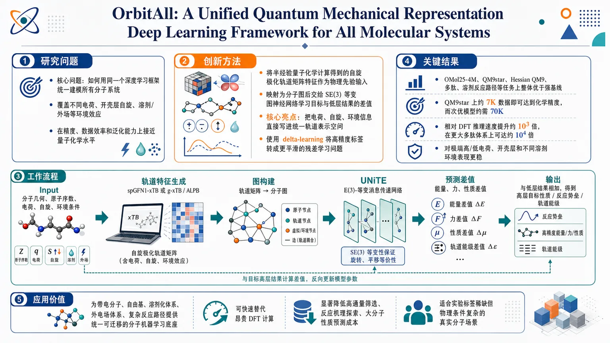
研究问题如何用同一个深度学习框架统一建模所有分子系统，尤其是同时覆盖不同电荷、开壳层自旋以及溶剂/外场等环境效应，并在精度、数据效率和泛化能力上接近量子化学水平。创新方法将半经验量子化学计算得到的自旋极化轨道矩阵特征作为物理先验输入，映射为分子图后交给 SE(3) 等变图神经网络学习目标与低层结果的差值；核心 Aha 点是把电荷、自旋、环境信息直接写进统一轨道表示空间，用 delta-learning 把难学的高精度标签转成更平滑的残差学习问题。工作流程输入分子几何、原子序数、电荷、自旋及环境条件；先用 spGFN1-xTB 或 g-xTB / ALPB 生成轨道矩阵等量子力学特征；再将这些特征构造成分子图，送入 E(3)-等变网络 UNiTE 进行消息传递；模型预测高低层能量、力或性质差值；最后与低层近似结果相加，输出高层目标性质、反应势垒或轨道能级。关键结果在 OMol25-4M、QM9star、Hessian QM9、多肽和溶剂反应路径等任务上，OrbitAll 用更少数据达到化学精度，并整体优于强基线；在 QM9star 上约 7K 数据即可达到化学精度，而次优模型约需 70K；相对 DFT 推理速度提升约 10³ 倍，在更大多肽体系上可达约 10⁴ 倍；对极端高/低电荷、开壳层和不同溶剂环境都表现更稳。应用价值为带电分子、自由基、溶剂化体系、外电场体系以及复杂反应路径提供一个统一、可迁移的分子机器学习底座，可用于快速替代昂贵 DFT 计算，显著降低高通量筛选、反应机理探索和大分子性质预测的成本，尤其适合实验标签稀缺但物理条件复杂的真实分子场景。基于给定文本可见部分，以下为全方位解析。
第一部分：核心概览
OrbitAll把半经验量子化学产生的自旋极化轨道特征与SE(3)-等变图神经网络结合，形成一个可统一处理任意电荷、自旋与环境效应的分子表示框架。其核心学术价值不在于单点精度提升，而在于把以往分散处理的带电、开壳层、溶剂化、外场系统纳入同一表示空间，并在数据效率、尺寸外推和环境泛化上同时超过强基线，展示了“物理先验+统一表示”作为分子基础模型的新路线。
---
第二部分：结构化快速回顾
《OrbitAll: A Unified Quantum Mechanical Representation Deep Learning Framework for All Molecular Systems》（None，）
背景
量子化学计算精确但昂贵，现有MLIP虽快，却常受限于训练分布，且通常难以原生处理电荷、自旋、溶剂/外场等条件。
方法
将spGFN1-xTB / g-xTB生成的轨道矩阵特征作为输入，映射到分子图，再用E(3)-equivariant GNN学习delta-label；统一建模带电、开壳层、溶剂化分子。
结果
在OMol25-4M、QM9star、Hessian QM9、polypeptide等任务上，OrbitAll以更少数据达到化学精度，并在极端电荷、跨尺寸外推、溶剂依赖反应路径上显著优于基线。
讨论
统一轨道表示把物理信息直接写入输入空间，提升了泛化与可迁移性，尤其适合稀缺数据和复杂真实体系。
局限
依赖低层SCF收敛；若半经验QM特征生成失败，模型无法继续预测。
结论
OrbitAll提供了一个可同时覆盖多类分子系统的统一QM表示学习框架，实现了DFT级精度与10³–10⁴倍加速之间的更优平衡。
---
第三部分：逐章节冷凝解析
Introduction
问题设定：DFT精确但代价高，常规模型快但泛化弱
量子力学方法如DFT能精确模拟分子体系，但成本极高；MLIP能显著加速，但通常只能在训练分布内工作。原文明确指出：*"ML models ... are often limited to the chemistry of their training data."* 这类限制不是速度问题，而是表示缺陷：模型没有把决定电子结构的关键物理条件显式纳入输入空间。
基础模型仍受训练域约束，极端条件下脆弱
UMA等基础MLIP虽然覆盖更广，但其强泛化主要来自训练分布足够多样，而不是对稀疏/缺失区域的原则性外推能力。原文写得很直接：*"their strong generalization therefore reflects interpolation across sufficiently diverse training distributions, rather than a principled ability to extrapolate"*。这意味着一旦遇到极端电荷、特殊自旋或复杂环境，模型仍可能失效。
电荷、自旋与环境效应是“所有分子系统”必须纳入的三类自由度
若要接近量子化学方法的通用性，至少要处理spin、charge、environmental effects。文本将这三者并列，分别对应开壳层体系、带电体系、溶剂/外场等真实环境。
- 自旋：*"Integrating spin effects enables applicability to open-shell systems"*
- 电荷：*"Integrating charge effects allows for the accurate modeling of charged species"*
- 环境：*"Integrating environmental effects, such as solvation and external electric fields"*
三者共同决定电子结构与反应路径，不是可选附加项。
轨道学习是关键思想来源，但此前缺少统一分子系统框架
轨道学习通过引入QM特征，已经证明能提升数据效率与泛化能力。文本将其概括为：*"leveraging QM-informed features—a strategy we call orbital learning—enables models to more effectively capture underlying physics"*。OrbitAll把这一思想推进一步：不是只用于某个任务，而是构造一个能统一处理所有分子系统的表示框架。
OrbitAll 的定位：首个统一轨道型深度学习框架
文本给出明确定位：*"the first orbital-based deep learning framework that uses a single unified representation to jointly model all molecular systems across varying charge, spin, and environmental conditions."* 这不是简单的模型改进，而是把分子机器学习从“任务拼接式扩展”推进到“统一表示式建模”。
---
2 Results
#### 2.1 The OrbitAll Framework
输入由几何、电子和环境三部分组成
OrbitAll接受atomic numbers (Z)、atomic coordinates (R)、total charge (Q)、total spin (S) 以及环境参数。轨道特征由spGFN1-xTB或g-xTB生成，核心集合为：
T = (Fα, Fβ, Pα, Pβ, S, Hcore)。
其中 Fα/Fβ 是上下自旋的Fock矩阵，Pα/Pβ 是对应密度矩阵，S 是重叠矩阵，Hcore 是核哈密顿量。原文将其称为：*"quantum mechanical matrices (QMMs), which collectively represent the converged mean-field electronic structure of the molecular system."*
统一表示空间可区分不同自旋、不同电荷、不同环境
同一套轨道特征可以区分 singlet/doublet/triplet、neutral/anion/cation、vacuum/implicit solvent/external field。关键句是：*"this representation can distinguish molecules with different spin states ... different charges ... and different environmental effects ... in a common representation space."* 这意味着表示层面已经把原先需要多个模型处理的条件统一了。
QMM 的变换满足 SE(3)-equivariance
OrbitAll依赖的QMM元素具有明确的旋转-平移变换规律，公式(2)说明矩阵块在旋转下按Wigner-D矩阵协变变化。文本强调：*"OrbitAll adheres to SE(3)-equivariance overall"*。这保证了模型输出不会因坐标系变化而失真，是几何深度学习的基本物理一致性要求。
骨干网络采用 UNiTE 等变框架
OrbitAll使用*"an E(3)-equivariant neural network framework, UNiTE"* 作为几何GNN骨架。重点不是换一个GNN名称，而是把轨道特征作为消息传递的基础输入，使网络处理对象不只是几何点云，而是携带电子结构信息的图。
Delta-learning 是训练目标的中心策略
OrbitAll不是直接预测高层标签，而是预测高低层之间的差值：*"the ML model predicts the delta-label Δy"*，即
Δy = yₜₐᵣget − yₗₒw-level。
这里的低层近似来自半经验QM，文本指出它能在生成特征时“零额外成本”提供低层量化信息。delta-learning的优势被概括为：*"the resulting delta energy surface is easier to learn"*。
这解释了为何OrbitAll兼具准确性与数据效率。
Direct-learning 与 delta-learning 的区分被显式建立
原文用*"direct-learning"*指直接学习目标值，作为对照。后续所有数据效率分析都建立在这一分界上，避免把模型结构优势与目标设定优势混淆。
---
#### 2.2 Diverse Chemistry and Real World Applications
##### Large-scale OrbitAll for Diverse Chemistry
在OMol25-4M上训练一般用途基础模型
OrbitAll的主训练集是OMol25-4M，即OMol25中约400万分子子集。标签来源于ωB97M-V/def2-TZVPD水平的单点混合DFT计算。内部QM特征来自g-xTB v2.0.0，并以g-xTB能量和力作为delta-learning基线。
在更小数据、更小模型下接近或超过UMA
OrbitAll-OMol25-4M在评估集上的表现为：
- MAE = 62.72 meV
- 约 1.45 kcal/mol
- per-atom MAE = 1.10 meV/atom
原文还给出与UMA的对比优势：训练数据在有限分子上少35倍，整体少130倍，模型规模小50倍，但在高电荷稀有区域仍然更稳。对应句子是：*"despite a substantially smaller training set ... and a 50-times-smaller model."*
极端电荷区域表现尤为突出
在离子电荷达到 +5及以上 或 −4及以下 的困难区间，OrbitAll比 UMA-s-1p2 具有更低MAE，只有 −10 这一极端负电态是例外。这个结果非常关键，因为极端电荷往往是反应活性和异常电子结构最敏感的区域。
##### Solvent-aware reaction pathway prediction
用隐式溶剂构造可实用的反应路径模型
为了做溶剂感知的MEP，构建了 T1x-Solv 数据集，覆盖 vacuum、water、methanol、toluene 四种环境，并在预训练的 OrbitAll-OMol25-4M 上微调。原文强调：*"a practical solvent-aware reactive MLIP"*。
Claisen 重排案例验证过渡态与势垒预测能力
以 allyl-p-tolyl ether (APTE) 的 Claisen rearrangement 为例，使用 NEB 计算不同隐式溶剂下的反应路径；参考水平为 ωB97M-V/def2-TZVPD/SMD。
OrbitAll对
- reaction barriers (ΔE‡)
- reaction energies (ΔrE)
- TS structure
都与参考高度一致。
过渡态几何误差极小，达到 0.02–0.03 Å RMSD
文本给出定量结果：对形成/断裂键长 rCO 与 rCC 的预测，整体 RMSD 仅 0.02–0.03 Å。还能捕捉到细微趋势：水和甲醇中的TS键长比甲苯更长，且甲苯中的势垒更高。
相比显式溶剂基线，成本约低两个数量级
与使用UMA并结合explicit-solvent umbrella sampling相比，OrbitAll在隐式溶剂下达到参考级精度，且计算代价低约100倍。原文原句是：*"at approximately two orders of magnitude lower computational cost"*。
Diels-Alder 反应进一步验证溶剂趋势泛化
对 cyclopentadiene + methyl vinyl ketone 的 Diels-Alder 反应，OrbitAll同样能捕捉：
- toluene 中势垒高于 vacuum
- water/methanol 中势垒低于 vacuum
说明它不仅记住一个案例，而是学到了溶剂效应的方向性规律。
---
#### 2.3 Molecular Systems with Different Spins and Charges
几何GNN通常缺少电荷和自旋输入
许多几何GNN（SchNet、PaiNN、DimeNet++、SphereNet、NequIP、EquiformerV2）并不原生包含charge与spin。OrbitAll通过轨道特征将这两类信息内生化。对比基线包括 SpookyNet 及其带 -SC 的增强版本。
QM9star 是处理开壳层和带电体系的核心基准
QM9star基于QM9，包含：
- neutral closed-shell molecules
- open-shell doublets (radicals)
- charged anions/cations
标签计算层级为 B3LYP-D3(BJ)/6-311+G(d,p)。
评价任务包括：
- 总能量 Eₜₒₜ
- radical species 的 HOMO/LUMO 能级，且区分 α/β 自旋：
- E_HOMO^α
- E_LUMO^α
- E_HOMO^β
- E_LUMO^β
训练规模覆盖 400K、20K、75K 的完整设定
最大训练集为 400K，验证集 20K，测试集约 75K。每个训练集都保持 neutral/radical/cation/anion 四类均衡分布，即 100K/类。这避免了类别不平衡掩盖模型对稀有物种的真实表现。
OrbitAll 在所有训练规模上整体最优
文本写得很明确：*"OrbitAll outperforms the other models consistently on the combined test set for all training sets of different sizes."*
并且在各个类别上，除训练规模超过 200K 时的 neutral 子集外，OrbitAll也都领先。说明其优势主要不在“简单中性分子”，而在非中性与自旋极化系统。
对非中性物种尤其稳健
OrbitAll在 radical、anion、cation 上表现更突出，neutral 与非neutral 的MAE差异更小。这个现象对应真实物理难点：带电体系的电子分布更敏感，模型更容易因分布偏移失稳。
Delta-learning 改善了 charged species 的分布偏移问题
直接学习时，所有模型都出现一个规律：cation 的误差普遍高于 anion；delta-learning下这种不对称不再明显。原文归因于：*"the delta-labels are easier to predict, especially for charged species"*。这说明delta-learning不仅降低误差，还缩小了不同电荷类别之间的学习偏差。
FMO 任务验证了自旋极化轨道特征的必要性
对 radical 的四个前线轨道能级，OrbitAll在所有目标上都优于对照模型。原文点出关键物理事实：*"predicting FMO levels for radicals is expected to be more challenging than for closed-shell species."* 仍能稳定领先，说明模型确实利用了自旋极化信息，而不是仅靠几何插值。
QMSpin 结果进一步支持统一表示的鲁棒性
附录中的 QMSpin 数据集上，OrbitAll在 singlet/triplet energies 和 spin gaps 上几乎全部取得最低MAE，且低于化学精度。可见统一模型对不同自旋多重度具有更强一致性。
##### Cost-Accuracy Analysis
数据效率显著优于直接学习基线
在 QM9star 上，OrbitAll只需约 7K 训练数据即可达到化学精度，而次优模型 DimeNet++-SC(D) 约需 70K。文本明确写道：*"OrbitAll requires ~7K training data ... whereas the next-best model ... requires ~70K."*
这正是10倍数据效率优势。
推理速度相对DFT提升约1000倍
OrbitAll相对 B3LYP-D3(BJ)/6-311+G(d,p) 约快 10³ 倍，同时保持近化学精度的MAE。这里的关键不是“快”，而是“快且不明显牺牲精度”。
##### Transferability to much larger molecules than in the training set
用151个多肽点测试尺寸外推
建立 polypeptide dataset，共 151 个数据点，涵盖 neutral、radical、cation、anion。模型仍只用 QM9star 的 400K 训练集训练，然后外推到更大的分子。
OrbitAll 的归一化误差随尺寸增长最慢
图5(A)看的是按 heavy atom 数归一化的MAE。OrbitAll在大分子上误差增长最小，说明不仅平均误差低，而且尺寸外推斜率更平缓。
化学精度内预测比例最高，约高1.5倍
OrbitAll在化学精度内的预测比例约为次优模型的 1.5倍。这比单看MAE更能体现稳健性，因为大分子外推常常由少数灾难性误差主导。
在更大分子上速度优势进一步扩大
在多肽上，OrbitAll达到 48.6 meV 的近化学精度MAE，同时相对原始DFT方法约 10,000倍 加速。原文强调，因多肽更大、电子数更多，速度优势比 QM9star 上更大。
---
#### 2.4 Molecular Systems Under Various Environmental Effects
环境效应可直接嵌入同一表示空间
OrbitAll不需要额外的显式嵌入层，环境信息通过SCF生成的轨道特征自然进入表示。原文的关键句是：*"OrbitAll naturally incorporates environmental effects into a common representation space"*。这使其能统一处理implicit solvent 与 external electric fields。
在Hessian QM9上训练四种溶剂环境的统一模型
训练一个单模型同时预测 vacuum、water、THF、toluene 中的总能量。轨道特征由 ALPB 方法生成，并在消融中验证优于其他隐式溶剂处理方式。
训练规模为 128K，即每种溶剂 32K。
不同溶剂的误差分布几乎一致
图6(A)显示四种溶剂的误差分布几乎重合，说明模型对不同环境具有稳定泛化。原文写道：*"the error distributions for different solvents are almost identical"*。
相较基线，MAE 低约3–4倍，且低于化学精度
图6(B)显示 OrbitAll 在各溶剂下的MAE都远小于化学精度，并且比 Hessian QM9 的基线低约 3–4倍。这说明隐式溶剂不是模型弱点，而是其被统一表示吸收后的普通条件。
外加电场也可处理，但细节放在附录
文本补充有外电场实验，结果见附录 S4.5。说明环境效应不止限于溶剂，框架具有更广可扩展性。
---
Discussion
统一框架的核心优势是把物理信息前置到表示层
OrbitAll被总结为一个*"physics-informed end-to-end SE(3)-equivariant deep learning framework"*。优势来自将charge、spin、environment 同时编码进轨道特征，而不是在输出端补丁式修正。
环境效应是最难处理的维度，OrbitAll把它变成可学习输入
环境效应的困难在于：类型多、影响非线性、输入维度复杂、优化困难。文本明确指出：*"Incorporating environmental effects remains particularly challenging"*。OrbitAll通过SCF生成的物理先验绕开了“纯几何模型必须自己猜环境”的问题。
实现DFT级精度与10³–10⁴倍加速的折中
讨论部分直接概括：*"OrbitAll enables property prediction at DFT-level accuracy while achieving a 10³–10⁴⁻fold speedup over DFT."* 这是一条非常清晰的主张：不是替代量子化学，而是把量子化学成本压到可批量应用的区间。
数据效率使其适用于实验稀缺标签
低样本需求意味着未来可以服务于实验代价高、标签稀缺的属性学习。这里的实质意义是：OrbitAll把“昂贵标签才能训练”的门槛往下推了一层。
局限性：依赖底层SCF收敛
最明确的局限是：*"failure of the SCF procedure prevents feature generation, and consequently, prediction."*
也就是说，模型不是完全摆脱QM计算，而是把依赖从高层标签转移到了低层特征生成。若SCF不收敛，流程中断。
潜在缓解方向：更鲁棒的非SCF方法
文本提出可考虑 GFN0-xTB 这类非自洽方法作为替代。这一建议本质上是在寻找更稳健的特征生成器，而不是改网络结构本身。
---
Methods
#### 4.1 The OrbitAll Framework / Unrestricted Open-shell Features
开壳层特征生成是方法章节的起点
可见文本只显示到该节开头：*"In QM calculations, electron spin can be treated using either restricted or unrestricted methods."* 这一段的功能是为后续unrestricted open-shell features 铺垫：开壳层体系需要区分上下自旋通道，因此OrbitAll使用的轨道特征本身就是spin-polarized 的。
可见部分未展开完整推导
当前文本在“Restricted calculations (e.g., restricted Hartree-Fock, RHF) con...”处截断，后续细节未显示，因此无法进一步提取该节完整方法步骤、实现细节或参数设定。
---
第四部分：深度理解与语言支持
术语解析
1. SE(3)-equivariance
含义：三维空间中旋转和平移后，模型输出按同样规则变换，而不会被坐标系选择破坏。
细微差别：它比“invariance（不变性）”更强也更精细。对能量这类标量，通常要求不变；对力、轨道分量、张量等，需要等变。OrbitAll把QMM放进E(3)/SE(3)等变框架里，保证电子结构表示与几何变换一致。
2. Delta-learning
含义：不直接学目标值，而学高层标签 − 低层近似。
微妙之处：学习残差通常比学习绝对值更容易，因为低层QM已捕捉主要物理，剩余差值更平滑、更低维。OrbitAll依赖这一点把DFT级标签转化成更容易拟合的任务。
3. Spin-polarized orbital features
含义：分别保留α/β自旋轨道信息，而不是把电子结构粗暴压成单一无自旋表示。
差别：对闭壳层分子，自旋分辨可能退化为对称形式；对 radicals、transition metals、triplets，这种分辨决定是否能捕捉真实电子重排。
4. Implicit solvation
含义：不用逐个放入显式溶剂分子，而是把溶剂当作连续介质或平均场处理。
学术差异：显式溶剂能描述局域氢键和构型涨落，但贵且不稳定；隐式溶剂更快、更平滑，但信息更抽象。OrbitAll的关键在于能把这种环境效应直接编码进轨道特征。
5. Quantum mechanical matrices (QMMs)
含义：Fock、密度、重叠、核哈密顿量等矩阵的统称。
细微差别：它们不是“原始输入特征”的普通名字，而是包含电子结构已收敛信息的物理对象。OrbitAll把它们映射到图表示中，相当于把电子态压缩成可学习的物理摘要。
疑难查证：为什么“统一表示”比“分别加模块”更强？
高年级博士生视角下，关键不在于多加几个输入通道，而在于是否把不同物理条件投影到同一可比较的表示空间。
传统做法常把电荷、自旋、溶剂看成附加标签，再让模型自己学“怎么用”。这会产生三个问题：
- 条件之间不共享表示几何：不同任务像是不同坐标系，参数无法高效复用。
- 外推边界模糊：模型只知道“见过类似标签”，不知道物理上为何应当迁移。
- 错误源难定位：几何、电子、自旋、环境的影响混在一起，难以判断失败来自哪一层。
OrbitAll的做法是：先用低成本QM把这些条件压缩成电子结构层面的统一摘要，再交给等变GNN学习残差。这样，模型在遇到新分子时，不是从零推断“电荷会不会影响它”，而是直接读取已经编码好的电子状态差异。
---
第五部分：创新评估与关联
创新性判断
1. 真正的新点是“统一处理所有分子系统”，不是单项SOTA
过去2–5年的相关工作里，主流路线大致分三类：
- 纯几何等变GNN：擅长局部化学环境，但对电荷、自旋、溶剂往往需要额外拼接。
- 轨道学习模型：利用QM特征提升精度，但多聚焦于某类任务或某类体系。
- Foundation MLIP：覆盖更广化学空间，但本质上仍受训练分布约束，环境效应常需后处理。
OrbitAll的新颖性在于把这三条线合并成一个框架：轨道特征 + 等变GNN + delta-learning + 环境原生编码。
2. 解决了“带电/开壳层/溶剂化不能在一个模型里同时稳健处理”的问题
过去的模型往往需要为不同问题单独设计输入改造或专门数据集。OrbitAll直接把charge、spin、environment纳入同一特征体系，避免了“每加一种物理效应就再造一个子模型”的碎片化开发方式。
3. 解决了“强泛化是否只是插值”这一基础模型痛点
UMA类模型的强表现主要建立在训练分布广度上。OrbitAll在极端电荷、更大尺寸分子、未见溶剂趋势上仍能保持优势，说明提升不仅来自数据量，而来自表示层的物理结构更强。
4. 把溶剂反应路径从昂贵显式采样拉回到可扩展隐式表示
在反应势垒和TS搜索上，OrbitAll用隐式溶剂直接达到参考级结果，并相对显式溶剂基线节省约100倍成本。这个点很关键，因为它触及真实计算化学中最难规模化的一类任务之一：环境敏感反应路径。
5. 与过去几年工作的关键差异
相较于 OrbNet / OrbNet Equi 一类轨道学习，OrbitAll更强调统一分子系统范围与环境效应；
相较于 NequIP / EquiformerV2 / PaiNN 等几何GNN，OrbitAll把电子结构矩阵作为输入，而不是仅靠几何；
相较于 UMA 这类基础MLIP，OrbitAll在更少数据和更小模型下，仍对高电荷稀有区域和溶剂反应更强。
结论性判断
OrbitAll的创新不只是“更准”，而是把分子机器学习从“几何驱动的局部外推”推进到“轨道驱动的统一物理表示学习”。这一步最重要的学术意义，是为所有分子系统建立了一个可迁移、可外推、可扩展的共同表示底座。
-
02
📊 含图深析
📄 摘要：面向高维成分空间合金，提出开源高通量流程：由机器学习原子间势训练得到相干应变贡献，并结合 CALPHAD 预测的解析导数判定自旋分解稳定性；流程还用于微结构演化与形貌可视化，支持在候选成分中寻找可利用自旋分解调控性能的区域。
💡 亮点：将 MLIP、CALPHAD 解析导数和微结构模拟串成高通量流程，可在高维合金成分空间直接定位自旋分解区。该框架把热力学筛选推进到形貌预测层面，适合自旋分解强化合金设计。
📖 展开分析 + 配图
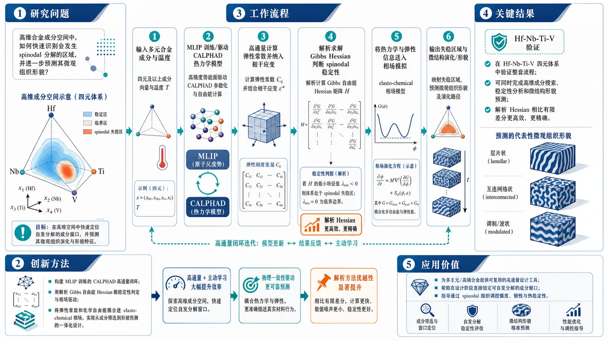
研究问题在高维合金成分空间中，如何快速识别会发生 spinodal 分解的区域，并进一步预测其微观组织形貌？创新方法构建 MLIP 训练的 CALPHAD 高通量闭环：用解析 Gibbs 自由能 Hessian 做稳定性判定与相场驱动，再把弹性常数和化学自由能耦合进 elasto-chemical 相场，实现从成分筛选到形貌预测的一体化设计。工作流程输入多元合金成分与温度 → MLIP 训练/驱动 CALPHAD 热力学模型 → 高通量计算弹性常数并纳入相干应变 → 解析求解 Gibbs Hessian 判断 spinodal 稳定性 → 将热力学与弹性信息送入相场模拟 → 输出失稳区域与微结构演化/形貌。关键结果在 Hf-Nb-Ti-V 四元体系中验证了整套流程，可同时完成高维成分搜索、稳定性分析和微结构形貌预测；解析 Hessian 相比有限差分更高效、更精确。应用价值为多主元/高熵合金提供可复用的高通量设计工具，帮助在设计阶段直接锁定可自发分解的成分窗口，指导通过 spinodal 组织调控强度、韧性与热稳定性。第一部分：核心概览
这项工作把 MLIP、CALPHAD、解析 Hessian 和 相场模拟 串成一个高通量闭环，用于在高维成分空间中快速筛选具有spinodal decomposition 倾向的合金，并进一步预测其微观组织形貌。核心贡献不只在于“预测是否失稳”，更在于把稳定性分析与形貌演化统一到同一套可扩展工作流中，且用解析导数替代有限差分以提升效率与数值精度。以 Hf-Nb-Ti-V 四元体系作为示范，定位于“从热力学筛选到微结构设计”的方法学桥梁。
---
第二部分：结构化快速回顾
From MLIPs to Microstructure: A High-Throughput Computational Framework to Design Spinodal Alloys in High-Dimensional Composition Spaces via Analytic Derivatives of CALPHAD Model Predictions（None，）
- 背景：高维合金设计中，识别 spinodal decomposition 区域是关键；若目标是利用 spinodal 微结构调控性能，还需要预测微观形貌与演化。
- 方法：构建一个开源、高通量工作流，结合 MLIP 训练的 CALPHAD 热力学模型、MLIP 弹性常数计算、以及 elasto-chemical phase field 模拟；所有稳定性分析与相场模拟均使用 解析 Gibbs energy Hessians。
- 结果：在 Hf-Nb-Ti-V 四元体系中演示了该流程，可同时处理微结构稳定性与形貌预测。
- 讨论：解析 Hessian 相比有限差分在效率和精度上更优；MLIP 提供了可扩展的原子级数据驱动能力，使高维成分空间探索更可行。
- 局限：当前可见信息仅有摘要，未披露具体误差、样本量、计算开销、与实验对照或跨体系泛化表现。
- 结论：该框架把热力学失稳判定与微结构演化模拟统一起来，为 spinodal 合金的高通量设计提供了可复用工具链。
---
第三部分：逐章节冷凝解析
目前可解析内容：摘要（Abstract）
完整正文未提供，无法可靠恢复原始章节标题、图表、方法细节、数值结果与补充分析。以下仅基于标题与摘要做严格解析。
#### 研究问题被定义为“高维成分空间中的 spinodal 设计”
- 关键任务是识别 “regions of design space subject to spinodal decomposition”，即哪些成分区域会发生 spinodal decomposition。
- 这类问题在多元合金中尤为重要，因为成分维度升高后，传统人工经验或低维扫描难以有效覆盖设计空间。
- 摘要原文直接给出问题定义：*"Identifying regions of design space subject to spinodal decomposition is a critical component of alloy design in high-dimensional composition spaces."*
- 这里的“critical component”说明目标不是边缘性分析，而是合金设计主流程中的核心环节。
#### 工作流核心是 MLIP-trained、CALPHAD-based、open-source
- 主要方法被明确描述为 “a Machine Learning Interatomic Potential (MLIP)-trained, CALPHAD-based, open-source workflow”。
- MLIP 负责提供可扩展的原子级信息；CALPHAD 提供热力学预测；open-source 暗示方法具有可复用性和工具链推广潜力。
- 原文引述：*"we present a Machine Learning Interatomic Potential (MLIP)-trained, CALPHAD-based, open-source workflow for high-throughput microstructure stability analysis and visualization."*
- 这一表述同时包含三个层面：训练来源（MLIP）、热力学基础（CALPHAD）、应用目标（高通量稳定性分析与可视化）。
#### 稳定性分析与形貌预测被放入同一框架
- 不仅判断是否进入 spinodal 区域，还进一步预测 microstructure evolution and morphology。
- 这意味着框架不止输出“稳定/不稳定”二分类，而是覆盖从热力学判据到组织形貌的连续链条。
- 原文引述：*"prediction of microstructure evolution and morphology is also needed."*
- 这一点很关键，因为很多合金设计工作止步于相稳定区判定，而未进入组织演化层面。
#### 相场模拟被热力学模型驱动
- 用 MLIP-generated thermodynamic models 作为输入，驱动 elasto-chemical phase field simulation。
- 这说明相场模拟并非独立进行，而是直接从 MLIP/CALPHAD 输出中获取热力学驱动力。
- 原文引述：*"MLIP-generated thermodynamic models are fed into an elasto-chemical phase field simulation."*
- “elasto-chemical” 表明模拟同时考虑弹性项与化学自由能项，适用于 coherent 失配体系中的微结构演化。
#### 相干应变通过高通量 MLIP 弹性常数计算纳入
- 摘要明确指出 coherent strain contributions 由 high-throughput MLIP elastic constant calculations 捕获。
- 这一步把晶格失配引起的弹性能量引入稳定性分析，对于 spinodal 分解尤其重要，因为相干应变会显著改变失稳条件与形貌选择。
- 原文引述：*"coherent strain contributions are captured via high-throughput MLIP elastic constant calculations."*
- 这意味着框架不是只看化学自由能曲率，而是看化学—弹性耦合后的真实失稳趋势。
#### 解析 Hessian 是效率与精度的核心改进
- 稳定性分析与相场模拟都使用 analytically-derived Gibbs energy Hessians。
- 其目的明确是相对 finite difference approximations 提升计算效率和准确性。
- 原文引述：*"Both stability analyses and phase-field simulations utilize analytically-derived Gibbs energy Hessians to improve computational efficiency and accuracy over finite difference approximations."*
- 这是方法学亮点之一：高维成分空间下，有限差分会产生步长敏感性、噪声放大和维度灾难；解析 Hessian 可显著缓解这些问题。
#### 示范体系是 Hf-Nb-Ti-V 四元高熵体系
- 摘要给出的具体验证对象是 Hf-Nb-Ti-V quaternary system。
- 原文引述：*"We demonstrate this workflow by investigating microstructure stability in the Hf-Nb-Ti-V quaternary system."*
- 这说明框架至少在一个典型多主元耐高温合金体系中被展示，体系选择与 spinodal stability 研究高度相关。
- 但摘要未给出具体成分点数量、相图扫描范围、实验验证样本或数值结果。
#### 当前可见文本没有提供定量结果
- 摘要中没有出现诸如 n、误差条、P value、RMSE、运行时间、相图边界位置、临界成分阈值等定量信息。
- 因此，无法从现有材料提取统计显著性或性能提升幅度。
- 这一缺失限制了对方法优劣的定量判断，只能确认其方法结构与应用场景。
---
第四部分：深度理解与语言支持
1）术语解析
#### MLIP (Machine Learning Interatomic Potential)
- 指用机器学习拟合的原子间势函数。
- 语境中它不是单纯的“预测器”，而是作为连接原子尺度结构与热力学/弹性性质的计算引擎。
- 与传统经验势相比，它通常兼顾更高精度与更强泛化，但依赖训练数据覆盖度。
#### CALPHAD
- CALPHAD 是“CALculation of PHAse Diagrams”的缩写。
- 语境里它承担的是热力学模型角色，负责把成分、温度映射到自由能与相稳定信息。
- 与纯数据驱动模型不同，它保留了较强的物理可解释性。
#### Gibbs energy Hessian
- 即 Gibbs 自由能对组成变量的二阶导矩阵。
- 在 spinodal 问题中，Hessian 的特征值决定局部稳定性：若存在负曲率方向，就意味着体系对微小组成扰动不稳定。
- “analytically-derived” 的关键意义在于，直接求导比有限差分更稳定，尤其在高维空间中。
#### Coherent strain
- 指不同相在界面上保持晶格连续性时产生的弹性应变。
- 在相干析出或 spinodal 分解中，coherent strain 会改变失稳区域与形貌方向选择。
- 不是附属修正项，而是决定微结构实际演化路径的重要物理量。
#### Elasto-chemical phase field
- 表示把化学自由能与弹性能耦合进相场模型。
- 适合描述化学驱动力和弹性约束共同控制的微结构演化。
- 这比只含化学扩散的相场模型更接近真实合金中的相分离过程。
2）疑难查证：spinodal 与 binodal 的差别
- binodal 关注相平衡边界；进入 binodal 以内说明系统可能发生分相，但仍可能存在成核势垒。
- spinodal 是更深的失稳区域，二阶导曲率为负，小扰动即可自发放大，不需要跨越成核势垒。
- 这篇工作的重点在于识别 spinodal decomposition 区域，因此关注的是“自发分解”的极不稳定状态，而不仅是一般两相共存区。
- 对高维合金设计来说，这个区别非常关键：前者决定是否会快速形成细尺度自组织结构，后者只是告诉你“可能分相”。
3）疑难查证：为什么一定要解析 Hessian
- 在高维成分空间里，有限差分要对多个成分维度重复扰动，代价迅速上升。
- 还会受到步长选择影响：步长太小会放大数值噪声，太大又会引入截断误差。
- 解析 Hessian 直接给出二阶曲率，既适合判断稳定性，也更适合相场中的连续演化计算。
- 所以这里的创新不只是“更快”，而是“高维情况下更可控、更稳健”。
---
第五部分：创新评估与关联
1）创新性判断
相较于过去 2–5 年相关工作，这里的新颖性主要集中在四点：
#### 把稳定性筛选和微结构预测真正打通
- 许多工作只做相图或失稳边界预测，最多停留在“哪里会分相”。
- 这里进一步进入 microstructure evolution and morphology，把“是否失稳”与“长成什么样”连成一条流水线。
- 这使设计目标从热力学判定升级为组织可设计。
#### 面向高维成分空间的高通量可扩展性
- 过去不少相场或 CALPHAD 工作集中在二元、三元体系。
- 这里强调 high-dimensional composition spaces，说明设计目标面向更真实的多元合金搜索空间。
- 在高维空间中，解析导数和 MLIP 驱动的组合尤其关键，否则计算成本会迅速失控。
#### 解析 Hessian 替代有限差分
- 这是较强的方法学增量。
- 许多传统稳定性分析依赖有限差分近似，但在高维与强耦合体系中容易不稳。
- 解析 Hessian 同时改善 efficiency 和 accuracy，属于明确的算法升级，而非仅仅工程封装。
#### 把 MLIP 用作 CALPHAD 与相场之间的桥梁
- MLIP 既参与弹性常数高通量计算，又服务于热力学建模与相场输入。
- 这使原子尺度学习模型不再只是“替代 DFT 的快模型”，而成为连接多个尺度的中间层。
- 这类“从 MLIP 到 microstructure”的闭环，是近几年多尺度材料设计中更前沿的方向。
2）解决了前人未完全解决的问题
- 高维多元体系中 spinodal 设计的可扩展性不足。
- 热力学稳定性与微结构形貌分离处理，缺乏统一流程。
- 有限差分 Hessian 在高维下的效率与精度瓶颈。
- 相干应变与化学驱动的耦合难以高通量纳入。
---
结论性判断
在可见信息范围内，这篇工作的核心价值是：把 MLIP、CALPHAD、弹性常数高通量计算、解析 Gibbs Hessian 和 elasto-chemical phase-field 统一成一个面向 spinodal alloy design 的高通量框架。真正的创新点不是单个模型，而是多尺度、多物理量、可扩展的工作流整合。
如果需要，我可以进一步把这篇文章整理成：
- 一页式论文图解笔记，或
- 适合组会汇报的 PPT 提纲，或
- 按“方法—公式—物理意义”重构的深度导读。
-
03
📊 含图深析
📄 摘要：提出量子启发张量网络框架，用 AlphaEarth 地理嵌入和矩阵乘积态模型对 Gargano 地区野火易发性进行二分类与多分类。模型引入可解释量子掩膜；二分类训练中出现明显顿悟式泛化转变，多分类分析揭示类别间混淆，并以量子混合度表征类别表示。
💡 亮点：矩阵乘积态模型结合 AlphaEarth 嵌入实现野火易发性分类，并观察到二分类顿悟动力学。张量网络在地理科学分类中同时提供压缩表示和量子态可解释量。
📖 展开分析 + 配图
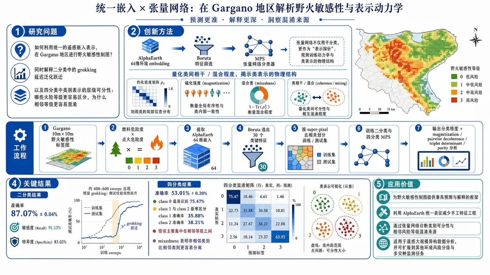
研究问题如何利用统一的遥感嵌入表示，在 Gargano 地区进行野火敏感性制图，并同时解释二分类中的 grokking 延迟泛化跃迁与四分类中类别表示的层级可分性：哪些火险等级更容易区分，为什么相邻等级更容易混淆。创新方法将 AlphaEarth 64 维环境 embedding、Boruta 特征筛选与 Matrix Product State（MPS）张量网络分类器结合，用张量网络不只是做分类，而是作为“表示探针”去观察训练动力学；Aha 点在于用 reduced density matrices、magnetization、mixedness 把类别间相干/混合程度量化出来，直接揭示类表示的物理结构。工作流程先在 Gargano 区构建 10m×10m 野火敏感性标签图，将燃料危险度与点火危险度相乘得到四级标签；再提取 AlphaEarth 64 维嵌入，并用 Boruta 选出 30 个关键特征；随后按 super-pixel 去相关划分训练/测试集，训练二分类与四分类 MPS；最后输出分类精度，并用 magnetization、pairwise decoherence、triplet determinant、purity 分析类间可分性与训练过程中的 grokking 现象。关键结果二分类达到 87.07%±0.04% 准确率，敏感度 91.13%，特异度 83.02%，并在约 400–600 sweeps 出现明显 grokking：测试性能突然跃升。四分类准确率为 53.01%±0.20%，其中 class 0 最易识别（75.47%），class 1 和 class 2 最难区分（35.88%、38.21%），说明错误主要集中在相邻等级之间。mixedness 分析进一步表明，非相邻类别比相邻类别更容易分离。应用价值为野火敏感性制图提供一种兼具预测与解释的框架：既可利用 AlphaEarth 统一表征减少手工特征工程，又能通过张量网络诊断类别可分性、识别相邻风险等级的混淆来源；适用于遥感大规模异构数据分析，也可扩展到其他环境风险分级与多灾种监测任务。第一部分：核心概览（Overview）
这项工作把 AlphaEarth embeddings、Boruta 特征选择 与 Matrix Product State (MPS) 张量网络分类器结合，用于 Gargano 地区野火敏感性制图。最大贡献不在单纯精度，而在于同时揭示了二分类中的 grokking 相变式泛化跃迁，以及四分类中通过 reduced density matrices 刻画的 class mixedness 层级结构：远离的类别比相邻类别更可分。结果把环境分类问题转化为可量化的“类可辨识性”物理诊断框架。
---
第二部分：结构化快速回顾
《Tensor Network Machine Learning for Wildfire Susceptibility Mapping: from Grokking Dynamics to Quantum Mixedness of Class Representations》（None，）
- 背景：EO 数据规模急剧膨胀，传统方法面临算力与多源异构特征融合压力；野火敏感性受气候、燃料、地形与人类活动耦合控制。
- 方法：以 Gargano 地区四分类野火标签为目标，使用 AlphaEarth 64 维 embedding + Boruta 选出 30 个特征，训练 MPS 二分类与四分类模型，并用 magnetization 与 reduced density matrices 解析内部表示。
- 结果：二分类准确率 87.07% ± 0.04%，四分类准确率 53.01% ± 0.20%；二分类在 400–600 sweeps 出现明显 grokking；四分类中 class 0 最易学，1/2/3 混淆集中在相邻类别。
- 讨论：张量网络不仅给出竞争性分类结果，还能直接暴露类间可分性层级；非相邻类别比相邻类别更易分离。
- 局限：四分类性能明显低于经典 Random Forest >95%；方法依赖 embedding 质量与超参数，且目前主要提供解释性而非 SOTA 精度。
- 结论：MPS 在 EO 野火制图中提供了一个兼具预测与物理可解释性的框架，能度量类别代表性的 coherence / mixedness / separability。
---
第三部分：逐章节冷凝解析（Section-by-Section Condensing）
Introduction
EO 数据正从“可处理”走向“数据密集型”问题。
多源、多光谱、高时间分辨率的遥感任务把地球观测推向大规模异构数据分析场景。核心表述是：*"The continuous expansion of satellite-based Earth Observation (EO) systems has transformed EO into a data-intensive discipline"*。这一背景直接引出对更强特征压缩与多模态表征学习的需求。
经典机器学习在 EO 上面临算力与尺度瓶颈。
文本明确指出传统方法受到 *"computational cost, scalability, and the ability to capture complex spatial-spectral relationships"* 的压力，说明问题不只在分类器选择，更在高维空间中的结构建模能力。
量子计算与量子机器学习被视为高维表示的潜在突破口。
相关论述把 QC 的 superposition 和 entanglement 作为高维信息处理机制，并强调 QML 仍受 *"noise, limited qubit availability, and short coherence times"* 约束，因此现实路径转向 hybrid 或 quantum-inspired 方法。
表示学习被提升为 EO 工作流的中心环节。
论述把 representation learning 置于核心位置，特别是针对云原生、多源地理分析中的异构观测压缩。这里点名 AlphaEarth Foundations，其作用是把不同环境信息整合为紧凑 embedding field。原文关键句是：*"representation learning is becoming central for transforming heterogeneous EO observations into compact and informative features suitable for mapping and prediction tasks."*
Google Earth Engine 与 AlphaEarth 构成了可扩展输入管线。
GEE 被用于整合多源遥感数据，而 AlphaEarth 提供 *"a global embedding field that integrates heterogeneous environmental information into a compact representation"*。这意味着输入层不再是手工拼接的多个栅格，而是统一的 latent vector。
张量网络被定位为连接量子启发表示与经典机器学习的结构化模型。
张量网络的优势被概括为通过低秩分解编码高阶相关性，"*mimicking the entanglement structure of quantum systems while remaining fully implementable on classical hardware*"。这使 MPS 成为可解释、可扩展、适合处理复杂 EO 数据的候选架构。
Gargano 作为具挑战性的 Mediterranean case study。
研究对象是意大利南部 Gargano 半岛，其地貌、植被与人类压力高度异质，且地中海气候加剧野火风险。核心动机是：*"This area represents a particularly challenging Mediterranean case study"*。
研究结构预告了三条主线：性能、grokking、mixedness。
结构说明明确给出后续分析路径：二分类中观察 grokking，四分类中分析类间混淆，并在 Discussion 中与 state of the art 对照。关键句是：*"we first analyze the emergence of a grokking transition... We then extend the analysis to the four-class setting... Finally, in the Discussion section, we compare the proposed approach with the current state of the art."*
---
Materials
Study area and wildfire reference data
Gargano 的地表异质性直接定义了任务难度。
研究区位于 southern Italy 的 northern Puglia，包含 forested uplands、agricultural zones 和 coastal urban settlements。原文概括其火灾背景为 *"historically been affected by recurrent wildfire events"*，并归因于 Mediterranean climatic conditions、fuel availability 与 anthropogenic pressures。
目标标签由燃料危险度与点火危险度相乘构成。
野火目标层不是单一指数，而是两部分组合：fuel hazard layer 与 ignition danger layer。hazard 来自 *"predicted 1-hour fine dead fuel load"*；danger 基于环境、土地覆盖、人类活动预测因子和历史火灾记录。最终地图通过 *"multiplying the predicted fuel load and danger maps"* 得到，并重分类为四类。
四分类具有清晰的语义层级。
标签定义如下：
- Class 0：no/negligible susceptibility
- Class 1：low susceptibility
- Class 2：moderate susceptibility
- Class 3：high susceptibility
这种离散化保留了野火过程的梯度信息，同时适合监督学习。原文强调：*"This discretization allows capturing gradients in wildfire processes while preserving interpretability."*
训练单元被统一到 10 m × 10 m 网格。
标签图被下采样到 *"10 m × 10 m grid cells"*，每个 cell 作为一个 observation unit。这样做兼顾了分辨率、可扩展性与与卫星特征对齐的便利。
地理解释上，燃料与 Fire Climate Index 是主导因素。
文中指出 wildfire occurrence 在 Gargano 与 fuel availability、land cover composition（forest、grassland）和 Fire Climate Index 强相关，后者是 *"the dominant explanatory variables in the study area"*。
AlphaEarth embedding field representation
AlphaEarth 把每个像元压缩为 64 维 latent vector。
每个 *"10 m × 10 m pixel is represented by a 64-dimensional vector"*，而且这个向量汇总了年尺度多源环境信息。它等价于一个空间上可直接使用的 embedding field。
embedding 的核心意义是“语义邻近性”。
定义中强调：位置环境越相似，向量表示越接近。关键句为：*"locations with similar environmental characteristics are expected to have similar vector representations"*。这构成后续分类学习的输入假设。
AlphaEarth 的优势在于替代手工 predictor engineering。
传统方法需要单独构造 land cover、vegetation dynamics、surface conditions 等栅格；AlphaEarth 把它们收束进统一表示。原文明确指出其减少了 *"data collection, preprocessing, temporal compositing, spatial resampling, and cross-dataset harmonization"* 的负担。
目标与输入在时间上保持一致。
参考 wildfire layer 来自 2019 imagery、ancillary datasets 和 field inventory data，对应年尺度 AlphaEarth embeddings 被下载并作为输入。这里的对齐降低了 temporal mismatch 风险。
Boruta 从 64 个维度中筛出 30 个信息维。
为了减少冗余，*“Boruta feature selection was applied”*，结果得到 *"a consistent subset of 30 informative features"*。这些特征随后同时用于 binary 与 four-class 任务，保证比较公平。
---
Results
Sampling and decorrelation strategy
样本通过 super-pixels 进行空间去相关。
为缓解 EO 分类中的 spatial autocorrelation，训练和测试集不是随机像元划分，而是从 super-pixels 中采样。每个 super-pixel 约整合 *"nearly 10⁶ original pixels"*，最终从中抽取 *"10⁴ embedding pixels"*。
训练/测试按 super-pixel 70/30 划分。
明确分区是 *"70% for training and 30% for testing"*。这减少了信息泄漏，使测试更接近真实泛化。
所有实验采用三次独立运行。
图中均值和标准差均来自 *"three independent runs"*，因此所有性能与动态曲线都不是单次偶然结果。
Classification performance
二分类性能显著优于四分类。
表 1 给出：
- Binary Accuracy: 87.07% ± 0.04%
- Sensitivity: 91.13% ± 0.08%
- Specificity: 83.02% ± 0.09%
这说明 class 0 与 classes 1–3 的粗粒度分割可被 MPS 学得较好。
四分类精度下降到 53.01%。
四分类总体 accuracy 为 53.01% ± 0.20%，各类表现不均衡：
- Class 0: 75.47% ± 0.47%
- Class 1: 35.88% ± 1.52%
- Class 2: 38.21% ± 2.52%
- Class 3: 62.49% ± 1.73%
中间两类最难区分，说明类别边界主要集中在相邻等级之间。
Grokking dynamics in binary classification
二分类出现典型 grokking 式延迟泛化跃迁。
训练曲线的关键特征是训练集先持续提升，而测试集长期滞后，随后在约 400–600 sweeps 之间突然跃迁。原文概括为 *"a clear manifestation of a grokking-like transition"*。
早期阶段体现为“记忆优先，泛化滞后”。
测试 sensitivity 长时间低位，而 specificity 更早上升，意味着模型先学会拒绝较易类，但还不能稳健识别另一类。这里的描述是：*"the model is primarily capturing superficial correlations or class biases rather than learning a generalizable decision boundary."*
跃迁后训练与测试迅速对齐。
在 grokking 点之后，test sensitivity 快速追上训练曲线，test accuracy 同步跳升，且 generalization gap 变小。原文强调这是 *"the hallmark of grokking"*。
MPS 的“有效纠缠”可视化了表示重组。
解释层面把这一跃迁理解为网络获得足够的 *"effective entanglement"* 或 correlation capacity，从局部启发式转向全局结构编码。
Multiclass dynamics
四分类中的 grokking 更分散、更层级化。
没有单一清晰跳变，而是各类别在不同训练阶段逐步改善。原文指出 *"the grokking process appears distributed across classes and unfolds over a broader range of training sweeps."*
Class 0 学得最快，1/2/3 明显更慢。
class 0 很快接近 80%，而 class 1、2、3 多停留在 40%–60%。这对应更高的样本同质性与更强代表性。
中间类别的困难反映更细的非线性边界需求。
class 1、2、3 需要更复杂的 feature interaction 才能分开，因此在初期 representation learning 中收益较小。
四分类的 grokking 是“层级式”而非同步式。
模型先学到 low-susceptibility vs rest 的粗结构，再进一步细分少数类。原文概括为 *"hierarchical: the model first internalizes the coarse structure... and only later refines its representation"*。
Magnetization patterns
σZ magnetization 充当 feature activation 的物理代理。
每个 feature site 的 Pauli σZ 期望值被用来观察 quantum mask 内部动态，说明分类器内部不是黑箱，而是有可追踪的物理量。
二分类中出现稳定的条带结构。
在训练初期之后，图 3 中出现清晰横向 bands，并在 sweeps 中稳定，表示部分特征持续对决策边界有固定作用。
磁化模式与 grokking 时刻同步。
条带稳定的时段与性能跃迁一致，说明 generalized performance 的突然提升伴随内部表示重组。原文强调 *"the abrupt gain in generalization is accompanied by a global reorganization"*。
四分类中的 class 0 模式几乎复制二分类结果。
class 0 在四分类中的 magnetization pattern 与二分类 class 0 mask *"almost perfectly"* 一致，说明低敏感类的表示稳定且任务设定无关。
1/2/3 的模式对应二分类中的聚合高敏感类。
四分类里 class 1、2、3 的图样与二分类中 aggregated 1–3 mask 高度相似，只是幅度更低、更扩散，说明模型学到的是共享的高风险结构。
标准差峰值很小且集中在 grokking 附近。
二分类 class 0 mask 的 std 最高约 7 × 10⁻²；四分类中同类峰值约 8 × 10⁻²，之后迅速衰减到 negligible values。这强化了稳定化的内部表示这一结论。
Quantum masks mixedness
mixedness 指标直接度量类表示的可分辨性。
这里的核心不是预测分数，而是 reduced density matrices 所承载的 coherence / distinguishability。原文说这些量 *"allow us to track how information about the different wildfire vulnerability levels is progressively encoded"*。
Pairwise decoherence factors Γij 显示相邻类更相干。
相邻类别对如 (1,2)、(2,3) 保持更高 Γij，而非相邻对如 (0,2)、(0,3) 更低，意味着远距离类别更容易区分。
Triplet determinants Δijk 强化了同一结论。
例如 (0,1,3) 的 Δijk 高于 (1,2,3)，表明包含更分离类别的三元组在几何上张成更大的“体积”，可辨识信息更多。
Conditional purity 从反面刻画环境混合。
包含邻近类别的 pair/triplet 往往保持更高 purity，例如 (0,1)、(2,3)、(0,1,2)、(1,2,3)，说明这些子空间被诱导出的混合更少。
三类诊断一致指向同一层级结构。
pairwise、triplet 与 purity 三组诊断都显示：non-adjacent categories are more sharply distinguished than adjacent ones。这解释了四分类错误主要集中在邻接类别之间。
---
Discussion
野火敏感性本质上是多因子耦合问题。
这里强调不是单一控制变量，而是 climatic、ecological、geomorphological 与 anthropogenic 因子共同作用。关键句是：*"fire occurrence is governed by the interaction of climatic, ecological, geomorphological, and anthropogenic factors."*
野火敏感性制图具有多灾种联动意义。
野火可触发 vegetation cover、runoff、soil erosion、sediment connectivity 和 slope stability 的级联变化，因此该任务也服务于 multi-hazard monitoring。
AlphaEarth embedding 是对传统手工 predictor 层的替代。
它减少预处理负担，同时保留环境梯度信息，特别适合 heterogeneous Mediterranean regions。
MPS 的价值是“可学习性探针”而不只是分类器。
文中明确把 MPS 视为 probing tool，用于检测 embeddings 中类别是否真的可分。核心表述是：*"the MPS classifier is useful not simply as a predictive model, but as a way to probe the learnability of wildfire susceptibility classes from AlphaEarth embeddings."*
与随机森林基线相比，MPS 精度不占优，但解释更深。
经典方法在 Gargano 上的 Random Forest 已达 *"overall accuracy above 95%"*。相比之下，MPS 不追求最优精度，而强调可解释内部动力学与类间结构。
grokking + magnetization 给出一致的表示重组证据。
二分类的 grokking 与 magnetization 稳定化同步；四分类中 class 0 结构与二分类高度一致，说明模型学到的是层级化组织，而非偶然拟合。
mixedness 指标提供了传统 XAI 之外的类间关系量化。
pairwise decoherence、triplet determinants、purity 不只是 feature importance，而是直接量化 class-to-class 的 coherent overlap 与 distinguishability。原文指出这提供了 *"a quantitative characterization of inter-class relationships."*
结论性判断很明确：精度不是唯一目标。
尽管精度未达到 RF 水平，MPS 提供了传统监督学习看不到的几何结构信息，尤其是 *"latent geometric properties of the wildfire susceptibility representation"*。
---
Methods
MPS classifier
MPS 被定义为高阶张量的低秩链式分解。
MPS 又称 tensor trains，核心在于把高阶张量分解为一串互联低秩分量。原文说其特征是 *"the factorization of high-order tensors into a sequence of interconnected low-rank components"*。
bond dimension χ 控制复杂度与表达力的权衡。
χ 决定保留多少 singular components，从而调节模型容量。原文明确指出它 *"regulates the trade-off between model flexibility and computational efficiency."*
MPS 的理论来源是量子多体与量子信息。
这类结构最初用于描述 quantum many-body states 和 dynamical processes，现在迁移到机器学习。
量子启发编码把经典输入提升到 Hilbert space。
方法段强调经典向量先被映射到高维希尔伯特空间，以便在线性操作中实现非线性表示。关键句是：*"classical input vectors are lifted into a high-dimensional Hilbert space"*。
这套编码并不依赖真实量子硬件。
张量网络在这里是完全经典可实现的 quantum-inspired architecture，优势在于可压缩与可解释，而不是量子加速本身。
> 说明：可见方法段在“Specifically, each …”处中断，因此后续具体编码公式、损失函数、优化器、χ 取值等细节未出现在当前材料中。
---
第四部分：深度理解与语言支持（Understanding & Nuance）
1) 术语解析
Grokking
不是普通的“训练变好”，而是训练集早已拟合、测试集却长期停滞，随后在某个阶段突然泛化跃迁。这里的微妙差别在于：它强调 延迟出现的结构性泛化，而非平滑提升。
Mixedness
在量子/密度矩阵语境下，mixedness 表示状态不纯、信息与环境发生了更强耦合。这里并非“混乱”的口语意义，而是指类别表示之间的 可区分性下降 或 coherence 减弱。
Bond dimension
MPS 的关键超参数。直观上是“保留多少相关性”的容量旋钮。χ 太小会欠拟合，太大会增加复杂度并可能损害压缩优势。
Decoherence factor
这里不是宏观噪声的泛称，而是定量描述两个类别条件态之间保留多少相干性的指标。值越高，说明两类在表示空间里越接近、越难分。
Conditional purity
衡量在给定子空间里，类别表示保持“纯”的程度。纯度高通常意味着子空间内部更一致，但也可能暗示类别之间仍存在重叠。
2) 疑难查证
为什么二分类能出现明显 grokking，而四分类更碎片化？
二分类只需要学习一个粗边界：class 0 vs 1/2/3。这个边界更容易由全局结构支撑，因此 MPS 在某个训练阶段完成“表示重组”后，测试性能会突然跃迁。四分类需要同时切分四个等级，尤其 1 和 2、2 和 3 相邻且语义接近，模型必须学习更细的局部差异，所以泛化会呈现 层级式、渐进式 而非单点跳变。
为什么 non-adjacent classes 更可分？
野火敏感性等级是有序标签，但并非等距类别。Class 0 与 class 3 在燃料、植被、点火条件上差异极大；而 class 1 和 2 或 2 和 3 往往共享中间状态。张量网络的 mixedness 诊断显示，模型更容易把“极端状态”拉开，却很难把“邻近等级”彻底分离。
magnetization 为什么能解释分类内部机制？
σZ 期望值在这里相当于每个特征位点的“激活偏向”。当训练后出现稳定条带，说明不同特征在决策中被持续赋予一致角色；这比单纯的 feature importance 更细，因为它展示的是 训练过程中的动态组织。
---
第五部分：创新评估与关联（Synthesis & Novelty）
新颖性集中在三层。
- 任务层：把 wildfire susceptibility mapping 与 tensor network machine learning 直接耦合，而不是停留在常规遥感分类或黑箱深度学习。
- 表示层：用 AlphaEarth embeddings 作为统一环境表征，再用 Boruta 压缩到 30 维，形成“基础表示 + 结构化学习器”的两段式框架。
- 解释层：不仅看 accuracy，还引入 grokking dynamics、magnetization、mixedness / reduced density matrices 来刻画类表示的物理结构。
相对近 2–5 年相关工作的推进点主要有三类：
- 从预测到机制：过去很多 EO/野火研究停留在 RF、XGBoost、CNN、Transformer 的精度比较，这里进一步问“类别为什么可分、何时可分”。
- 从 feature importance 到 class geometry：常见 XAI 多给出变量重要性，而这里直接量化类别间 coherence、purity 与 distinguishability。
- 从静态结果到训练动力学：grokking 让训练过程本身成为研究对象，这在环境地学分类中相当少见。
前人未充分解决的问题是：
- 如何在不依赖手工构造多栅格特征的情况下，利用统一 embedding 做野火敏感性制图；
- 如何解释相邻野火等级之间的系统性混淆；
- 如何把分类器内部状态和可分性结构联系到可计算的物理量。
综合判断：
这项工作的原创性不在刷新最高精度，而在于把 环境分类问题 转译成一个可观测、可分解、可量化的 张量网络表示学习问题。在 EO 与 quantum-inspired ML 的交叉领域，这种“性能 + 物理可解释性 + 类间层级诊断”组合具有明显方法学新意。
-
04
📊 含图深析
📄 摘要：在光子混合量子-经典神经网络中，把近程量子硬件噪声视为原生正则化而非单纯误差源。使用 Quandela Perceval 模拟器与 MerLin 框架，在 Iris、Digits 和 MNIST 上训练，并将 Perceval 七参数物理噪声模型直接注入训练；遗传算法搜索六个连续噪声维度以优化泛化。
💡 亮点：物理噪声被主动用于光子混合量子神经网络训练，类似经典噪声注入正则化。该策略把 NISQ 器件缺陷转化为可调泛化资源。
📖 展开分析 + 配图
研究问题光子混合量子神经网络中的物理噪声，能否不再只是误差源，而是作为一种可利用的“硬件原生正则化器”来提升泛化性能？这种正则化是否具有普适性，还是强依赖数据集与电路架构？创新方法将 Perceval 中的七参数物理噪声模型直接嵌入光子量子层训练，把噪声从“需要消除的缺陷”改写为“可调正则项”；再用遗传算法在 6 个连续参数和 1 个布尔参数组成的联合噪声空间中搜索最优配置，并结合二阶损失展开给出类似 Tikhonov 的隐式正则解释。工作流程输入数据先做标准化与降维：Iris 直接编码，Digits 先 PCA 到 8 维，MNIST 先 PCA 到 16 维；随后进入由经典预处理层、光子量子层和经典分类头组成的 PHQCNN；在量子层上注入七参数噪声模型；先做单参数敏感性扫描，再用遗传算法联合搜索最优噪声配置；最后在相同噪声条件下重训并测试，比较有噪声与无噪声基线的精度。关键结果Iris 准确率从 95.54% 提升到 96.36%，提升 0.82 个百分点；Digits 从 94.71% 提升到 96.16%，提升 1.45 个百分点；MNIST 从 97.10% 降到 95.89%，下降 1.21 个百分点。三套任务的最优噪声配置完全不同，单参数扫描没有发现任何跨数据集通用的有益噪声设置，说明噪声正则化具有明显的数据集与架构依赖性。应用价值为光子量子神经网络提供一种“无需额外算法开销”的硬件原生正则化思路，提示某些物理噪声在特定任务上可帮助泛化；同时也给出明确边界：噪声并非总是有利，必须结合数据集、架构与噪声通道联合判断。该结论可用于指导光子量子硬件设计、噪声建模与训练策略选择。《PN-QNN: Harnessing Physical Noise as a Native Regularizer in Photonic Hybrid Quantum Neural Networks》（None，）
第一部分：核心概览
这篇工作把光子混合量子神经网络中的物理噪声从“误差源”重定义为“硬件原生正则化器”，并用 Perceval 的七参数噪声模型在 Iris、Digits、MNIST 上做联合搜索。核心结果是：经遗传算法调优后，Iris 与 Digits 获得小幅准确率提升，而 MNIST 反而下降，说明噪声正则化存在数据集与架构依赖性，不能被单一噪声配置普适化。这一结论把经典噪声注入正则化、量子 dropout 与光子硬件噪声建模连接起来，并给出二阶展开的 Tikhonov-like 理论解释。
第二部分：结构化快速回顾
《PN-QNN: Harnessing Physical Noise as a Native Regularizer in Photonic Hybrid Quantum Neural Networks》（None，）
背景：NISQ 光子硬件噪声通常被视为负担；类比经典噪声注入，探索其能否成为 PHQCNN 的天然正则化。
方法：在 Perceval+MerLin 上构建 Iris/Digits/MNIST 三类 PHQCNN，把七参数物理噪声直接注入训练；用 GA 联合搜索 6 个连续参数和 1 个布尔参数。
结果：GA 最优噪声使 Iris 提升 0.82pp、Digits 提升 1.45pp，但 MNIST 下降 1.21pp；单参数扫描未发现普遍有益项。
讨论：二阶损失展开表明噪声引入类似 Tikhonov 的隐式正则项，强度取决于数据、架构与噪声通道的交互。
局限：三套架构不同，数据集效应与架构效应混杂；结果来自仿真，非真实硬件扰动实验。
结论：物理噪声可充当“免费”的硬件原生正则化，但收益不具普适性，需联合搜索与数据集/架构协同判断。
第三部分：逐章节冷凝解析
I Introduction
把噪声从敌人改写为潜在正则化器
光子量子硬件中的decoherence、photon loss、gate imprecision 通常被当作必须压制的误差；这里提出的核心问题是：*“can it instead be characterized and, within limits, exploited as a free, hardware-native regularizer?”* 这一问题把 PHQCNN 的物理噪声与经典深度学习中的噪声注入直接对齐。
研究动机来自经典噪声正则化与量子 dropout
经典神经网络中，训练时注入噪声已知可对应平滑型正则项；文中将其概括为 *“provably equivalent under mild assumptions to a smoothing (Tikhonov-like) penalty”*。量子侧已有 dropout 思路，但那是随机移除门或纠缠连接；这里的重点不同，噪声并不改写电路结构，而是改变物理实现精度。
三项贡献明确且互补
贡献被拆成三点：
1) 将 Perceval 的噪声模型重定义为可调正则化机制，*“reframe Perceval’s physical noise model ... as a tunable regularization mechanism”*；
2) 设计 GA 在物理分组约束下搜索 7 维噪声空间，*“under a physically-motivated gene grouping (source, interferometer, global)”*；
3) 给出实验与理论双证据，*“small positive effect on Iris and Digits and a negative effect on MNIST”*，并用二阶展开解释其为何可能呈现 Tikhonov-like regularizer 行为。
---
II Background and Related Work
#### II-A Classical noise injection as a regularizer
经典噪声注入等价于平滑惩罚
这里明确引用经典结论：*“Training a neural network with noise added to its inputs is, to leading order, equivalent to adding an explicit smoothing penalty”*。这为后续把物理噪声视作隐式正则项提供理论母体。
更一般的噪声注入理论已经外推到深层网络
相关工作已把噪声从输入层扩展到任意层，并给出显式正则项，*“derived the explicit form of the induced regularizer”*。还存在结构化噪声注入方案，强调鲁棒性收益。这里的定位是：光子硬件噪声是这一经典框架在量子-光子系统中的对应物。
#### II-B Quantum dropout
量子 dropout 与本工作是互补机制
量子 dropout 通过随机移除门、量子比特或纠缠边来降低表达能力，*“randomly removed during training to limit the expressibility”*。这里的噪声机制不改变电路拓扑，而是改变物理实现的忠实度，属于另一类正则化来源。
结构扰动与实现扰动被严格区分
一句关键区分是：*“quantum dropout changes the structure of the circuit being trained”*，而此处研究的是“how faithfully that fixed circuit is physically realized”。这意味着一个控制模型容量，一个控制硬件失真，二者可并存。
#### II-C Photonic Hybrid quantum neural networks and noise modeling
平台由 Perceval 与 MerLin 组成
实验与训练在 *“Quandela’s Perceval simulation library”* 和 *“MerLin framework for differentiable, PyTorch-native photonic quantum layers”* 上完成。前者负责线性光学与噪声建模，后者负责可微训练。
七参数噪声模型覆盖近端光子硬件的主要缺陷
使用的噪声模型包含 7 个参数：brightness、indistinguishability、g(2)、g(2) distinguishable、transmittance、phase imprecision、phase error。它们对应源端损耗、多光子纯度、可分辨性、全局传输损耗与相位调控误差，属于 *“standard characterization of near-term linear-optical hardware imperfections”*。
---
III Methodology
#### III-A Datasets and architectures
三套任务分别对应三套 PHQCNN 架构
数据集是 Iris、Digits、MNIST。每个任务都有独立架构，避免共享单一模型形态。Iris 用 6 模式、3 光子；Digits 用 8 模式、4 光子；MNIST 用 8 模式、8 光子。
Iris 架构最纯粹
Iris 只有 4 个标准化特征，直接 angle-encode 到 6 模式的 QuantumLayer，输入为 3-photon Fock state，输出经过 grouping/readout 得到 3 类 logits，*“without any additional classical pre- or post-processing”*。这使其成为最接近纯量子-光子层的设置。
Digits 架构加入经典特征提取器与分类头
Digits 64 维输入先做 PCA 到 8 维，再经 BatchNorm1d + MLP(Linear → SiLU → Linear) 映射后进入 8-mode、4-photon QuantumLayer，最后接 Linear → GELU → Dropout(0.1) → Linear(10) 的 classical head。这里的核心是“经典预处理 + 光子中间层 + 经典输出头”的混合设计。
MNIST 架构更深且更强
MNIST 把 784 像素 flatten、标准化并 PCA 到 16 维，再用含 dropout 的 MLP 映射到 8 个值，通过可学习的 per-mode encoding sigmoid *“(x⋅s+b)⋅π”* 转相位，送入 8-mode QuantumLayer，最后接更深的 classical head。MNIST 因任务更难，架构也更复杂。
#### III-B Noise model and injection
噪声直接挂到量子层实验对象上
实现方式是把 *“pcvl.NoiseModel”* 附加到量子层的 experiment 对象上，且“after the layer is constructed (before training)”。这意味着噪声是训练前设定的硬件条件，而不是训练中随机重采样的额外策略。
七个参数分别有明确物理含义
- Brightness：源端第一步光子生成损耗。
- Indistinguishability：两光子不可区分的概率。
- g(2)：在 0 延迟处的二阶强度自相关，刻画双光子误发射。
- g(2) distinguishable：若生成光子可区分则启用的布尔项。
- Transmittance：全系统统一损耗。
- Phase imprecision：相位调制器的最大校准误差。
- Phase error：热漂移与电子抖动导致的随机相位噪声。
这些定义把统计学参数与硬件物理源一一对应。
训练与评估共享同一噪声配置
一旦附加噪声模型，*“the same model instance, under the same injected noise, is active during both training and evaluation forward passes”*。因此测试精度反映的是“在该物理条件下”模型的性能，而不是无噪声干净推理。
#### III-C Per-parameter sensitivity sweep
单参数扫描覆盖 7 个维度
对每个噪声参数单独扫描 20 个值，范围 [0, 0.95]，步长 0.05。每个点都从相同初始化重新训练，训练 100 epochs。这里仅在 Iris 和 Digits 上做了单参扫描。
优化器与学习率按数据集调整
使用 Adam，学习率 Iris 为 0.005、Digits 为 0.008。这个设置说明比较不是靠优化器差异驱动，而是数据与噪声配置本身。
#### III-D Noise-parameter optimization
GA 在七维联合空间中搜索
GA 搜索 6 个连续变量和 1 个布尔变量，目标是最大化验证集准确率。基因按物理来源分组：source、global、interferometer。交叉时保持这些子系统边界，避免随机打散物理含义。
GA 超参数完整给出
采用 tournament selection (k=3)、精英保留 top 2、交叉概率 P(C)=0.8、高斯变异 pm=0.4，并令 σ 每代乘以 0.95。再用 niching 保持多样性，避免早熟收敛。种群规模 20，进化 25 代，每个候选训练 100 epochs。
最优配置先筛后重训
筛出的最佳噪声配置会从头重训，并用同样的 epoch budget 与架构在 test split 上评估，再与同样流程的 noiseless baseline 比较。这保证最终结果不是 GA 过程中的偶然拟合。
---
IV Results and Discussion
#### IV-A Experimental setup
数据预处理与划分明确
表 I 给出：
- Iris：4 特征标准化，3 类，60:20:20，6 modes / 3 photons；
- Digits：64 像素 → 标准化 → PCA(8)，10 类，60:20:20，8 modes / 4 photons；
- MNIST：784 像素 → 标准化 → PCA(16)，10 类，75:15:10，8 modes / 8 photons。
#### IV-A1 Training protocol
基线并非完全无正则
所有条件都用 Adam，并统一施加 weight decay = 1e-4。因此 noiseless baseline 已包含轻微的 L2 regularizer，噪声条件是在“已正则化”的基线上再比较。
评估不受采样噪声干扰
使用 Perceval 的 simulator backend 与 *“exact permanent-based (SLOS) computation”*，不是有限 shots 的采样估计，所以结果不含额外 shot noise。
每种条件都重复 5 个随机种子
结果是 *“run at 5 seeds each, with final accuracy averaged”*。图表中的均值与标准差因此对应跨种子稳定性，而不是单次偶然值。
#### IV-A2 Reporting
同时看最终精度与训练动态
汇报指标包含 final test accuracy，以及训练曲线中的 train/test gap 作为正则化信号；单参数扫描则画成 accuracy-versus-parameter 曲线。
#### IV-B Main quantitative results
Iris 与 Digits 小幅受益，MNIST 受损
主结果非常清楚：
- Iris：95.54% ± 0.38 → 96.36% ± 0.26，提升 +0.82pp；
- Digits：94.71% ± 0.16 → 96.16% ± 0.19，提升 +1.45pp；
- MNIST：97.10% ± 0.61 → 95.89% ± 0.27，下降 -1.21pp。
这些变化发生在相同 epoch budget 下，说明不是训练更久导致。
#### IV-C Noise configuration found by the GA
三套最优噪声配置彼此完全不同
表 III 中 GA 找到的配置是：
- Iris：Brightness 0.776，Indistinguishability 0.265，g(2) 0.473，g(2) distinguishable = 1，Transmittance 0.616，Phase imprecision 0.902，Phase error 1.585；
- Digits：0.309，1.000，0.860，1，0.480，0.0732，1.081；
- MNIST：0.716，0.886，0.310，1，0.730，0.905，2.148。
没有单一“通用最优噪声谱”
Brightness、phase imprecision、phase error 的跨度都很大，分别约在 0.31–0.78、0.07–0.90、1.08–2.15 之间。结论直接是：*“No single parameter setting is shared across datasets”*。
#### IV-D Per-parameter sensitivity sweep
单参数趋势不稳定
在 Iris 和 Digits 上逐个扫 7 个噪声参数时，没有任何参数表现出跨全范围单调、普适正向的趋势。结果是有的参数让精度下降，有的基本持平。于是单参数分析无法预测 GA 最终找到的联合配置。
联合搜索比独立调参更合理
这里的关键推论是：物理噪声的正则化效果不是各参数独立相加，必须在 7 维空间里联合搜索，*“rather than tuning parameters independently”*。
#### IV-E Training dynamics by condition
Iris：最终精度接近，但测试曲线更噪
Iris 上，noiseless 与 GA-best noise 的训练精度末期接近；但 GA-best noise 下测试精度在很多阶段更低、更抖动。
Digits：中期噪声条件更优
Digits 上，GA-best noise 在训练中段明显领先基线，后期收敛到相近区间，这与最终 +1.45pp 的提升一致。
MNIST：噪声条件训练更慢且最终更差
MNIST 的两条曲线并不同步；GA-best noise 在早期训练更慢，100 epochs 内最终准确率显著更低。这是负效应最直观的动态证据。
#### IV-F Discussion
##### IV-F1 Why physical noise can regularize
从永久式概率到扰动损失展开
理想光子输出概率写成永久式：
*“P(T|S,U)=|Perm(US,T)|² / (s₁! ... tₘ!)”*。
训练目标是对无噪声模型最小化期望损失。物理噪声不改变 (U(θ)) 的函数形式，但会改变每次实际实现，形成 (f_θⁿoⁱse(x)=f_θ(x)+ξ(θ,x))。
二阶展开给出 Tikhonov-like 项
期望损失展开后出现一阶均值项与二阶协方差项：
*“a second-order expansion ... gives ... a Tikhonov-like regularization term”*。当 (μ_ξ(θ,x)approx 0) 时，一阶项消失，保留下来的就是依赖 (Σ_ξ) 和 Hessian 的隐式正则。含义是：噪声是否有利，取决于它是否主要在压平高曲率方向。
##### IV-F2 What the data actually supports
三条经验事实最重要
1) Iris 小幅受益；2) Digits 小幅受益；3) MNIST 稳定受损。
因此物理噪声是“可用但不保证有益”的正则源，且最佳噪声配置在不同数据集上结构不同。
##### IV-F3 Limitations
架构混杂是最大限制
Iris、Digits、MNIST 的模式数、光子数、经典头深度都不同，因此数据集效应与架构效应不能完全分离。也就是说，不能仅凭这组实验断言“MNIST 对噪声更敏感”，更准确的表述是“该 MNIST 架构下该噪声设置不利”。
结论来自仿真而非硬件
实验是 simulation-based，真实硬件上这种可控噪声扰动尚未实现，因此“硬件原生正则化”的证据目前仍是间接证据。
---
V Conclusion
核心结论是“能用，但不普适”
结论再次压缩为一句：*“physical noise can act as a free, hardware-native regularizer, but its benefit is not guaranteed”*。Iris 与 Digits 获得小而稳定的收益，MNIST 则受到明显损害。
GA 与单参数扫描共同证明了非普适性
单参数扫描没有发现任何普适有益噪声因子，GA 也在三个数据集上收敛到三套结构不同的配置，说明噪声正则化不是单变量规律，而是多参数耦合现象。
未来方向是更大规模与可预测性
后续工作需要扩大到更大、更复杂的数据集与电路规模，并检验二阶展开能否从“解释现象”升级为“预测哪些数据会受益”。
---
Acknowledgment
资金来源
支持来自 NYUAD 的 CIDSAI、CQTS、CCS 等中心，以及葡萄牙 FCT/Instituto de Telecomunicações 项目资助。该部分不影响方法与结论，仅说明资助背景。
第四部分：深度理解与语言支持
1) 术语解析
Hardware-native regularizer
不是普通的“正则项”，而是直接来自硬件物理机制的隐式正则化。这里的“native”强调不需要额外算法注入，噪声本身就是训练系统的一部分。
Tikhonov-like penalty
不是严格等于经典 Tikhonov 正则，而是指二阶展开后出现的“平滑/抑制高曲率”效应。其本质是对函数局部敏感度的惩罚。
Partial distinguishability
指多光子之间不是完全相同，也不是完全可区分，而是介于二者之间。对光子干涉而言，这会改变干涉可见度和输出分布。
Niching
遗传算法中的保多样性策略，防止种群过早集中到局部最优。这里用于维护噪声配置搜索空间的覆盖率。
SLOS
*Strong simulation* of linear optical processes，用精确永久式计算输出概率，不依赖 Monte Carlo shots，因此结果是“解析精确”到模拟模型本身。
2) 疑难查证
为何同一种噪声会对不同数据集产生相反作用
噪声是否像正则化，取决于它增加的是“有益平滑”还是“有害偏移”。如果模型在某个数据集上已经足够简单，适度噪声可抑制过拟合；如果模型需要更高精度去拟合复杂边界，噪声就会直接伤害可分性。二阶展开中的协方差项说明：噪声更像在损失曲面的高曲率方向加阻尼，是否改善泛化，要看数据分布、模型容量和噪声方向是否对齐。
为什么单参数扫描看不出 GA 的结果
七个参数不是独立变量。真实效应来自组合：源损耗、干涉可见度、相位误差和全局透过率共同决定输出分布的偏移与平滑程度。单独改变一个参数时，其他参数固定在“无噪声值”，无法呈现协同效应，因此会错过联合最优解。
为什么 MNIST 反而更差
MNIST 的架构更深、输入更复杂、光子数更多，训练目标本身更难。在这种情况下，噪声带来的偏移可能超过其正则化收益，导致优化速度变慢、最终收敛点更差。换言之，噪声不是免费收益，只有在“扰动幅度 < 过拟合收益”时才有正效果。
第五部分：创新评估与关联
创新性判断
相对近 2–5 年工作的新颖性主要有三点
- 把“物理噪声”正式改写成训练正则项
过去相关工作多把光子噪声当成 fidelity 指标或错误源，也有量子 dropout 研究结构性随机失活；这里直接把 Perceval 的七参数硬件噪声用于训练，并以“免费正则化”作为中心命题。
- 七维联合搜索而非单因子调参
过往更常见的是固定某一类噪声、或单独研究某种损耗/相位误差。这里使用 GA 在 6 连续 + 1 布尔的联合空间中找最优配置，并明确证明单参数曲线无法预测联合最优解。
- 经验结果与二阶理论同时落地
不只报告准确率增减，还用二阶展开解释噪声为何可能表现为 implicit Tikhonov-like regularizer。这种“现象—机制”双层闭环，在近期 PHQCNN/光子 QML 文献中相对少见。
解决的前人未解问题
前人主要解决“如何测噪声”“如何抑噪”“如何做量子 dropout”。这里回答的是更细的问题：能否利用硬件噪声本身来提升泛化，以及何种条件下会成功或失败。最终给出的不是普适正结论，而是一个更严格的边界条件：噪声可成为正则化，但必须依赖数据集、架构和噪声通道的三方耦合。
-
05
📄 摘要：面向量子储备计算，提出模拟器基准，把结构设计表述为受约束黑箱搜索；搜索变量包括输入编码、储备深度、纠缠拓扑、测量特征、状态重置、特征构造和读出正则化。大语言模型参与引导候选结构生成与筛选，以改善近程量子机器学习架构选择。
💡 亮点：量子储备计算的架构选择被转化为 LLM 引导黑箱搜索问题。该方法覆盖编码、纠缠、测量和读出等关键自由度，有助于系统化设计近程量子时序模型。
📖 展开分析 + 配图
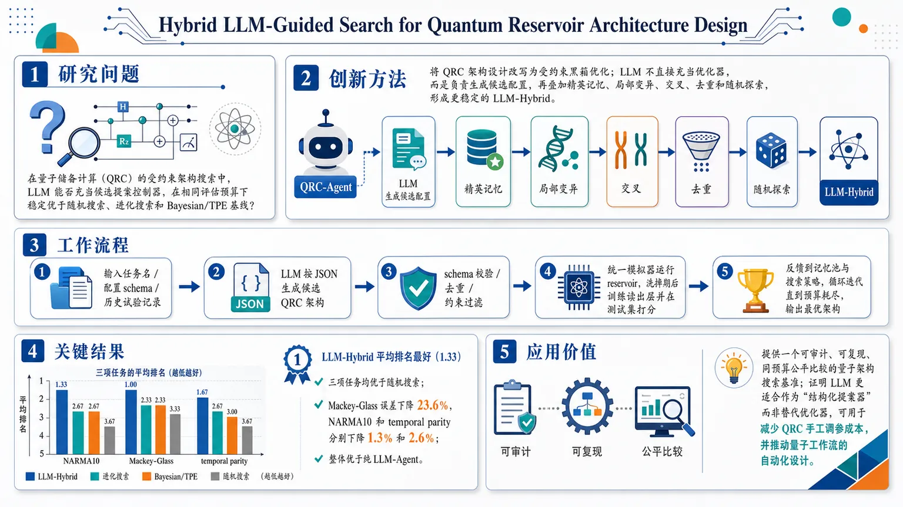
研究问题在量子储备计算（QRC）的受约束架构搜索中，LLM 能否充当“候选提案控制器”，在相同评估预算下稳定优于随机搜索、进化搜索和 Bayesian/TPE 基线？创新方法提出 QRC-Agent，把 QRC 架构设计改写为受约束黑箱优化；LLM 不直接充当优化器，而是负责生成候选配置，再叠加精英记忆、局部变异、交叉、去重和随机探索，形成更稳定的 LLM-Hybrid。工作流程输入任务名、配置 schema 和历史试验记录；LLM 按 JSON 生成候选 QRC 架构；系统做 schema 校验、去重和约束过滤；统一模拟器运行 reservoir、洗掉期后训练读出层，并在测试集打分；将结果反馈给记忆池与搜索策略，循环迭代直到预算耗尽，输出最优架构。关键结果在 NARMA10、Mackey-Glass、temporal parity 三项任务上，LLM-Hybrid 的平均排名最好（1.33），三项任务均优于随机搜索；相较随机搜索，Mackey-Glass 误差下降 23.6%，NARMA10 和 temporal parity 也分别下降 1.3% 和 2.6%；同时整体优于纯 LLM-Agent。应用价值提供一个可审计、可复现、同预算公平比较的量子架构搜索基准，证明 LLM 更适合作为“结构化提案器”而非替代优化器，可用于减少 QRC 手工调参成本，并推动量子工作流的自动化设计。第一部分：核心概览 (Overview)
提出 QRC-Agent，把 quantum reservoir computing (QRC) 的架构设计转化为受约束黑箱搜索，并首次系统比较 LLM 作为搜索控制器 与随机、进化、Bayesian/TPE 基线的表现。核心发现是：LLM 单独并不稳定，但与记忆、变异、交叉和去重结合后形成的 LLM-Hybrid，在三项时序任务上平均排名最佳，并在统一预算下稳定优于随机搜索，构成一个可审计、可复现的量子工作流搜索范式。
---
第二部分：结构化快速回顾
《Hybrid LLM-Guided Search for Quantum Reservoir Architecture Design》（None，）
- 背景：QRC 性能强依赖输入编码、深度、纠缠拓扑、测量特征、状态重置、特征构造和读出正则等架构选择，传统手工调参成本高。
- 方法：构建 QRC-Agent 基准，把 QRC 设计写成约束黑箱优化；比较 Random / Evolutionary / Bayes-TPE / LLM-Agent / LLM-Hybrid 五种策略。
- 结果：在 NARMA10、Mackey-Glass、temporal parity 上，LLM-Hybrid 平均最稳；25 次评估、3 个随机种子下，三任务均优于随机搜索，Mackey-Glass 相对误差下降 23.6%。
- 讨论：LLM 不是“量子最优器”，但作为结构化 proposal controller，嵌入经典搜索框架后更可靠。
- 局限：仅限模拟器、小型 reservoir、3 个种子、25 次预算、受限 gate-based 搜索空间；未证明硬件优势。
- 结论：最有效的模式不是让 LLM 替代优化器，而是让它在验证、记忆、探索和目标评估之外提供高层候选方案。
---
第三部分：逐章节冷凝解析 (Section-by-Section Condensing)
Abstract
- QRC 的性能瓶颈来自架构而非训练本身。
QRC 被定义为“固定量子动力学 + 轻量级经典读出”的时序特征映射，但性能“strongly depends”于架构设计，包括编码、深度、拓扑、测量、重置、特征和正则。原文：*“QRC uses fixed quantum dynamics as a high-dimensional temporal feature map and trains only a lightweight classical readout”*；*“its performance depends strongly on architecture choices”*。
- QRC-Agent 把架构设计形式化为约束黑箱搜索。
研究问题不是让 LLM 直接模拟或替代量子系统，而是检验 LLM 是否能充当搜索中的提案控制器。原文：*“formulates QRC design as constrained black-box architecture search”*；*“evaluates whether large language models can act as proposal controllers”*。
- 五种策略在相同预算下公平比较。
对比对象包括随机搜索、进化搜索、Bayesian/TPE、反馈式 LLM Agent、以及带记忆和遗传算子的 LLM-Hybrid。原文：*“compares five policies under identical evaluation budgets”*；*“LLM-Hybrid, which combines LLM proposals with memory, mutation, crossover, duplicate avoidance, and exploration”*。
- LLM-Hybrid 最稳定，但不是全能优化器。
在 NARMA10 与 temporal parity 上排名第一，在 Mackey-Glass 上排名第二，且在 25 次评估、3 个种子的设定下，三任务都优于随机搜索。原文：*“LLM-Hybrid is the most consistent policy”*；*“The results do not show that LLMs are universal QRC optimizers”*。
---
I Introduction
- QRC 的基本工作流是“固定动力学、训练读出”。
输入在每个时间步被编码进量子态或电路，reservoir 演化后测量观测量，只训练 classical readout。原文：*“At each time step, an input is encoded into a quantum state or circuit, the reservoir evolves, observables are measured, and only a classical readout is trained”*。
- QRC 适合 NISQ 场景。
因为量子子系统不做梯度优化，避免了变分训练在噪声量子设备上的不稳定和高成本。原文：*“appealing for noisy intermediate-scale quantum settings where variational training can be expensive or unstable”*。
- QRC 性能高度依赖配置选择。
需要选择编码方式、qubits 或 virtual nodes 数量、电路族或物理动力学、观测量、是否 reset、输入历史长度、readout 正则等。原文：*“performance is highly configuration-dependent”*；*“A practitioner must choose…”*。
- 已有工作已把 QRC 设计看作搜索问题。
包括 memory-reset 优化、面向多任务的遗传配置、可复现软件工具。原文：*“Prior work has therefore begun to treat QRC design as a search problem”*。
- 研究空缺是：LLM 能否作为 QRC 搜索控制器。
目标不是量子优势、硬件性能或自动发现物理，而是一个更窄且可审计的问题：LLM 是否能在同一模拟器与评分器下提出有效候选。原文：*“We do not claim quantum advantage, hardware performance, or autonomous physical discovery”*；*“can an LLM serve as a useful proposal controller for QRC architecture search”*。
- 四项贡献被明确列出。
其一是紧凑的 schema-validated 搜索空间；其二是闭环 benchmark；其三是 LLM-Hybrid；其四是与随机、进化、Bayesian/TPE 的同预算比较。原文：*“Our contributions are: (1) … (2) … (3) … (4) …”*。
---
II Background and Related Work
#### II-A Reservoir Computing and QRC
- 经典 reservoir computing 的核心范式是固定动力学 + 简单读出。
Echo State Networks 和 Liquid State Machines 仅训练读出层。原文：*“use fixed recurrent dynamics and train only a simple readout”*。
- QRC 用量子动力学替代经典 reservoir。
输入序列 (uₜ) 经量子演化和测量得到特征向量 (rₜ)，再用 ridge regression 读出预测 ( hatyₜ )。原文：*“replaces the reservoir with a quantum dynamical system”*；公式 (1) 给出 ( hatyₜ = Wrₜ + b ) 与 ( min_W sumₜ |yₜ₋Wrₜ|₂² + łambda |W|₂² )。
- 任务指标统一为“越低越好”。
回归任务最小化 NRMSE，temporal parity 最小化分类错误率。原文：*“For regression tasks we minimize normalized root mean squared error (NRMSE); for temporal parity we minimize classification error”*。
- 性能受记忆、非线性、测量、耗散和重置等权衡控制。
这直接把 QRC 推向 architecture search。原文：*“reservoir performance is governed by trade-offs among memory retention, nonlinearity, measurement choice, dissipation, and reset policy”*。
#### II-B Search and LLM Agents for Quantum Workflows
- 已有非 LLM 方法包括进化搜索和 Bayesian optimization。
Configured QRC 用 evolutionary search 调整 reservoir dynamics；Optuna 的 TPE 是标准黑箱优化工具。原文：*“Configured QRC uses evolutionary search”*；*“Bayesian optimization is also a standard black-box optimizer”*。
- 创新点不在“搜索 QRC”本身，而在比较 LLM-guided controller。
重点是 sample-efficient、task-aware proposals 是否在同预算下优于经典基线。原文：*“The novelty of this work is therefore not ‘searching QRC’ in isolation”*；*“benchmark whether LLM-guided controllers can provide sample-efficient, task-aware proposals”*。
- 量子工作流中已有 LLM 辅助编码/电路生成的相关基准。
包括 Qiskit HumanEval、Agent-Q、QAgent。原文：*“LLMs can assist quantum software workflows”*；*“Qiskit HumanEval”*；*“Agent-Q”*；*“QAgent”*。
- 本研究与这些工作不同，目标是任务级性能而非语法正确性。
不是检查 OpenQASM 语法，而是比较 QRC architecture 的预测误差。原文：*“the target is not syntactic program correctness, but task-level predictive performance of a QRC architecture”*。
---
III Problem Formulation and Search Space
- QRC 设计被写成约束黑箱优化。
给定任务 ( τ ) 和 evaluator ( E )，寻找使 ( E(c,τ) ) 最小的配置 ( c^* )。原文：*“We cast QRC design as black-box optimization over a constrained configuration space”*；*“c*=argmincᵢₙCE(c,τ)”*。
- 评估器负责完整模拟与读出训练。
evaluator 会模拟 reservoir、在 washout 后训练 readout，并返回 held-out test score。原文：*“simulates the reservoir, trains the readout after a washout period, and returns a held-out test score”*。
- 搜索空间是所有方法共享的。
所有策略都搜索同一个 ( C )，以排除 LLM 的结构性特权。原文：*“all methods search the same space”*。
- Table I 给出完整配置空间。
关键字段与取值如下：
- Qubits：3–8
- Depth：1–12
- Encoding：(Rₓ), (R_y), (R_z), (RₓR_y), (R_yR_z)
- Topology：none, chain, ring, all-to-all, random
- Entangler：CX, CZ
- Measurement：all (Zᵢ); all (Zᵢ) plus pairwise (ZᵢZⱼ)
- Input scale：0.5, 1, 2, ( π )
- Reservoir scale：0.25, 0.5, 1, 2
- State mode：reset, continuous
- Input reupload：1, 2
- Feature mode：raw, quadratic, delta, quadratic+delta
- Readout lag：0, 1, 2, 3
- Ridge ( α )：(10⁻⁵) 到 1 的 6 个值。
原文：*“Table I summarizes the search space”*。
---
IV Method
- 比较单位是“完整一次 QRC evaluation”。
预算只在一个 valid configuration 被 common simulator 评估后才消耗。原文：*“The unit of comparison is one completed QRC evaluation, not one controller step”*。
- LLM 被严格限制在提案生成，不接触评分或标签。
不能估计分数、不能修改 simulator、不能改 train/test split、不能访问 held-out labels。原文：*“The LLM is never used to estimate scores, modify the simulator, alter train/test splits, or access held-out labels”*。
- LLM 只接收任务名、schema 与压缩历史。
输入信息包括 task name、configuration schema 和前序试验的 compact history。原文：*“It receives only the task name, the configuration schema, and a compact history”*。
- 该协议将生成能力与目标评估彻底分离。
因此可直接和非 LLM 优化器比较。原文：*“This protocol separates generative proposal quality from objective evaluation”*。
- 五种策略的差异被清晰定义。
- Random search：均匀采样，最低成本基线。
- Evolutionary search：保留高分配置并变异字段。
- Bayesian/TPE：Optuna 的 TPE。
- LLM-Agent：按任务、schema、历史输出 JSON 提案。
- LLM-Hybrid：在 LLM-Agent 基础上加入 elite memory、duplicate avoidance、task-specific priors、local mutation、crossover、random exploration。
原文：*“We compare five policies”*；*“LLM-Hybrid extends LLM-Agent with elite memory, duplicate avoidance, task-specific priors, local mutation around strong candidates, crossover between elite candidates, and random exploration”*。
- 核心比较问题是“LLM 是否优于经典搜索”以及“经典机制能否稳定 LLM”。
原文：*“whether LLM proposals are competitive with classical search”*；*“whether classical search machinery stabilizes LLM-guided optimization”*。
---
V Experiments
- 三项基准覆盖不同时间结构。
NARMA10 检验非线性记忆，Mackey-Glass 检验混沌时间序列预测，temporal parity 检验二元序列上的非线性记忆。原文：*“NARMA10 tests nonlinear memory; Mackey-Glass tests chaotic time-series forecasting; and temporal parity tests nonlinear memory over binary sequences”*。
- 实验预算固定为 25 次评估、3 个随机种子。
原文：*“Each method is run for 25 QRC evaluations on three seeds”*。
- 结果排序以平均分与最优分共同呈现。
所有任务“lower is better”。原文：*“Scores are averaged over seeds, and lower is better for all tasks”*。
- Table II：Mackey-Glass 的最终预算结果。
- Evolutionary：Mean 0.020138, Std 0.003143, Best 0.017365, Rank 1
- LLM-Hybrid：Mean 0.020775, Std 0.005679, Best 0.015275, Rank 2
- Bayes/TPE：Mean 0.021571, Std 0.007173, Best 0.015470, Rank 3
- LLM-Agent：Mean 0.022009, Std 0.002227, Best 0.019497, Rank 4
- Random：Mean 0.027176, Std 0.012631, Best 0.016616, Rank 5
原文：*“Lower is better”*；*“Rank is computed within each task”*。
- Table II：NARMA10 的最终预算结果。
- LLM-Hybrid：0.835414 ± 0.061058，Best 0.781304，Rank 1
- LLM-Agent：0.839881 ± 0.063029，Best 0.782979，Rank 2
- Random：0.846353 ± 0.063220，Best 0.787484，Rank 3
- Bayes/TPE：0.892192 ± 0.099721，Best 0.789376，Rank 4
- Evolutionary：0.895465 ± 0.096128，Best 0.791715，Rank 5
- Table II：Temporal parity 的最终预算结果。
- LLM-Hybrid：0.430000 ± 0.020000，Best 0.410000，Rank 1
- LLM-Agent：0.433333 ± 0.046458，Best 0.380000，Rank 2
- Random：0.441667 ± 0.017559，Best 0.425000，Rank 3
- Bayes/TPE：0.445000 ± 0.000000，Best 0.445000，Rank 4
- Evolutionary：0.451667 ± 0.005774，Best 0.445000，Rank 5
- Table III：跨任务一致性最强的是 LLM-Hybrid。
平均排名为 1.33，并且在 3/3 任务上优于随机搜索。LLM-Agent 平均排名 2.67，也在 3/3 任务上优于随机。Evolutionary、Bayes/TPE、Random 的平均排名均为 3.67。原文：*“Aggregate consistency across the three tasks”*；*“Tasks better than random”*。
- 相对随机搜索的改进幅度被明确量化。
- NARMA10：0.846353 → 0.835414，1.3% 相对下降
- Temporal parity：0.441667 → 0.430000，2.6% 相对下降
- Mackey-Glass：0.027176 → 0.020775，23.6% 相对下降
原文：*“These correspond to relative error reductions of 1.3%, 2.6%, and 23.6%, respectively”*。
- LLM-Hybrid 也优于纯 LLM-Agent。
平均误差相对下降：NARMA10 0.5%，temporal parity 0.8%，Mackey-Glass 5.6%。原文：*“LLM-Hybrid also improves over the plain LLM-Agent mean score on all three tasks”*。
- 最强结论是“嵌入式 LLM 更可靠”，不是“LLM 单独最强”。
Evolutionary search 在 Mackey-Glass 仍保持均值最优，NARMA10 与 temporal parity 的优势也不大。原文：*“The strongest conclusion is therefore not that an LLM alone dominates classical search”*；*“Evolutionary search remains best on Mackey-Glass in mean performance”*。
---
VI Discussion and Limitations
- 设计目标是“modest and auditable”。
LLM 被限制为 schema-valid 提案者，所有分数来自相同的 simulator/readout 管线。原文：*“QRC-Agent is deliberately modest and auditable”*；*“every score is produced by the same simulator and readout pipeline”*。
- 意义在于量子工作流中的生成式 AI，而非替代量子评估器。
原文：*“the LLM is useful not because it replaces the quantum evaluator, but because it can steer a constrained proposal process”*。
- 四项主要局限被直接列出。
1) 全部实验基于模拟器且 reservoir 很小，不能推出 quantum advantage 或硬件表现；
2) 仅 3 个种子、固定 25 次预算，扩大规模可能改变排序；
3) LLM-Hybrid 含手工设计算子，因此改进不能归因于 LLM 单独能力；
4) 搜索空间只覆盖 gate-based reservoirs 和简单测量/读出特征。
原文：*“Several limitations remain”*。
- 未来工作方向明确。
包括噪声模型、硬件连通性约束、更大预算、物理 QRC reservoirs，以及消融 elite memory、mutation、crossover、task priors 与 exploration。原文：*“Future work should add…”*。
---
VII Artifact and Reproducibility
- 实验记录采用 JSONL 逐试验日志。
每条记录包含 method、task、seed、configuration、score、runtime、validation status。原文：*“The implementation logs every trial as a JSONL record”*。
- 代码结构按功能解耦。
task generation、QRC simulation、search policies、prompt construction、result analysis 分离。原文：*“The code separates task generation, QRC simulation, search policies, prompt construction, and result analysis”*。
- 审稿工件包含可复现实验的全部关键材料。
包括 search-space definition、exact prompts、random seeds、raw JSONL logs、plotting scripts、analysis scripts。原文：*“The review artifact will include…”*。
- 可复现内容覆盖最佳曲线、无效配置与预算一致性。
原文：*“reconstruct best-so-far curves”*；*“inspect repeated or invalid configurations”*；*“verify matched evaluation budgets”*；*“reproduce the reported aggregate rankings”*。
---
VIII Conclusion
- QRC-Agent 是一个面向 LLM-guided QRC architecture search 的基准。
以 constrained、matched-budget、black-box optimization 为框架。原文：*“We presented QRC-Agent, a benchmark for LLM-guided QRC architecture search”*。
- 最稳定的方法是 LLM-Hybrid。
它在三项任务上都优于随机搜索，并且在平均排名上最好。原文：*“LLM-Hybrid achieved the best average rank, improved over random search on all tasks, and improved over the plain LLM-Agent on all mean scores”*。
- 结论保持克制。
不证明 quantum advantage，也不宣称 LLM 取代经典优化器。原文：*“The results are intentionally modest”*；*“they do not establish quantum advantage or show that LLMs replace classical optimizers”*。
- 推荐的设计范式是“LLM 做提案，外部系统做验证与优化”。
原文：*“use the LLM as a structured proposal controller, but keep validation, memory, exploration, and objective evaluation outside the model”*。
---
第四部分：深度理解与语言支持 (Understanding & Nuance)
1) 术语解析
- black-box optimization
指目标函数不可解析、不可微、只能通过实际评估获得分数。这里的黑箱不是“神秘”，而是只允许看输入配置和输出成绩，不能利用梯度或内部结构。
- proposal controller
不是优化器本身，而是提出候选方案的上游控制器。LLM 只负责生成配置，不直接决定最终优劣；真正的评估由 simulator 完成。这个词比“optimizer”更弱、更精确。
- schema-valid
指候选配置必须符合预设字段、类型和取值范围。其作用不是提高性能本身，而是过滤无效输出，确保比较公平且可复现。
- matched evaluation budgets
指所有方法使用完全相同数量的完成评估次数。这比“相同运行时间”更严格，因为排除了不同方法计算开销的干扰。
- elite memory
指保留高分候选并在后续搜索中复用。它比普通“memory”更具体，强调只记住精英解，用于引导局部变异、交叉或提案偏置。
2) 疑难查证
- 为什么 LLM-Agent 不如 LLM-Hybrid 稳定？
纯 LLM 提案容易受单次生成随机性、提示敏感性和局部模式漂移影响。加入 elite memory / mutation / crossover / duplicate avoidance / exploration 后，搜索不再依赖单次语言生成的“灵感”，而变成语言先验 + 经典搜索稳定器的组合。高维离散架构空间里，这种混合结构通常比纯生成更稳。
- 为什么 Mackey-Glass 上的收益最大？
Mackey-Glass 属于混沌时间序列，性能对 reservoir 的记忆长度、非线性和拓扑设置更敏感。敏感任务更容易让“结构化提案”体现价值，因此 LLM-Hybrid 在该任务上出现最大相对收益 23.6%，而 NARMA10 与 temporal parity 的改进更小。
- “best single-seed score” 与 “mean score” 为什么会不一致？
单个 seed 只反映一次随机初始化和搜索轨迹，均值反映跨种子稳定性。这里出现了 LLM-Hybrid 在 Mackey-Glass 上均值略逊于 evolutionary search、但单 seed 最优的情况，说明该方法的峰值性能与稳定性并不完全一致。
---
第五部分：创新评估与关联 (Synthesis & Novelty)
1) 创新性判断
相较过去 2–5 年相关工作，创新主要落在四点：
- 把 QRC architecture design 明确改写为“LLM-guided black-box search”
早期 QRC 研究更多关注 reservoir 动力学、memory reset、spatial multiplexing、natural QRC 等；后续确实出现了 evolutionary search 和 Bayesian optimization，但没有把 LLM 作为 proposal controller 纳入同预算、同搜索空间的系统对比。
- 提出“schema-valid + validated simulator” 的审计式框架
这避免了很多 LLM quantum workflow 工作里常见的问题：看起来像能生成量子程序，但没有统一评价标准。这里的对象不是自由文本或代码，而是受约束配置提案，可直接比较搜索质量。
- LLM-Hybrid 不是单纯的 prompt 工程，而是语言模型与经典搜索算子的组合
加入 elite memory、mutation、crossover、duplicate avoidance、exploration 后，LLM 变成高层启发式器件，而不是孤立生成器。这解决了前人 LLM quantum-agent 常见的脆弱性：能生成候选，但难以稳定优化。
- 把“LLM 是否有用”这个问题从轶事层面提升到 benchmark 层面
与 Qiskit HumanEval、Agent-Q、QAgent 一类工作相比，目标不是 syntactic correctness，而是任务级预测误差；与 QRC 优化工作相比，目标不是单一算法改进，而是比较 LLM 与传统优化器在同一预算下的真实贡献。
2) 前人未解决的问题
- 未解决问题 1：LLM 在离散、受约束的量子架构搜索里到底能否胜过随机/进化/Bayesian 基线。
这里给出的答案是：单独不稳，混合后有用。
- 未解决问题 2：LLM 的作用究竟是“生成答案”还是“引导搜索”。
这里将其收缩为后者，并证明这种角色在 QRC 上可行。
- 未解决问题 3：量子工作流能否做到可复现、可验证、可审计。
JSONL 日志、固定预算、统一 evaluator、schema 约束共同回答了这一点。
如果需要，我可以继续把这篇论文整理成：
- 一页中文读书笔记版，或
- “审稿人视角”批判性评估版（包括方法学漏洞、可能的反驳点、后续实验设计）。
-
06
📊 含图深析
📄 摘要：综述或观点性论文提出“氮自旋电子学”平台，讨论含氮功能材料在轨道输运、轨道力矩产生和人工智能计算中的潜力。相较依赖强自旋轨道耦合重金属或拓扑体系的传统方案，该方向强调通过新材料设计实现低能耗、多功能自旋电子器件。
💡 亮点：氮自旋电子学被提出为连接轨道力矩存储和自旋电子智能计算的材料平台。核心在于用含氮功能材料替代传统重金属/拓扑体系来产生有效电流诱导力矩。
📖 展开分析 + 配图
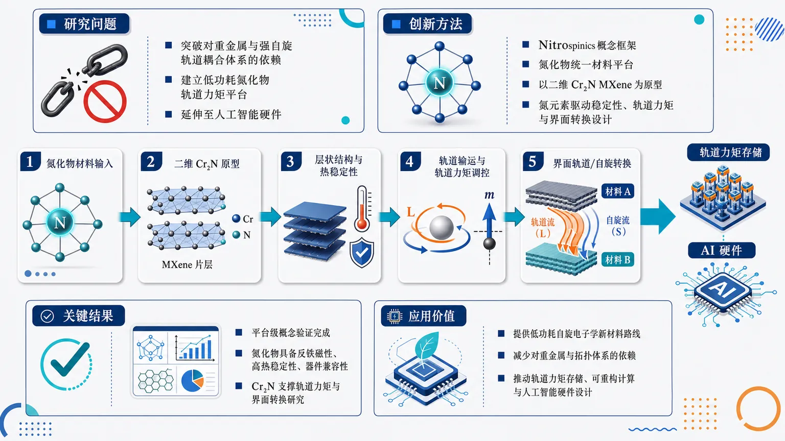
研究问题如何突破对重金属和强自旋轨道耦合体系的依赖，建立一种基于氮化物的低功耗轨道力矩材料平台，并把器件能力延伸到人工智能硬件？创新方法提出 Nitrospinics 概念框架，把氮化物作为统一材料平台；以二维 Cr2N MXene 为原型，将氮元素视为功能设计核心，联通结构稳定性、轨道力矩生成和界面轨道/自旋转换。工作流程以氮化物材料为起点，选取二维 Cr2N 原型；分析其层状结构与热稳定性；考察氮元素对轨道输运和轨道力矩的调控；再研究界面上的轨道/自旋转换；最终指向轨道力矩存储与 AI 硬件应用。关键结果论文未给出完整器件性能数值，但完成了平台级概念验证：氮化物被证明具有反铁磁性、高热稳定性和器件兼容性，Cr2N 被确立为可支撑轨道力矩与界面转换研究的原型体系。应用价值为低功耗自旋电子学提供新的材料路线，摆脱对重金属和拓扑体系的单一依赖，推动轨道力矩存储、可重构计算和人工智能硬件的材料设计。第一部分：核心概览
这篇工作提出 Nitrospinics 作为一个新的材料与器件框架，把氮化物从传统结构/磁性材料扩展为面向orbital-torque memory 与 人工智能硬件 的平台。核心贡献不在于单一器件性能记录，而在于把 Cr2N 这类二维氮化物 MXene 作为原型，系统串联结构稳定性、轨道力矩产生、界面轨道/自旋转换三条链路，并把氮化物的反铁磁性、高热稳定性、器件兼容性提升为下一代能效计算材料的候选逻辑。领域地位上，这是一种从“重金属/拓扑体系主导”的轨道自旋电子学路线，转向“氮化物化学设计”的概念性提案。
---
第二部分：结构化快速回顾
《Nitrospinics as a platform from orbital-torque memory to artificial intelligence》（None，）
- 背景：低功耗自旋电子学持续升温；轨道输运为电流诱导力矩提供了区别于 spin Hall effect 的新路径；同时，自旋电子器件已进入 人工智能计算 语境。
- 方法：提出 Nitrospinics 概念框架，以氮化物材料为核心；选取 Cr2N 这一二维氮化物 MXene 作为原型，讨论氮元素如何影响结构、轨道力矩与界面转换。
- 结果：氮化物被定位为兼具化学、磁性、结构多样性的材料族；其 antiferromagnetism、high thermal stability 和器件兼容性，使其可覆盖从记忆器件到 AI 硬件的应用链条。
- 讨论：与现有依赖重金属和强自旋轨道耦合拓扑体系的路线相比，氮化物提供了新的材料空间；关键科学问题集中在轨道/自旋转换机制、界面工程与材料可制造性。
- 局限：可见文本主要是概念提案与路线图，未给出完整器件实验数据、样本量、统计检验或性能标杆。
- 结论：氮化物可能成为连接orbital-torque spintronics 与 AI hardware 的统一平台，Cr2N 提供了可讨论的原型体系。
---
第三部分：逐章节冷凝解析
> 说明：当前可见内容仅包含 Abstract，未提供正文各章节标题。因此无法按完整原始章节逐节展开；以下按摘要中的逻辑单元进行严格拆解。
Abstract
Energy-efficient spintronics defines the problem space
核心点：研究目标锁定在能效型功能自旋电子学，这类方向之所以重要，是因为其核心价值在于以更低功耗实现信息写入、保持与处理。摘要以 *“The exploration of energy-efficient and functional spintronics has attracted considerable attention.”* 开场，直接把问题域定义为低能耗 + 功能集成。
具体细节：
- 主题不是一般磁存储，而是functional spintronics。
- 关注点不是单一效应，而是面向器件层面的“探索”与“应用扩展”。
原文引述：*“The exploration of energy-efficient and functional spintronics has attracted considerable attention.”*
---
Orbital transport expands the torque-generation paradigm
核心点：轨道输运被视为电流诱导力矩的新机制，突破了传统以spin Hall effect 为主的自旋输运范式。这里的学术转折是：力矩来源不再仅依赖自旋角动量流，而是引入orbital 通道。
具体细节：
- 明确对比对象是 conventional spin transport based on the spin Hall effect。
- 轨道输运被表述为 *“opened new pathways for current-induced torque generation”*，强调其不是边缘补充，而是新主线。
原文引述：*“Orbital transport has opened new pathways for current-induced torque generation beyond the conventional spin transport based on the spin Hall effect.”*
---
Spintronic devices already intersect with artificial intelligence
核心点：自旋电子器件不再局限于存储，而已进入 artificial intelligence computing 语境，说明器件功能从 memory 向 computing/AI 延展。这里的语义重点是：自旋器件具有进入类脑/存内计算的潜力。
具体细节：
- 目标应用不仅是存储，还包括 AI computing。
- 这意味着器件设计需兼顾非易失性、可重构性、低功耗等计算属性。
原文引述：*“In addition, artificial intelligence computing has been demonstrated using spintronic devices.”*
---
Existing materials are not considered sufficient
核心点：现有依赖heavy metals 与 topological systems with strong spin-orbit coupling 的材料路线被认为仍有提升空间，因此需要新的材料族来支撑下一阶段器件发展。
具体细节：
- 对比对象是两大主流体系：heavy metals 与 topological systems。
- 关键瓶颈指向“强自旋轨道耦合”的材料依赖性，暗示材料选择过窄。
原文引述：*“Further progress of these devices can be anticipated through the development of unique and functional materials beyond the existing heavy metals and topological systems with strong spin-orbit coupling.”*
---
Nitrides are positioned as an unusually versatile materials family
核心点：氮化物被赋予系统性优势，不只是“可用”，而是具有chemical, magnetic, and structural versatility。这一定位使氮化物从单一材料类别上升为平台候选。
具体细节：
- 兼具 antiferromagnetism、high thermal stability、compatibility with diverse device architectures。
- 这些性质分别对应：磁序可设计、热可靠性高、工艺/集成友好。
原文引述：*“The nitride materials exhibit unique chemical, magnetic, and structural versatility, including antiferromagnetism, high thermal stability, and compatibility with diverse device architectures.”*
---
Nitrospinics is introduced as a unifying framework
核心点：Nitrospinics 被定义为一个“conceptual and functional framework”，其目标是把氮化物从材料库转化为从轨道力矩存储到 AI 硬件的统一平台。
具体细节：
- 不是单个器件名，而是框架。
- 覆盖范围明确从 orbital-torque-based spintronic devices 到 artificial intelligence hardware。
原文引述：*“Here, we propose Nitrospinics as a conceptual and functional framework that exploits nitride materials for applications ranging from orbital-torque-based spintronic devices to artificial intelligence hardware.”*
---
Cr2N serves as the prototype system
核心点：原型体系选为 Cr2N，且被明确描述为two-dimensional nitride MXene with an atomic layered structure。这把抽象框架落到可讨论的具体材料上。
具体细节：
- Cr2N 是二维nitride MXene。
- 结构特征是 atomic layered structure，暗示其适合界面工程与低维电子态调控。
原文引述：*“Using Cr2N, a two-dimensional nitride MXene with an atomic layered structure, as a prototype system”*
---
Nitrogen is treated as an active design element
核心点：氮元素不只是化学组成，而是贡献于结构稳定性、轨道力矩生成、界面轨道与自旋转换的关键因素。这里的创新点在于把 nitrogen 从“配位原子”提升为“功能调控旋钮”。
具体细节：
- 三个作用链条被同时提出：
1) structural stability
2) orbital torque generation
3) interfacial orbital and spin conversion
- 说明该框架关注的是从材料本征到界面功能的全链路。
原文引述：*“we discuss how nitrogen contributes to the structural stability, the orbital torque generation, and the interfacial orbital and spin conversion.”*
---
The work ends with an agenda of challenges and opportunities
核心点：结尾不是封闭结论，而是路线图式收束：下一步关键在于厘清挑战与机遇，以推动氮化物成为下一代计算技术材料基础。
具体细节：
- 关键词是 key challenges and opportunities。
- 指向 next-generation computing technologies。
原文引述：*“We further outline key challenges and opportunities toward establishing nitride-based materials for next-generation computing technologies.”*
---
第四部分：深度理解与语言支持
1) 术语解析
Orbital transport
指轨道角动量的输运，而不是自旋角动量的输运。细微差别在于：
- spin transport 关注电子自旋流；
- orbital transport 关注电子轨道自由度携带的角动量流。
在轨道电子学中，轨道角动量可在界面或强 SOC 材料中转化为力矩，成为驱动磁化翻转的新通道。
Orbital torque
指由轨道流转化而来的对磁矩的力矩。与常见 spin-orbit torque 的区别在于驱动力的“前一级”不是自旋，而是轨道角动量。这个概念的价值在于把材料设计空间从“必须强 SOC”扩展到“能有效生成/转换轨道流”的体系。
Interfacial orbital and spin conversion
强调在界面发生的轨道角动量与自旋角动量之间的相互转换。这里的“interfacial”极关键，因为很多转换效应不在体相完成，而依赖界面反演对称性破缺、杂化与散射过程。
MXene
一种二维过渡金属碳/氮化物材料家族。这里的 Cr2N MXene 代表的是二维氮化物基底，兼具层状结构和可调表面化学，适合做器件集成与界面功能研究。
Functional spintronics
不是单纯追求磁存储，而是强调器件具有可计算、可重构、可模拟神经功能等额外功能。这个表达在 AI 硬件语境下通常暗含存内计算、类脑计算或概率计算的潜力。
---
2) 疑难查证：高年级博士生级别解释
为什么“氮化物”会被拿来挑战重金属体系？
重金属体系的优势在于强自旋轨道耦合，容易产生自旋霍尔效应和相关力矩；但代价是材料选择偏少、界面损耗和工艺适配性受限。
氮化物路线的意义在于：不把“强 SOC”当作唯一前提，而是通过化学稳定性、磁序可设计性、低维结构和界面工程来获得轨道力矩功能。这样一来，材料库更大，热稳定性通常更好，也更贴近实际器件制造需求。
为什么 Cr2N 这种二维 MXene 适合作为原型？
二维材料天然具有高比表面积、强界面可调性和层间耦合可控性。对轨道/自旋转换而言，界面往往是关键活性区，因此二维 MXene 的层状结构是天然优势。
Cr2N 还属于氮化物体系，能同时把磁性、稳定性、界面化学纳入同一框架讨论，这比单纯讨论金属薄膜更具材料设计感。
“从 memory 到 AI hardware” 的跨度意味着什么？
这意味着目标不再只是开关磁化状态，而是把器件的非易失性、可模拟性和并行性用在计算任务中。
若材料能支持连续可调的状态、低噪声、多级写入与高耐久性，就可能从“记忆器件”进一步变成“计算单元”。摘要中的表述本质上是在提出：氮化物平台不仅能存储信息，也可能承载计算。
---
第五部分：创新评估与关联
1) 创新性判断
相较于过去 2–5 年的轨道电子学与自旋电子学工作，这篇工作的新颖性主要在三点：
第一，材料路线从“重金属中心”转向“氮化物中心”
过去几年，轨道/自旋力矩研究大量依赖 Pt、W、Ta 等重金属，或拓扑材料、强 SOC 界面。这里把 nitride materials 提升为平台候选，直接扩展了材料化学空间。
新颖点不在“发现某个新效应”，而在“更换了主材料范式”。
第二，把氮元素设定为功能性调控变量
多数工作把氮化物视为稳定基底或结构材料；这里把 nitrogen 明确绑定到结构稳定、orbital torque generation、界面转换三重功能。
这意味着氮不再只是组分，而是设计轴。
第三，把轨道力矩研究与 AI 硬件语境打通
不少前期工作只停留在 memory / switching，而这里把目标上升到 artificial intelligence hardware。
这使材料路线具备更强的系统意义：不仅服务于存储器，还指向神经形态和类脑计算架构。
2) 解决了什么前人没解决的问题
严格说，这份文本更像概念框架提案而非已完成的实证突破，因此“解决”的更多是路线层面的空缺：
- 材料空缺：轨道力矩材料选择过度集中在少数高 SOC 体系。
- 功能空缺：从存储到 AI 硬件缺少统一材料叙事。
- 机制空缺：氮化物是否能同时支撑结构稳定与轨道/自旋转换，缺少系统整合视角。
3) 需要保留的判断
可见文本没有提供：
- 器件样本量 n
- 具体性能数值
- 统计显著性 P 值
- 对照实验
- 误差分析
因此，当前阶段的创新性判断应归类为概念创新与平台创新，而不是已被数据完全验证的性能创新。
---
如果需要，我可以继续把这篇工作整理成两种更实用的版本：
- 答辩式提纲（适合汇报）
- 论文精读表格（每个句子对应科学含义、术语、可质疑点）
-
07
📊 含图深析
📄 摘要：AdvSynGNN 针对结构噪声和非同配拓扑导致的图神经网络退化，结合多分辨率结构合成、对比学习目标和几何敏感初始化；再用 transformer 主干自适应调制异配关系，并通过自校正传播提高节点级表示学习在噪声图上的鲁棒性。
💡 亮点：AdvSynGNN 用对抗结构合成与自校正传播处理噪声和异配图。对材料图、反应网络等非理想科学图数据，鲁棒节点表示学习更可控。
📖 展开分析 + 配图
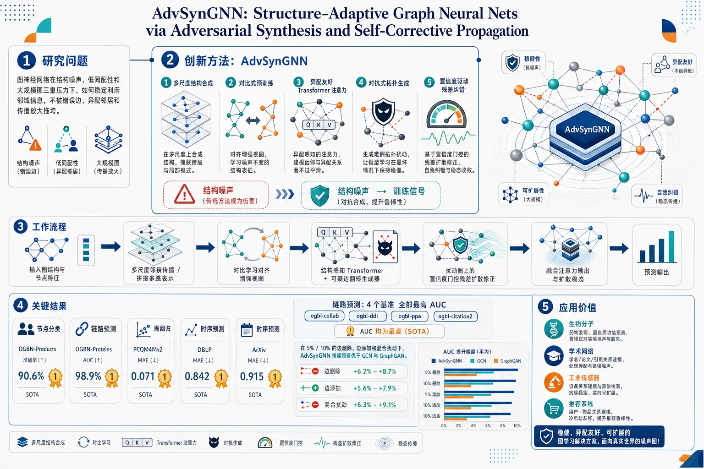
研究问题如何让图神经网络在结构噪声、低同配性和大规模图三重压力下，仍能稳定利用邻域信息，不被错误边、异配邻居和传播放大拖垮。创新方法提出 AdvSynGNN：把多尺度结构合成、对比式预训练、异配友好 Transformer 注意力、对抗式拓扑生成、置信度驱动残差纠错统一到一个端到端框架中。Aha 点在于：不是只做鲁棒防御，而是先“合成可能的扰动图”再“带置信度自我修正传播”，让结构噪声成为训练信号而非破坏因素。工作流程输入图结构与节点特征后，先做多尺度邻接传播，拼接不同跳数的结构表示；再用对比学习对齐增强视图，获得稳定初始表征；随后用结构感知 Transformer 建模异配邻居，并由生成器预测可疑边翻转概率，构造对抗扰动拓扑；接着在扰动图上进行置信度门控的残差扩散修正；最后融合注意力输出与扩散稳态结果，得到预测。关键结果在节点分类、链路预测、图回归和时序预测上均取得最优或显著领先。OGBN-Products、OGBN-Proteins、PCQM4Mv2、DBLP、ArXiv 上均刷新或领先基线；链路预测四个基准 AUC 全部最高；结构扰动下性能退化最小。尤其在 OGBN-Proteins 上，对 5%/10% 边删边加和混合扰动都明显更稳，优于 GCN、GraphGAN 等方法。应用价值适用于真实世界中边关系不可靠、类别混杂、图规模巨大的场景，如生物分子、学术网络、工业传感器和推荐系统。研究意义在于把鲁棒性、异配建模和可扩展推理统一起来，为噪声图上的高精度预测提供可落地框架。第一部分：核心概览
这篇工作提出 AdvSynGNN，把多尺度结构合成、对比式预训练、异配友好的 Transformer 注意力、对抗式拓扑生成、置信度驱动的残差修正整合为一个端到端框架，目标是同时解决结构噪声、低同配性和大图可扩展性三类痛点。核心贡献不在单一算子，而在把训练时鲁棒性与推理时自适应传播统一起来，并给出一定的收缩性/稳定性分析。实验上，在节点分类、链路预测、回归和扰动鲁棒性任务上都取得最优或显著优势，尤其在 OGBN-Proteins、OGBN-Products、PCQM4Mv2 和多组链路预测基准上表现突出。
---
第二部分：结构化快速回顾
《AdvSynGNN: Structure-Adaptive Graph Neural Nets via Adversarial Synthesis and Self-Corrective Propagation》（None，）
背景：图神经网络在结构噪声与非同配拓扑下性能衰减明显；Transformer 类模型在低同配图上尤其脆弱，且大图上代价高。
方法：以多尺度结构合成、对比表示对齐、置信度加权残差传播、异配自适应注意力和对抗式拓扑生成构成统一架构。
结果：在 5 个节点/图任务、4 个链路预测网络、3 个预测基准上取得最优，OGBN-Proteins 扰动下退化最小。
讨论：鲁棒性来自训练期对抗扰动、节点级置信度门控和结构偏置注意力的协同，而不是单纯加深模型。
局限：模块多、推理链路长；稳定性依赖谱范数与置信度约束，附录中的实现与证明细节未完整展开。
结论：结构自适应图学习可以通过生成式扰动 + 自纠错传播 + 异配注意力实现精度、鲁棒性与效率的统一。
---
第三部分：逐章节冷凝解析
Abstract
Structural brittleness is the central failure mode
- 核心问题被定义为结构噪声与非同配拓扑导致的性能崩溃：*"Graph neural networks frequently encounter significant performance degradation when confronted with structural noise or non-homophilous topologies."*
- 这里的“systemic vulnerabilities”不是偶发误差，而是图学习在真实数据中普遍存在的结构性失效。
The architecture is explicitly multi-module and structure-adaptive
- 框架由multi-resolution structural synthesis 和 contrastive objectives 提供几何敏感初始化：*"multi-resolution structural synthesis alongside contrastive objectives to establish geometry-sensitive initializations."*
- 中心编码器是 transformer backbone，通过学习到的拓扑信号调节注意力：*"a transformer backbone that adaptively accommodates heterophily by modulating attention mechanisms through learned topological signals."*
Adversarial propagation is built into training
- 不是事后防御，而是训练时让生成器与判别器共同作用：*"an integrated adversarial propagation engine, where a generative component identifies potential connectivity alterations while a discriminator enforces global coherence."*
- 这使结构扰动成为regularizer，而不是噪声源。
Residual correction is node-specific and confidence-guided
- 标签修正依赖per-node confidence metrics：*"label refinement is achieved through a residual correction scheme guided by per-node confidence metrics"*。
- 目标是让迭代稳定性可控，而不是统一平滑所有节点。
The claimed gains span accuracy and efficiency
- 总结性判断是：*"effectively optimizes predictive accuracy across diverse graph distributions while maintaining computational efficiency."*
- 这直接把贡献定位为精度—鲁棒性—效率三者平衡。
---
1 Introduction
Three bottlenecks define the problem
- 引言明确列出三点：低同配图上的注意力脆弱、结构噪声脆弱、百万级图上的内存/运行时瓶颈。原文直接写出：*"three concrete and verifiable pain points"*。
- 这三点分别对应建模偏差、鲁棒性缺失和系统可扩展性。
Attention fails when homophily assumptions break
- 低同配图上，注意力机制“implicitly assume locality”，会错配权重并伤害精度：*"attention mechanisms that implicitly assume locality misallocate weight and harm downstream accuracy."*
- 这指出问题不只是聚合深度，而是局部同质性假设失真。
Robustness is demanded during training, not after training
- 结构扰动通常只在评估时测量，缺少训练期约束：*"robustness is typically measured post hoc rather than enforced during training."*
- AdvSynGNN 把结构扰动显式纳入训练流程，属于training-time regularization。
The proposed remedy is a three-part system
- 三个模块分别解决三类痛点：
1) multi-scale structural encoding + contrastive pretraining，提供 topology-stable 表示；
2) structure-aware transformer，注入结构偏置与 feature-difference cues；
3) adversarial propagation module，把结构扰动做成 regularizer。
- 直接对应原句：*"A multi-scale structural encoding stage... A structure-aware transformer... An adversarial propagation module..."*
Confidence-gated residual correction is the stabilizer
- 节点级confidence estimator 控制 residual correction，并在谱约束下保证 contraction：*"coupled by a per-node confidence estimator that gates residual correction and ensures contraction under mild spectral controls."*
- 这一点把“自纠错”从经验技巧提升到可分析的稳定机制。
Contributions are fourfold
- 四项贡献分别是：
- end-to-end architecture；
- sufficient contractivity conditions；
- comprehensive empirical evaluations；
- implementation notes and hyperparameter recipes。
- 原文对应：*"We introduce... We provide... We present... Finally, we release..."*
---
2 Related Work
#### 2.1 Architectural development for graph representation
Graph learning moved from spectral to attention-based and hybrid designs
- 发展轨迹从spectral filters、message passing 到 attention-based variants。原句：*"Graph representation learning evolved from spectral and spatial formulations to architectures capturing multi-scale and long-range interactions."*
- 重点不在单层局部卷积，而在multi-scale / long-range。
Simplified and decoupled baselines matter on heterophily
- SIGN、解耦流水线、结构编码（degree、feature differences）改善了异配图鲁棒性：*"decoupled pipelines and structural encodings (degree, feature differences) improved robustness."*
- 说明 heterophily 场景下，结构先验比更深堆叠更关键。
#### 2.2 Semi-supervised propagation, contrastive pretraining and theory
Propagation and residual correction remain foundational
- 传播式方法与残差修正依然是核心：*"Propagation-based and residual-correction methods remain central for semi-supervised graph learning."*
- 这为 3.5 节的adaptive residual correction 提供理论传统。
Contrastive pretraining targets transfer under distribution shift
- 对比与 diffusion-based pretraining 主要提升distribution shift 下的可迁移性：*"Contrastive and diffusion-based pretraining further enhance transferability under distribution shifts."*
- 这与 3.4 节的 ℒₛₛₗ 对应。
Theory focuses on convergence and noise amplification
- 相关理论关注的是convergence regimes 和 noise amplification：*"Theoretical analyses clarify convergence regimes and noise amplification in propagation."*
- 这一脉络直接映射到该文的收缩条件分析。
#### 2.3 Robustness to structural noise and adversarial augmentation
Robustness work splits into denoising and augmentation
- 这一领域包含denoising、adversarial edge modification、generator-based augmentation：*"Robustness to noisy or manipulated graphs has driven strategies such as denoising, adversarial edge modification, and generator-based augmentation during training."*
- 该框架更偏向augmentation during training 而非单纯 pruning。
Invariant features and diffusion-based augmentations are complementary
- 不变特征约束与结构增强都用于 OOD 泛化：*"enforce invariant features for out-of-distribution generalization"*。
- 与此对应，AdvSynGNN 既做 adversarial synthesis，也做 confidence calibration。
#### 2.4 Transformer-style architectures and structural encodings
Global receptive fields are not enough
- Graph transformer 的优势是 global receptive field，但仍需要结构编码：*"Graph transformers provide global receptive fields and flexible attention beyond local neighborhoods."*
- 这表明纯注意力并不自动解决图结构问题。
Structural priors and heterophily-aware bias motivate the hybrid design
- 原句：*"Evidence that plain transformers can be strong learners with structural priors motivates hybrids combining attention and propagation for expressivity and stability."*
- 这正是该文把 attention + propagation 绑定的依据。
#### 2.5 Scalability, efficiency and pretraining at scale
Scalability is treated as a systems problem
- 大图训练依赖 mixed precision、checkpointing、randomized sparse computations 等系统手段。原句：*"Scaling to large graphs relies on algorithmic and system-level optimizations."*
- 因此“效率”不是附属指标，而是方法设计目标之一。
#### 2.6 Domain applications, evaluation and relation to prior work
Benchmarks expose structural regime differences
- 标准基准如 OGB 能揭示不同结构 regime 的性能差异：*"Standardized benchmarks like OGB reveal performance variation across structural regimes."*
- 这也是使用 OGBN-ArXiv、OGBN-Products、OGBN-Proteins 的原因。
#### 2.7 Positioning and relation to prior work
The novelty is integration, not isolated invention
- 关键句：*"Unlike prior work that treats these elements separately, we unify them in a pipeline that adaptively modulates propagation and enforces consistency under topology perturbations."*
- 新意在统一多尺度编码、对比对齐、对抗增强、异配注意力与自纠错传播，而不是某一单个组件。
---
3 Methodology
#### 3.1 Problem formalization and objectives
The task is robust node-level prediction on noisy, heterophilous graphs
- 设定为属性图 (G=(V,E))，(N) 个节点，特征 (Xin RN× d_f)，邻接 (Ain0,1N× N)。
- 明确把 (A) 视为“potentially perturbed instantiation of the underlying latent manifold”。
Normalized adjacency is the propagation proxy
- 使用 (widetildeA=D⁻¹/²(A+I)D⁻¹/²)（式1）。
- 这说明后续传播都在degree-normalized 空间中进行。
The objective targets the posterior under low homophily
- 主目标是学习 (F:X,G→widehatY)，恢复 (P(Y|G,X))。
- 同时定义同配率 (h)（式3）并强调在低 (h) 下需要在 smoothing 与 filtering 之间自适应切换：*"necessitating a mechanism that can adaptively transition between smoothing and filtering operations."*
#### 3.2 Integrated graph-learning architecture
Four coupled modules form the backbone
- 四个模块分别是：multi-resolution feature synthesis, contrastive representation alignment, confidence-driven residual correction, topology-adaptive transformation。
- 该设计不是串联堆叠，而是 *"tightly coupled modules"*。
#### 3.3 Feature synthesis pipeline
Edge features are aggregated into node descriptors
- 边到点聚合公式（式5）把 (eᵢⱼ) 变成 (vᵢ)，再经 GeLU 和 masking 变成 (xᵢ)（式6）。
- 这一步把可选边特征纳入表示学习，而不是只依赖节点属性。
Multi-scale embeddings are built by repeated propagation
- (X⁽k⁾=widetildeAkX)（式7），再拼接成 (XMS=[X⁽⁰⁾|ḑots|X⁽K⁾])（式8）。
- 这里的 K 是最大传播深度，显式保留不同跳数信息，避免单一平滑尺度。
#### 3.4 Contrastive representation alignment
A normalized contrastive loss stabilizes embeddings
- 损失（式9）是标准 InfoNCE 形式：正对是同一节点的随机增强，负对是其他节点。
- 核心作用是让表示对拓扑随机扰动保持稳定：*"encourages stability across randomized augmentations."*
Temperature controls distribution sharpness
- (τ>0) 控制 softmax 锐度；正文还说明使用“*a modest number of non-correlated negatives per anchor*”。
- 这意味着优化强调稳定而非海量负样本堆积。
#### 3.5 Adaptive residual correction
Residuals are propagated rather than labels directly
- 初始残差 (R⁽⁰⁾=Z⁽⁰⁾-Yₒbₛ)（式10）。
- 传播规则（式11）对每个节点使用置信度 (cᵢ) 控制：
[
Rᵢ⁽t⁺¹⁾=(1-cᵢ₎Rᵢ⁽⁰⁾+cᵢ₍widetildeAR⁽t⁾)ᵢ
]
- 这是一种node-wise self-correction，不是统一迭代平滑。
Confidence is learned from self and neighborhood context
- (cᵢ₌σ(w_c^→p[xᵢ|frac1|mathcal Nᵢ|sumⱼᵢₙₘₐₜₕcₐₗ N_ᵢxⱼ]+b_c))（式12）。
- 置信度同时看节点自身与邻域均值，适合判别“可信传播”与“噪声传播”。
Magnitude is renormalized against labeled nodes
- (sₙₒᵣₘ=frac1|mathcal L|sumⱼᵢₙₘₐₜₕcₐₗ L|Rⱼ⁽⁰⁾|₁)（式13），再把 (Rᵢ⁽T⁾) 按 (ell₁) 归一后回注入 (Zᵢ⁽r⁾)。
- 作用是保方向、控尺度：*"This normalization preserves directionality of residual corrections while aligning magnitudes to a stable labeled-set reference."*
Spectral issues are explicitly acknowledged
- 原文指出：*"In practice |widetildeA|₂>1 frequently arises on heterophilous graphs; we enforce κ<1 via spectral-clipping and confidence-ceiling."*
- 这表明稳定性并非默认成立，而是靠spectral clipping 与 confidence ceiling 保证。
#### 3.6 Heterophily-adaptive attention
Attention includes an explicit structural bias
- 标准 Q/K 之外，还加了 MLP 结构偏置：
[
ψᵢⱼ⁽k⁾=fracmathbf qᵢ⁽k⁾→pmathbf kⱼ⁽k⁾sqrtdₕ+mathbf w^→p MLP([mathbf xᵢ|mathbf xⱼ])
]
- 目标是让注意力区分“compatible”与“noisy neighbors”。
Multi-head aggregation remains local but structure-aware
- (ømegaᵢⱼ⁽k⁾) 在邻域内 softmax，最后拼接各头输出（式16-17）。
- 这是典型 graph transformer 形式，但通过结构偏置减少异配图上的误聚焦。
#### 3.7 Adversarial propagation with generative networks
The generator predicts edge-flip probabilities
- (Pᵢⱼ=σ(MLP([mathbf xᵢ|mathbf xⱼ|mathbf eᵢⱼ])))（式18）。
- 这不是生成整张图，而是对候选边进行flip probability 估计。
The discriminator is a degree-normalized GNN
- 判别器采用 degree-normalized message passing（式19），并用 permutation-invariant readout 给出真实性评分。
- 这把生成式结构扰动限制在“合理拓扑”范围内。
Soft adjacency is adversarially perturbed
- 软邻接为
[
widetilde A'ᵢⱼ=Aᵢⱼ(1-Pᵢⱼ)+(1-Aᵢⱼ)Pᵢⱼ
]
（式20）。
- 这意味着原边被删、非边被加，统一用概率方式表达。
Diffusion uses the perturbed graph
- (Z⁽t⁺¹⁾=clip[₀,₁]((1-γ)Z⁽r⁾+γwidetilde A'Z⁽t⁾))（式21）。
- (γin[0,1]) 控制扩散强度，迭代至 steady-state (Z⁽ⁱⁿfty⁾)。
- 这是robust diffusion，并明确在训练时用对抗后的结构替换原 (widetilde A)。
Wasserstein training is used for stability
- 训练采用 Wasserstein objective with gradient penalty，避免对抗优化不稳定。
- 这是生成器/判别器部分的关键工程约束。
#### 3.8 Prediction fusion and ensemble
Two prediction streams are fused
- 最终融合为 (widehat Y=h̊oḑot σ(øverline Y)+(1-h̊o)Z⁽ⁱⁿfty⁾)（式22）。
- (øverline Y) 来自结构感知注意力，(Z⁽ⁱⁿfty⁾) 来自扩散稳态。
An ensemble over complementary predictors is allowed
- 最终输出还可写成三模型加权：(Yfᵢₙₐₗ=sumₖ₌₁³ κₖmathcal Fₖ₍X,widetilde A'))（式23）。
- 这说明系统兼容lightweight ensemble，不是单一路径输出。
#### 3.9 Temporal dynamic adaptation
Temporal snapshots modulate confidence and attention
- 对动态图，置信度扩展为 (cᵢ⁽τ⁾)，把时间差 (Δτᵢ) 纳入输入（式24）。
- 注意力 logits 也加上时间核项（式25），用 (g_θ(|τᵢ₋τⱼ|)) 表示时间衰减。
- 这把方法从静态图扩展到evolving graphs。
---
4 Experimental Evaluation
#### 4.1 Experimental framework
Benchmarks span scale and homophily
- 数据集包括：OGBN-ArXiv（169K nodes, homophily 0.65）、OGBN-Products（2.4M nodes）、OGBN-Proteins（132K nodes, multi-label）、DBLP（约 (10⁵)–(10⁶) edges）、PCQM4Mv2（millions of molecular graphs）。
- 这些数据覆盖homophilous 与 heterophilous 场景。
Baselines are broad and fair
- 比较对象包括 GraphGAN, GCN, GraphGPS/Graphormer, 以及若干 hybrid GAN-GNN 变体。
- 原文强调：*"All methods use identical splits and comparable hyperparameter budgets for fairness."*
Evaluation protocol is repeated seeds
- 多处实验使用 five random seeds，结果报告为 mean ± std。
- 这在表 2、表 3、表 4 中都明确给出。
#### 4.1.1 Forecasting datasets
Three time-series benchmarks are used
- ECG、Traffic、Motor 分别代表生理、交通与工业传感器序列。
- 这些用于 GAN-based comparison 的预测任务，而不是节点分类。
#### 4.2 Quantitative assessment
##### 4.2.1 Forecasting (Mean Absolute Error)
AdvSynGNN achieves the lowest MAE across all lengths
- 原句：*"AdvSynGNN consistently achieves the lowest MAE across lengths"*。
- 具体结果如下：
- ECG：16/64/128/256 长度分别为 0.055 / 0.044 / 0.042 / 0.040。
- Traffic：0.025 / 0.014 / 0.013 / 0.003。
- Motor：0.148 / 0.118 / 0.124 / 0.122。
- 对比中，较强基线如 GAT-GAN、TimeGAN、SigCWGAN、RCGAN、GMMN 均明显更高。
The gain is especially large on Traffic
- 在 Traffic 64/128/256 长度上，AdvSynGNN 分别达到 0.014、0.013、0.003，远低于其他方法。
- 这里体现的不是小幅增益，而是数量级差距式改进。
##### 4.2.2 Node-level classification and graph-level regression
AdvSynGNN dominates all five main tasks
- 结果表 2 的关键数值：
- ArXiv：75.48 ± 0.15
- Products：89.31 ± 0.13
- Proteins：86.40 ± 0.18
- DBLP：94.86 ± 0.12
- PCQM4Mv2 MAE：0.108 ± 0.002
- 这些都是表内最优值。
The strongest gains occur on heterophilous or large-scale graphs
- 相比最强基线：
- ArXiv：高于 SGFormer 72.63 ± 0.17，提升约 2.85 个点；
- Products：高于 SGFormer 84.75 ± 0.14，提升约 4.56 个点；
- Proteins：高于 SGFormer 79.53 ± 0.20，提升约 6.87 个点；
- DBLP：高于 Graphormer 92.60 ± 0.17，提升约 2.26 个点；
- PCQM4Mv2：低于 SGFormer 0.129 ± 0.003，MAE 降低 0.021。
- 原文总结为：*"showing that adversarial confidence propagation mitigates label noise and spurious edges."*
##### 4.2.3 Link prediction
AdvSynGNN reaches the highest AUC on all four graphs
- 表 3 的结果：
- arXiv-AstroPh：98.8 ± 0.09
- arXiv-GrQc：98.1 ± 0.11
- Wikipedia：99.2 ± 0.07
- Amazon2M：90.86 ± 0.25
- 原句：*"AdvSynGNN achieves the highest AUC on all tasks."*
The margin is especially meaningful on Amazon2M
- 最强基线 Proformer 为 89.48 ± 0.30，AdvSynGNN 提升到 90.86 ± 0.25。
- 这说明对抗扰动并未破坏结构恢复能力，反而增强了 link recovery。
#### 4.3 Unified component and robustness ablation
All three core modules contribute, and their interaction matters
- 表 4 报告 5 个随机种子下的消融，且在 OGBN-Proteins 5% hybrid perturbation 上报告 ROC-AUC drop。
- 单模块删除都会降性能：
- w/o GAN-only：ArXiv 73.65，Proteins 84.25，WikiCS 78.30，(Δ AUC=-2.07)；
- w/o confidence-only：74.20 / 84.91 / 78.95，(Δ AUC=-1.26)；
- w/o multi-scale + bias：73.65 / 84.12 / 78.40，(Δ AUC=-1.83)。
The strongest degradation comes from removing GAN and confidence together
- w/o GAN + w/o confidence：72.11 / 82.93 / 76.95，(Δ AUC=-5.90)。
- 这比单独移除任一模块的损失都大，说明两者存在明显synergy。
Shapley values identify relative importance
- 在 Proteins 上，Shapley 近似边际贡献分别显示：
- GAN-only：24.7%
- confidence-only：15.1%
- multi-scale + bias：22.0%
- GAN + confidence：57.8%（双模块协同极强）
- 这里最重要的信息不是哪个模块“最好”，而是组合贡献远大于单独贡献。
#### 4.4 Robustness analysis under structural perturbations
Structural perturbations are explicitly simulated
- 在 OGBN-Proteins 上做了：
- 5%/10% edge deletion，
- 5%/10% edge addition，
- 5% hybrid perturbation。
- 以相对 AUC 变化衡量：
[
Δ AUC=fracAUCₚₑᵣₜᵤᵣbₑd-AUCcₗₑₐₙAUCcₗₑₐₙ× 100%
]
AdvSynGNN degrades least under all perturbations
- 表 5 中 AdvSynGNN 的退化为：
- 5% Del：-0.82
- 10% Del：-1.93
- 5% Add：-1.14
- Hybrid：-2.05
- 对比之下，GCN 在 Hybrid 下为 -7.95，GraphGAN 为 -11.03。
- 原句：*"AdvSynGNN exhibits markedly smaller degradation than competing methods"*。
#### 4.5 Temporal dynamics analysis
Temporal continual learning is evaluated with monthly snapshots
- 使用 TGB Wikipedia revision history，按月快照做增量学习。
- 评估两个指标：final accuracy 和 catastrophic forgetting。
Knowledge retention is formalized
- 定义知识保持度 (mathcal K)（式27），把最终模型在各历史快照上的准确率差异平均化。
- 原文意图很清楚：衡量模型是否在新时间步上遗忘旧知识。
- 当前供给内容在“*where (mathcal Aₖ) denotes the*”处截断，因此具体实现细节与结果数值未完整出现。
---
第四部分：深度理解与语言支持
1. 关键术语解析
Heterophily
- 指相连节点往往不同类而非同类。
- 与 homophily 相对。图神经网络常默认邻居同类，因此在 heterophily 图上容易把“邻居信息”当成噪声或错误地过度平滑。
Contractivity / contraction
- 指迭代映射把误差越变越小。
- 在残差传播里，若收缩条件成立，反复迭代不会发散；若不成立，可能越传越偏。
- 文中把 (κ<1) 与谱裁剪、置信度上限联系起来，就是在保证“越修正越稳定”。
Self-corrective propagation
- 不是普通的 label propagation。
- 这里传播的是residual，并且每个节点有自己的 confidence 决定是“更多采信邻居”还是“保留原始估计”。
- 语义上比“纠错传播”更强，因为它包含逐节点可调节。
Adversarial synthesis
- 不是简单数据增强，而是通过生成器主动提出可能的edge flips。
- 目的不是制造真实攻击，而是把“可能的结构扰动”纳入训练分布，从而提升鲁棒性与泛化。
Steady-state
- 在式21里指迭代扩散收敛后的 (Z⁽ⁱⁿfty⁾)。
- 含义接近“扩散平衡点”，不是最终某一次前向传播的瞬时输出。
2. 疑难查证：几个复杂概念的直观解释
为什么 heterophilous graph 上 (|widetilde A|₂ > 1) 会麻烦
- 归一化邻接若在数值上偏“强扩散”，反复乘上去就可能把残差放大而不是缩小。
- 在低同配图里，邻居往往携带冲突信息，传播一旦过强，就会把错误沿图扩散。
- 因此引入 spectral clipping 和 confidence ceiling，本质是在控制传播算子的“放大倍率”。
为什么 residual 传播比直接 label 传播更稳
- 直接传播标签等于强行把邻居意见写进预测。
- 传播残差则只传播“当前预测与观测标签的偏差”，更像纠偏而非重写。
- 再用 (cᵢ) 控制，等于告诉系统：某些点更该听邻居，某些点更该保守。
为什么 attention 还要加结构偏置
- 纯 Q/K attention 更擅长处理 token 序列，不一定理解图上的噪声边、异配边。
- 加入 (MLP([mathbf xᵢ|mathbf xⱼ])) 以后，注意力不仅看相似度，也看两点特征组合的“结构可解释性”。
- 这就是“结构自适应”的关键，不是简单把 Transformer 挪到图上。
对抗生成器和判别器为什么都放进图学习
- 生成器负责提出“可能错的边”，判别器负责约束这些修改不能破坏全局结构。
- 二者共同作用，训练过程中模型会见到更多“合理但扰动过”的图。
- 最终学到的表示不会过分依赖某一条边或某个局部邻域。
---
第五部分：创新评估与关联
1. 创新性判断
新颖性不在单点，而在系统性整合
- 过去 2–5 年相关工作中，常见路线是分开做：
- 只做 heterophily-aware attention，
- 只做 contrastive pretraining，
- 只做 adversarial augmentation，
- 只做 residual propagation。
- 这里的变化是把这些机制放进同一个端到端系统，并让它们在训练与推理两阶段共同生效。原文最直接的定位是：*"Unlike prior work that treats these elements separately, we unify them in a pipeline..."*
解决了前人没同时解决的三个问题
- 低同配图上的注意力失配：通过结构偏置 + 异配自适应 transformer 处理。
- 结构噪声下的鲁棒性不足：通过 adversarial synthesis 把扰动变成训练信号。
- 大图上的稳定推理：通过 residual correction、confidence gating 和 diffusion steady-state 提供可控传播。
真正的新点是“训练期鲁棒性 + 节点级自纠错”
- 许多鲁棒图学习工作强调检测、剪枝或后处理；这里把鲁棒性嵌入生成式扰动训练与迭代纠错传播。
- 这使鲁棒性不是“补丁”，而是编码进学习动力学。
与近年 Graph Transformer 相关工作的差异
- Graphormer、GraphGPS、SGFormer 等强调全局建模与结构编码，但通常没有把对抗结构合成和置信度驱动 residual correction绑定。
- AdvSynGNN 的差异在于：不是只让 Transformer “更懂图”，而是让整个预测链条“能自我纠错、能抵御扰动、还能在异配场景下自适应”。
与近年 adversarial graph learning 的差异
- 过去对抗图学习多聚焦防御或增强某一任务。
- 这里的对抗模块服务于更大的系统：既影响 attention，也影响 diffusion，也影响 residual propagation。
- 这种跨模块共享同一 perturbed adjacency 的设计，使对抗信号具有更高的系统穿透力。
一句话判断
- 该工作的核心创新是把对抗式结构生成、异配图注意力、多尺度对比初始化和置信度控制的自纠错传播整合成一个可分析、可扩展、对噪声鲁棒的图学习框架，而不是提出单个孤立算子。
如果需要，可以继续把这篇论文整理成：
- 公式级推导笔记，
- 与 Graphormer / SGFormer / GCN 的逐项对照表，
- 可复现实验清单。
-
08
📊 含图深析
📄 摘要：针对 Zn-咪唑酯骨架 ZIF 的多晶型与类沸石拓扑，系统比较机器学习分类算法，用计算模拟数据识别温度、压力和合成条件调控下的相态与相变特征；目标是从微观结构描述符出发区分不同多晶型，评估算法在复杂金属有机框架相空间中的稳健性。
💡 亮点：以 Zn-咪唑酯 ZIF 多晶型为对象，比较多种分类器识别拓扑与相变状态。该工作为 MOF 多相结构自动标注和模拟轨迹判相提供基准。
📖 展开分析 + 配图
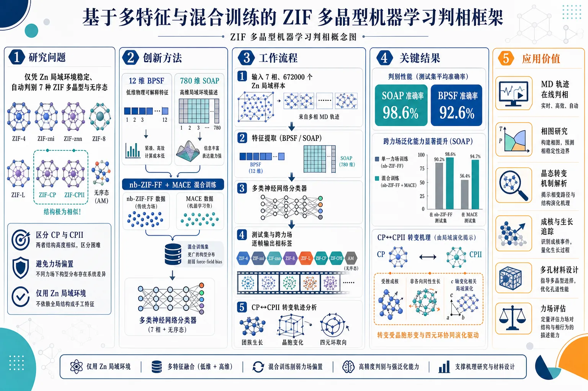
研究问题如何仅凭 Zn 中心局域环境，在 7 种 ZIF 多晶型与无序态中稳定、自动判别相态，尤其区分结构极其相近的 CP 与 CPII，并避免不同力场带来的偏置。创新方法提出两套并行的局域相分类方案：低维 12 维 BPSF 与高维 780 维 SOAP，对 Zn 环境做机器学习编码；再将 nb-ZIF-FF 与 MACE 两种力场数据混合训练，用更广的构型分布削弱 force-field bias，并把分类结果反推到相变机制。工作流程输入 7 相、672000 个 Zn 局域样本，由 nb-ZIF-FF 和 MACE 轨迹生成；提取 BPSF 或 SOAP 特征；训练多类神经网络分类器；在测试集和跨力场数据上逐帧输出相标签；进一步用于 CP↔CPII 转变轨迹，统计团簇生长、晶胞变化与四元环取向。关键结果SOAP 分类准确率达 98.6%，BPSF 达 92.6%；混合两种力场训练后跨力场泛化显著增强，单力场外测精度明显下降但混合训练后恢复到高水平；成功识别 CP↔CPII 转变中的受挫成核、非各向同性生长，以及与 c 轴变化相关的局域结构演化。应用价值为 ZIF 多晶型提供可迁移、可解释的原子级相识别工具，可直接用于 MD 轨迹在线判相、相图研究、晶态转变机制解析、成核与生长追踪，以及改进多孔材料设计和力场评估。第一部分：核心概览
这篇工作把 ZIF 多晶型的局域相分类做成了一个系统性基准：同时比较 BPSF 与 SOAP 两类描述符、两种力场数据源，并把模型真正用于 CP→CPII 这类极难区分的晶态转变。核心贡献在于证明：低维描述符已能高精度分类，而高维 SOAP 在准确率与可迁移性上更优；混合不同力场训练可显著削弱 force-field bias。更重要的是，分类器不只做识别，还能反推出相变的各向异性生长与四元环取向机制。
---
第二部分：结构化快速回顾
《Systematic Study of Machine Learning Classification Algorithms of Zeolitic Imidazolate Framework Polymorphs》（None，）
背景：ZIF 具有强多晶型性，尤其相近相之间的局域结构差别极小，传统几何规则难以在 MD 中逐帧、逐原子识别相态。
方法：构建 7 相、672000 个 Zn 局域环境的数据集，分别用 nb-ZIF-FF 与 MACE 生成；训练基于 BPSF(12维) 与 SOAP(780维) 的多类神经网络分类器。
结果：测试准确率分别达到 98.6%（SOAP）和 92.6%（BPSF）；混合两种力场训练后，跨力场泛化明显增强。
讨论：SOAP 更能捕捉化学上有意义的局域结构，BPSF 更偏密度特征；两类分类器都能识别 CP↔CPII 过程并揭示非各向同性生长。
局限：训练主要基于稳定区构型，过渡态/亚稳态覆盖不足；BPSF 忽略配体信息，对密度波动更敏感。
结论：局域机器学习分类器可在复杂 ZIF 多晶型中实现高精度、可迁移、可解释的相识别，并可用于机制解析。
---
第三部分：逐章节冷凝解析
1 Introduction
ZIF 多晶型问题构成局域相识别的核心挑战
MOF 的弱相互作用和高内部自由度，使其比传统固体更容易出现 flexibility、framework dynamics、disorder 与 polymorphism。ZIF 尤其典型，已知存在“dozens of reported Zn(imidazole)2 phases”，并且还能延伸到液体、玻璃、凝胶与复合无序态。关键难点不在于“有没有相”，而在于“相之间差得极小”。原文直接指出：*"differences between structures are subtle"*，*"simple geometrical criteria based on intuition are largely insufficient."*
ZIF-4 与相关相图仍未被彻底解决
ZIF-4 的压力–温度相图尚不完整，已有相图并未覆盖所有原始报道的 ZIF 多晶型，也未必代表热力学稳定性，因为“most stable phases are the dense ones, and porous phases occur due to kinetic considerations”。高压相的结构仍有未解之处，且不少相“have a very narrow thermodynamic stability range”。这意味着相识别不仅是分类问题，也是解决动力学与热力学分歧的工具。
局域、时间分辨的相分类需求明确
分子动力学轨迹包含海量数据，必须靠自动化、无先验方法提取机制。最关键的目标是逐时刻判断“a specific atomic environment at a given time is closest to a specific phase”。这种 on-the-fly、local 分类可把相变研究推进到原子尺度。原文强调：*"Being able to determine, during a molecular dynamics simulation..."* 直接对应机制解析需求。
研究在前人基础上的三项扩展
前人已用 PTM 等几何方法处理无定形硅，也有基于 ZIF 数据库的神经网络分类器。这里的扩展非常明确：
1) 从室温/常压相扩展到 7 个晶态与非晶态；
2) 同时比较 BPSF 与 SOAP 两类描述符，评估“computational efficiency and predictive accuracy”；
3) 引入 两种力场 训练数据，测试是否能缓解力场偏置并提升泛化。
CP/CPII 转变被设为更苛刻的机制验证场景
相比晶–非晶或晶–液转变，ZIF-4-cp / ZIF-4-cp-II 只是极细微局域差别下的晶态–晶态转变，难度更高。其价值在于可检验分类器能否识别极弱结构信号，并进一步揭示“relative orientation in the rings”这类微观机制。
---
2 Systems & Methods
#### 2.1 ZIF-4 polymorphs and their classification
七种相态覆盖晶态与无序态的完整谱系
研究对象是 Zn(Im)2 的 7 个多晶型：ZIF-4、ZIF-4-cp、ZIF-4-cp-II、ZIF-zni、ZIF-hPT-II、glass、liquid。其中 5 个为晶态、2 个为无序态。三种框架共享 cag topology：ZIF-4 为开孔相，ZIF-4-cp 与 ZIF-4-cp-II 为闭孔相；ZIF-zni 为 zni 拓扑，ZIF-hPT-II 为 dia 拓扑。原文原句：*"We focused on seven distinct polymorphs with formula Zn(Im)2"*，*"These structures include five crystalline phases and two disordered phases."*
分类粒度设定在 Zn-centered 局域环境
所有分类都围绕 Zn-centered environment 展开。每个结构会被拆成若干 Zn 局域样本，最后既可做局域判别，也可对所有 Zn 预测求平均得到全局相标签。原文强调：*"We aim to develop robust methods of phase classification in ZIFs, which are able to identify the phases to which a Zn-centered environment belongs."* 这种设计使方法可处理不同体系尺寸，并直接适配 MD 过程中的在线分析。
#### 2.2 Simulation methods
两种力场提供互补的训练分布
数据库由两类 MD 轨迹生成：经典 nb-ZIF-FF 与机器学习势 MACE。前者是“partially reactive force field”，Zn–ligand 键用 Morse potentials 表征，可模拟断键/成键；后者直接拟合电子结构计算的能量与力，“without imposing any connectivity at all”。二者构造方式差异很大，因此混合训练被用来检验是否能得到更“model-agnostic”的分类器。
数据库规模为 672000 个 Zn 局域环境
总计获得 672000 Zn environments，即 7 个相各 96000 个样本，来自两种力场。这个规模足以支撑多类神经网络训练，并允许对罕见相与相近相进行稳定比较。原文给出：*"obtained 672000 Zn environments, 96000 for each phase."*
热力学条件被选在各相稳定区内
训练样本的温压条件都落在各自稳定区内。nb-ZIF-FF 轨迹多采用 NPT，而 MACE 轨迹采用 NVT，原因是该 MLP “does not reproduce the correct density in the NPT ensemble.” 这种混合模拟设定虽增加了结构多样性，但也引入了跨力场、跨系综差异，正好用于检验泛化。
关键样本参数具有明确的相依性
表 1 中给出每相的温压密度，例如：
- Liquid：700 K, 0 MPa, 4.05 Zn/nm³（nb-ZIF-FF）
- Glass：300 K, 0 MPa, 4.75 Zn/nm³
- ZIF-4：300 K, 0 MPa, 4.03 Zn/nm³
- ZIF-4-cp：20 & 105 MPa，对应 4.76 & 4.87 Zn/nm³
- ZIF-4-cp-II：150 MPa，5.11 Zn/nm³
- ZIF-hPT-II：563 K, 810 MPa，7.05 Zn/nm³
- ZIF-zni：300 K, 0 MPa，4.92 Zn/nm³
这些密度差异后面直接影响 BPSF 的判别倾向。
为 CP 与 CPII 增加了额外热力学点做数据增强
ZIF-4-cp 与 ZIF-4-cp-II 局域环境极其接近，因此把两者稳定区中的两个热力学条件都纳入训练集，以扩大结构多样性并提升判别精度。原文写得很直接：*"This broader sampling increases the structural variability during training and improves the accuracy of the discrimination between these closely related phases."*
#### 2.3 Classifiers
两套描述符分别代表低维与高维策略
一套分类器基于 BPSF，只取 12 个 symmetry functions，并且只考虑中心 Zn 周围的 Zn 邻居，不含配体信息；另一套基于 SOAP，纳入配体原子，形成 780 维向量。这不是简单的“谁更好”对比，而是两种局域相分类路径的并行评估。原文原句：*"We thus generated two classifiers that differ in the nature and dimensionality of the descriptors used to encode the Zn environments."*
网络结构与训练设置清晰固定
BPSF 模型为 12-24-7 结构：输入层 12 节点，单隐藏层 24 节点，ReLU，输出 7 节点 softmax。SOAP 模型输入层 780 节点，第二层 100 节点。两者都用 Adam 优化与 categorical cross-entropy 损失，并采用 80/20 随机划分训练/测试集。原文给出：*"Both classifiers employ fully connected feed-forward neural networks trained as multi-class classifiers."*
可视化采用 PCovC + UMAP 组合降维
为了展示高维描述符结构，先用 PCovC 将数据降到 5 维，混合参数 α=0.5，再用 UMAP 压到 2D。这个流程不是用于分类训练，而是用于解释结构簇分布、识别不同相在特征空间的重叠与分离。
---
3 Results and discussion
#### 3.1 Performance of the classifiers
SOAP 的测试精度显著高于 BPSF
在测试集上，SOAP 和 BPSF 的准确率分别为 98.6% 与 92.6%。这说明 12 维的低维描述符已经足够强，但 780 维 SOAP 仍然提供更稳健的判别。原文原句：*"the SOAP- and BPSF-based classifiers achieve accuracies on the test set of 98.6% and 92.6% respectively."*
误差主要集中在无序相与近邻晶相之间
最大混淆来自 liquid/glass 与 ZIF-4-cp/ZIF-4-cp-II 两对相。原因很直接：前两者都是无序态，后两者拥有相同拓扑且原子位置非常接近。原文明确指出：*"This is expected from the structural similarities between these two pairs of phases."* 这说明分类错误不是模型失效，而是结构本身可分性极低。
ZIF-hPT-II 最易分类，源于显著不同的密度
ZIF-hPT-II 的分类表现最好，因为其结构与其它相差异更大，尤其是密度更高。原文指出：*"The ZIF-hPT-II structure, on the other hand, exhibits the best classification performance due to its distinct structure: its density is significantly higher than that of the other phases."* 这也反向说明分类器确实抓住了结构敏感信息。
跨力场测试揭示了明显的 force-field bias
交叉实验结果显示：
- 训练 nb-ZIF-FF，测试 MACE：SOAP 76.4%，BPSF 64.4%
- 训练 MACE，测试 nb-ZIF-FF：SOAP 84.5%，BPSF 64.9%
- 混合训练后整体：SOAP 98.6%，BPSF 92.6%
这表明只在单一力场上训练会学到力场特征，而不只是物理相特征。混合训练明显提升泛化。原文总结得很清楚：*"The combination of both datasets for the training procedure significantly improves the performance of the classifiers."*
混合力场训练扩大了可接受构型域
两种力场对同一结构单元的采样略有不同，表现在平衡密度、热涨落和系综上。混合训练让神经网络暴露于更广的“physically plausible configurations”，减少过拟合单一力场细节。原文的关键句是：*"combining data from multiple force fields is an effective strategy for improving generalization across simulation conditions."*
SOAP 的特征更具化学可解释性，BPSF 更偏密度驱动
UMAP 显示，SOAP 下相簇的分离与重叠更符合物理直觉；而 BPSF 对密度更敏感，甚至把相同密度的 liquid、glass 和 ZIF-4 聚到一起。原文直接判断：*"This might indicate that the BPSF-based classifier results in fewer chemically meaningful features than the SOAP-based one and thus the classification is more density-based."* 这是一条非常关键的解释线索。
低维 BPSF 已足够准确，但高维 SOAP 更适合泛化
BPSF 不含配体信息，却仍能实现高精度，说明配体信息“not strictly necessary”。但 SOAP 在跨力场、跨相近相场景下更稳健，因此更适合需要迁移的任务。这里形成了一个非常清晰的结论：准确率和可迁移性并不完全等价，后者对复杂相变更重要。
#### 3.2 Case study: ZIF-4-cp/ZIF-4-cp-II transitions
非平衡转变轨迹通过 3+3 独立模拟采样
为研究 CP/CPII 互转，构造了非平衡轨迹：系统先处于一相，再切到使另一相更稳定的条件，从而在短时间内自发转变。总计生成 3 条 CP→CPII 与 3 条 CPII→CP 轨迹，以覆盖随机性。原文原句：*"Three independent simulations of CP to CPII transitions were generated and another three of CPII to CP."*
NPT 与较大超胞是必要条件
该转变伴随体积变化，因此必须在 NPT 系综中模拟；同时使用 6×6×6 unit cell，避免周期边界条件干扰相界面传播。力场采用 nb-ZIF-FF，因为它在 NPT 下更稳且计算成本更低。
分类结果与 c 轴晶胞参数变化高度同步
以 SOAP 分类器为例，CPII 的判定比例与 c 方向盒长 随时间的变化强相关。原文直接写道：*"the result of the classification algorithm is well correlated with the change in the cc cell parameter"*。这说明分类器并不是在做“黑箱标签抖动”，而是在追踪真实结构演化。
转变前可见短寿命的“受挫成核”事件
部分轨迹在真正转变前会出现短暂的新的相形成尝试，然后又回到原相。原文把它解释为：*"the nucleation of a new phase cluster that is not big enough to reach the critical size required to continue growing."* 这与经典成核理论高度一致。
BPSF 更倾向于把环境判成 CPII
两种分类器都能正确识别转变，但 BPSF 对 CPII 有更强的偏置：CP→CPII 时更早判成 CPII，反向转变时又更晚回到 CP。原文明确说：*"the BPSF-based algorithm has a higher tendency to classify environments as CPII than the SOAP-one does."* 这与 BPSF 更受密度波动影响完全一致。
去掉某些训练点后，BPSF 的误判可高达 60%
当训练集中移除 CP 在 ρ = 4.87 Zn/nm³ 的数据后，BPSF 在 CP→CPII 过程中误判比例可达 60%，反向转变可达 30%。SOAP 也受影响，但波动模式更合理。这个实验很关键，因为它直接证明了数据增强对近邻相区分的意义。
新相生长具有明显各向异性
通过深度优先搜索识别同相 Zn 团簇后，得到团簇在 x、y、z 三方向上的尺寸。结果显示：对同样的团簇大小 N，x 与 y 方向尺寸总大于 z 方向。原文总结为：*"The growth of the new phase is non isotropic in all the transitions studied."* 这意味着新相沿 z 方向的传播更慢。
各向异性与晶胞 c 参数变化直接相关
z 方向生长更慢，可归因于 CP↔CPII 转变中最大的晶胞变化发生在 c 上，因此沿 z 方向推进相界面时需要更大的线密度重排。原文写道：*"This means that during the propagation of a phase boundary in the z direction a greater change in linear density is produced."*
四元环取向是区分 CP 与 CPII 的关键局域序参量
简单的 Zn–ligand 距离/角度并不足以区分两相，因此改用四元环平面法向与晶格 a 轴 的夹角 ϕa。结果显示，平均角度随“被判为 CPII 的 Zn 数量”系统变化。原文的关键句是：*"there is a correlation between the average value of ϕa and the amount of Zn atoms classified as CPII."* 这验证了分类器确实捕捉到了转变的局域几何信号。
ϕa 可解释转变，但不能替代分类器
虽然 ϕa 与相变进程相关，但各相直方图重叠明显，单独不足以做稳健的相识别。原文写得很清楚：*"ϕa cannot replace the classifier as order parameter to probe the phase transition, since there is a significant overlap in the histograms."* 这也是“解释变量”和“判别器”之间的典型差别。
---
第四部分：深度理解与语言支持
1. 关键术语解析
Polymorphism（多晶型）
同一化学组成对应多个晶体结构。这里的重点不是“组成变了”，而是“原子排列、拓扑、密度、局域构型变了”。在 ZIF 中，多晶型常由温度、压力、合成条件触发。
Local descriptor（局域描述符）
把一个原子周围有限范围内的环境编码成固定长度向量，用于机器学习。BPSF 更偏几何统计，SOAP 更像局域原子密度的高维展开。前者轻量，后者信息更全。
Transferability（可迁移性）
模型在未见过的力场、系综或构型分布上的表现能力。这里不是单纯的测试准确率，而是“换模拟方法后还能不能认对相”。
Force-field bias（力场偏置）
分类器学到的不只是物理结构，还混入了某种力场特有的构型偏差。例如训练只用 nb-ZIF-FF 时，模型可能把该力场生成的密度/涨落模式当成相标签的一部分。
Order parameter（序参量）
能连续追踪相变进程的标量。关键区别在于：序参量未必足以完成分类；这里的 ϕa 有解释力，但分布重叠太大，所以不能替代分类器。
2. 疑难查证
为什么 SOAP 比 BPSF 更“化学”
BPSF 只看 Zn–Zn 的局域空间相关，忽略配体方向和局域化学环境，因此它很容易把“密度相近”的结构看成同类。SOAP 把配体也纳入了局域密度分布，因此能区分更细的局域几何差异，尤其适合 CP/CPII 这种“看起来几乎一样”的相。
为什么训练只在稳定区，转变时会抖动
稳定区数据只覆盖局部势能面上的深谷，没有覆盖亚稳态、临界核、过渡态。相变过程中会出现临时畸变和短寿命团簇，这些构型自然更容易落在分类边界附近，于是出现波动和短暂误判。
为什么 z 方向生长更慢
CP↔CPII 转变中，晶胞 c 变化最大。若新相沿 z 方向推进，就意味着界面需要伴随更大的层间重排和线密度变化，因此能垒更高、传播更慢。x/y 方向更容易局域重构，所以团簇在平面内扩展更快。
---
第五部分：创新评估与关联
1. 创新性判断
相较近 2–5 年相关工作，新颖性主要有四点：
- 系统比较而非单点演示
不是只展示“某个分类器能用”，而是系统比较 BPSF vs SOAP、单力场 vs 混合力场、晶态 vs 无序态、常压相 vs 高压相。这种系统性在 ZIF 分类任务里很少见。
- 更难的相变基准：CP ↔ CPII
以前更多是晶–非晶或晶–液转变，这里换成两个几乎同拓扑、局域差异极细的晶态。这个任务的判别难度明显更高，也更能检验模型是否真正学到了结构本质。
- 跨力场泛化被显式量化
不是默认一个力场生成的数据就代表真理，而是明确测试 nb-ZIF-FF 与 MACE 之间的域迁移，直接给出交叉精度与混合训练收益。这一点在材料 ML 分类文献中很有价值。
- 从分类到机制
分类器不仅输出标签，还被用来重建 非各向同性成核/生长、受挫成核、四元环取向变化 等机制。也就是说，机器学习工具从“识别器”升级成了“机理探针”。
2. 解决了前人未解决的问题
- 解决了 ZIF 多晶型局域识别 中“相近相难以区分”的问题，尤其是 ZIF-4-cp / ZIF-4-cp-II。
- 解决了单一力场训练导致的 泛化不足。
- 解决了高维复杂轨迹难以人工解析的问题，实现了 on-the-fly、原子级 相识别。
- 进一步回答了相变过程中的 空间各向异性 与 局域结构序参量 问题。
如果需要，可以继续把这篇论文整理成：
1) 一页式讲稿版，
2) 答辩 Q&A 版，或
3) 按“图 1–图 8”逐图精读版。
-
09
📊 含图深析
📄 摘要：提出可靠性感知硬-软物理信息神经网络，用于求解困难偏微分方程。传统 PINN 易受损失不平衡、优化刚性和局域/多模态解影响；HSPINN 将 Dirichlet 或周期约束嵌入试探空间，但固定可容许表示仍可能对尖锐、非均匀残差病态。新方法引入可靠性评估以改进训练稳健性。
💡 亮点：该方法在硬约束 PINN 中加入可靠性感知机制，缓解尖锐或异质残差下的病态训练。对相场、输运和连续介质 PDE 的稳健神经求解具有直接相关性。
📖 展开分析 + 配图
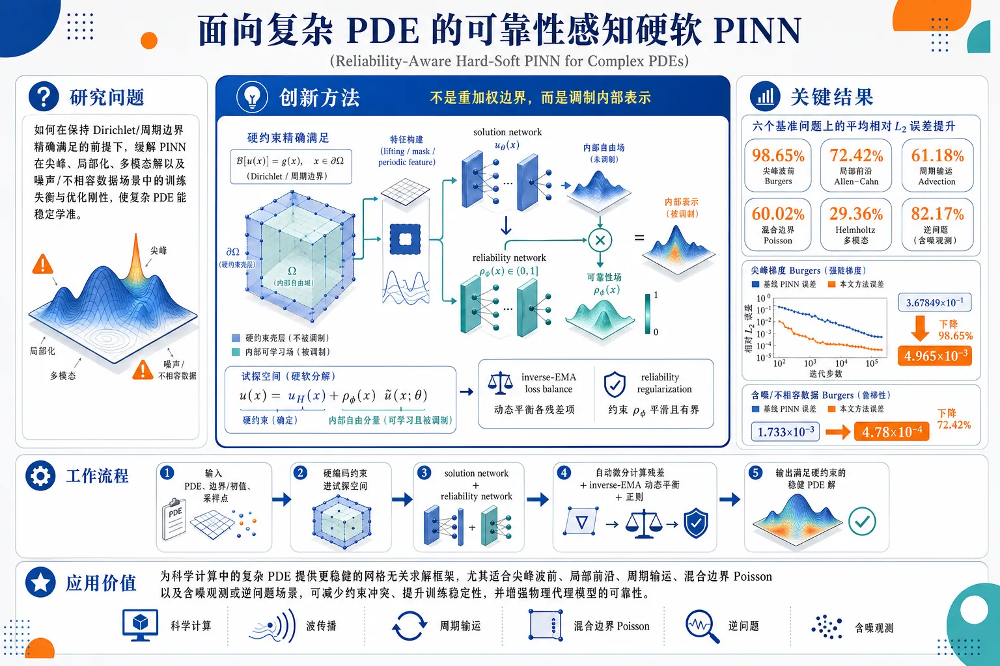
研究问题如何在保持 Dirichlet/周期边界精确满足的前提下，缓解 PINN 在尖峰、局部化、多模态解以及噪声/不相容数据场景中的训练失衡与优化刚性，使复杂 PDE 能稳定学准。创新方法在 hard-soft PINN 的可容许试探空间中插入一个有界可学习的 reliability field ρϕ，只调制内部自由分量、不破坏硬约束；再结合 inverse-EMA 全局损失平衡与轻量可靠性正则，让模型在难区自动增强或削弱内部表达强度，Aha 点是“不是重加权边界，而是调制内部表示”。工作流程输入 PDE、边界/初值条件与采样点；先用 lifting function、mask 或周期特征把已知约束硬编码进试探空间；再由 solution network 生成内部解分量，并由 reliability network 输出有界调制场 ρϕ；用自动微分计算 PDE/边界/初值残差；通过 inverse-EMA 动态平衡各项损失，加上 reliability 正则联合训练；最终输出满足硬约束且更稳健的 PDE 解。关键结果在 6 个基准上相对误差分别降低 98.65%、72.42%、61.18%、60.02%、29.36%、82.17%；尖梯度 Burgers 误差从 3.67849×10⁻¹ 降到 4.965×10⁻³。噪声且不相容初值的 Burgers 中，误差从 1.733×10⁻³ 降到 4.78×10⁻⁴，说明该方法对局部病态和不可靠数据更稳健。应用价值为科学计算中的复杂 PDE 提供更稳健的网格无关求解框架，尤其适合尖峰波前、局部前沿、周期输运、混合边界 Poisson 以及含噪观测或逆问题场景，可减少约束冲突、提升训练稳定性，并增强物理代理模型的可靠性。第一部分：核心概览
这篇工作把 hard–soft PINN 推进到“可靠性调制”层面：在保持 Dirichlet/周期约束精确嵌入的前提下，为可学习的内部试探空间加入一个有界 reliability field，并配合 inverse-EMA 全局损失平衡与轻量正则，使难训练 PDE 在尖峰、局部化、多模态和不可靠数据场景下显著降误差。相较传统 PINN/HSPINN，核心增量不在更强约束，而在对“可容许但病态”试探空间的局部可调节性建模。
---
第二部分：结构化快速回顾
《Reliability-Aware Hard–Soft Physics-Informed Neural Networks for Robust Learning of Challenging Partial Differential Equations》（None，）
- 背景：PINN 免网格但易受 loss imbalance、optimization stiffness、局部/多模态解结构影响；HSPINN 通过硬嵌入边界条件减轻惩罚冲突，但固定内部表示仍可能难优化。
- 方法：在 HSPINN 的可容许试探空间中引入有界 reliability field (h̊o_φ)，保持硬约束精确成立；再用 inverse-EMA global loss balancing 和可靠性正则联合训练。
- 结果：6 个基准上相对误差分别降低 98.65%、72.42%、61.18%、60.02%、29.36%、82.17%；尖梯度 Burgers 误差从 (3.67849×10⁻¹) 降到 (4.965×10⁻³)。
- 讨论：真正起作用的是“内部调制”而非重新加权边界；当全局损失平衡不足以解决局部病态时，reliability field 成为主要恢复机制。
- 局限：适用重点是“已可容许但难优化”的 hard–soft 试探空间；reliability field 不是物理参数，也不是不确定性概率，解释性边界明确。
- 结论：RA-HSPINN 在尖峰、噪声/不相容初值、周期输运和混合边界 Poisson 上都比 HSPINN 更稳健，尤其适合局部化和多模态 PDE。
---
第三部分：逐章节冷凝解析
1 Introduction
PDE 仍是计算物理的主语言
- PDE 被界定为“the central mathematical language for computational physics”，覆盖传输、扩散、波动、弹性、流体、电静力与多物理耦合。
- 传统数值法包括有限差分、有限元、有限体积、谱方法；其代价是需要网格、离散域、稳定化选择、装配或时间推进。
- 对不规则区域、局部化结构、稀疏观测、逆问题、快速代理模型，这些要求会变得限制性很强。
- 原文关键表述：*"These requirements can become restrictive when the computational domain is irregular, the solution contains localized structures, or the solver must be coupled with sparse measurements, inverse identification, or rapid surrogate evaluation."*
PINN 的吸引力来自免网格与可微分物理约束
- PINN 用神经网络直接表示未知解，并借助自动微分把治理方程写入损失函数。
- 通过在 collocation points 上最小化 PDE residual、边界/初值 residual，避免显式网格算子装配。
- 适合 forward、inverse、data-assimilation 任务。
- 原文关键表述：*"a mesh-free and differentiable formulation"*、*"can combine data and physics in the same objective"*。
软约束 PINN 的核心病灶是惩罚冲突
- 标准 PINN 将 PDE、Dirichlet、Neumann、initial condition 全部作为软惩罚项。
- 各部分 loss 的量级与梯度可能相差几个数量级。
- 边界权重太小会破坏边界；太大则主导训练并压制内部 residual 最小化。
- 原文关键表述：*"The weights are not known a priori, and the magnitudes and gradients of the partial losses can differ by orders of magnitude."*
Hard–soft PINN 通过硬嵌入已知约束缓解冲突
- HSPINN 把已知 Dirichlet 或 periodic 条件直接写进 trial space。
- Dirichlet 可通过 lifting function + mask 完成；周期性可通过正弦特征编码。
- 这样 Dirichlet penalty 被完全移除，不再参与优化权衡。
- 原文关键表述：*"the optimizer no longer needs to balance a Dirichlet penalty against the PDE residual."*
固定 HSPINN 仍会在局部化、多模态、噪声场景中病态
- 固定 hard–soft 表示虽满足边界，但内部自由分量仍是单一全局神经映射。
- 当解存在尖梯度、局部前沿、多模态结构或不可靠数据时，固定 mask/feature map 会使自由分量的近似景观变难。
- 原文关键表述：*"a fixed HSPINN still represents the free interior component through a single global neural map."*
RA-HSPINN 的定位是对 HSPINN 的定向增强
- 目标不是把边界“变软”，也不是引入任意 residual 重加权，而是改善“可容许但过于刚性”的 hard–soft trial space 的条件数。
- 通过有界 learnable reliability field 在内部做局部调制。
- 原文关键表述：*"not as a replacement for all PINN formulations"*、*"improve the conditioning of the admissible hard–soft trial space when its fixed interior component is too rigid."*
方法贡献被明确拆成四点
- 精确硬嵌入 Dirichlet/periodic 约束，同时增加 bounded modulation field。
- 结合 inverse-EMA global loss balancing 与 reliability regularization。
- 与 SPINN、HSPINN、HSPINN+inverse-EMA 对比，分离三种效应。
- 给出 product-rule stiffness analysis，说明 first-order / second-order PDE 下调制项的差异。
- 原文关键表述：*"we provide a product-rule stiffness analysis"*。
---
2 Mathematical Formulation
2.1 General problem setting
PDE、边界与初值被统一写成残差形式
- 定义有界区域 (ØmegasubsetR^d)，时空域 (Q_T=Ømega×(0,T])。
- 方程写成 (N[u](bmx,t)=f(bmx,t))。
- 边界分为 (partialØmega=Γ_Du̧pΓ_N)，且两者不交。
- 条件分别是 Dirichlet (u=g_D)、Neumann (bm nḑotnabla u=g_N)、initial condition (u(bm x,0)=u₀₍bm x))。
- 所有导数通过 automatic differentiation 计算。
- 残差定义为 (Rₚdₑ, R_N, Rᵢc)。
关键点
- 这里的重点不是算法，而是把所有 PDE 任务统一为“残差最小化 + 约束残差”框架。
- 对 stationary 问题，时间项直接省略，保持公式一般性。
---
2.2 Soft PINN objective and penalty conflict
标准软 PINN 是多项损失加权和
- 总损失：(LSPINN=łambdaₚdₑLₚdₑ+łambda_DL_D+łambda_NL_N+łambdaᵢcLᵢc)。
- 每一项都是对应残差的均方期望。
- 关键问题不是形式复杂，而是各项 scale 不一致。
惩罚冲突是优化失败根源之一
- 小 Dirichlet 权重会导致边界误差。
- 大 Dirichlet 权重会压制内部 physics。
- 原文关键表述：*"a weighted compromise among residual minimization, boundary fitting, and initial-condition fitting"*。
- 这里直接导向 hard-soft 方案。
---
2.3 Hard-soft admissible trial space
Dirichlet 约束通过 trial space 精确嵌入
- 形式：(uθHS=h_D+m_D v_θ)。
- (h_D) 为 lifting function，(m_D) 为 mask function。
- 在 (Γ_D) 上满足 (h_D=g_D)、(m_D=0)，因此 (uθHS=g_D) 对所有 (θ) 恒成立。
- Dirichlet penalty 被完全去掉，新的损失只保留 PDE、Neumann、IC。
- 原文关键表述：*"The omitted Dirichlet term is not approximated or downweighted; it is exactly satisfied by construction."*
周期结构也可在表示层硬编码
- 通过坐标变换 (ǎrphi(x,t)=[sin(x-β t),o̧s(x-β t),t/t_c]) 实现周期性。
- 任何关于 (ǎrphi) 的神经函数都对空间变量 (x) 周期。
- 与 mask 的概念一致：已知结构进入表示层，而不是只靠罚项。
---
2.4 Reliability-aware extension of the hard-soft ansatz
RA-HSPINN 在内部表示上加入 bounded reliability field
- 形式：(uθ,φRA=h_D+m_D,h̊o_φ,v_θ)。
- (h̊o_φ=h̊oₘᵢₙ+(1-h̊oₘᵢₙ)σ(g_φ))，故 (h̊o_φin[h̊oₘᵢₙ,1])。
- 实验中 (h̊oₘᵢₙ=0.10)。
- 因为 (h̊o_φ) 只乘在 masked trainable component 上，边界仍然精确满足。
- 原文关键表述：*"does not weaken the hard constraint. It only modifies the interior part of the admissible representation."*
reliability field 是数值调制量，不是概率或材料参量
- 这是方法解释中的重要边界。
- 原文关键表述：*"not a physical material parameter and not a calibrated uncertainty probability."*
- 其作用是给网络一个 bounded local degree of freedom，使局部难区更容易拟合。
对不同问题类型给出实例化模板
- 1D 非零 Dirichlet：(u=1+x(1-x)h̊o_φ v_θ)。
- 2D homogeneous Dirichlet：(u=xyh̊o_φ v_θ)。
- 周期问题：(uHS=v_θ(ǎrphi))，(uRA=h̊o_φ(ǎrphi)v_θ(ǎrphi))。
- 原文关键表述：*"These examples are not separate methods; they are direct instantiations of Eq. (20)."*
---
2.5 Reliability-modulated residual objective
残差形式保持标准 MSE，不引入点级重加权
- HSPINN 和 RA-HSPINN 都是对 PDE residual 做均方。
- RA-HSPINN 的变化来自 trial space，而不是 residual 内部再乘空间权重。
- 原文关键表述：*"This method does not add an additional pointwise residual reweighting rule."*
- 这样避免额外的空间重权超参数，保持与标准 PINN 形式接近。
---
2.6 Adaptive global loss balancing
采用 inverse-EMA 跟踪每个 partial loss 的尺度
- 对第 (i) 个损失，EMA 更新：(sᵢ⁽k⁾=β_w sᵢ⁽k⁻¹⁾+(1-β_w)Lᵢ⁽k⁾)。
- 设定 (β_w=0.98)。
- 逆尺度：(widetildełambdaᵢ⁽k⁾=1/(sᵢ⁽k⁾+ǎrepsilon))。
- 归一化：(łambdaᵢ⁽k⁾=fracMwidetildełambdaᵢ⁽k⁾sumⱼwidetildełambdaⱼ⁽k⁾)。
- 再 clip 到 ([0.20, 5.0])，并重归一化。
- (ǎrepsilon=10⁻¹²)。
这是一种轻量、无可学习参数的平衡机制
- 不引入额外 learnable parameter。
- 目标是避免某一 residual 长期主导优化。
- 原文关键表述：*"intentionally lightweight"*、*"provides a reproducible way to prevent persistent domination by one residual component."*
---
2.7 Reliability regularization and final objective
reliability field 需要靠正则防止过度振荡
- 正则项：(Lₕ̊o=αₕ̊oE[(h̊o_φ-1)²]+αₛE[|nablah̊o_φ|₂²])。
- 第一项让模型在不需要调制时接近 HSPINN。
- 第二项惩罚快速变化。
- 1D time-dependent 时平滑项用 (h̊oₓ²⁺⁰.1h̊oₜ²)；2D stationary 时用 (h̊oₓ²⁺h̊o_y²)。
- 实验设定：(αₕ̊o=10⁻³)、(αₛ₌₁₀⁻⁵)。
最终目标函数是加权 residual 加正则
- (LRA=sumᵢ₌₁^MłambdaᵢLᵢ₊Lₕ̊o)。
- 对不同 PDE 类别，partial losses 的组成不同，但框架统一。
算法 1 的训练流程
- 初始化 (v_θ)、(g_φ) 和 EMA scales。
- 每轮采样 interior/constraint points。
- 构建 (uθ,φRA)。
- 用自动微分求 residual。
- 更新 EMA、计算 (łambdaᵢ)、计算 (Lₕ̊o)、反向传播更新参数。
- 这里的重点是整个方法“method-level”统一适配 Burgers、convection、Poisson、first-order system。
---
3 Experimental Setup
网络结构固定，便于公平比较
- 所有实验使用 PyTorch automatic differentiation。
- HSPINN solution network：全连接 MLP，tanh 激活，4 层隐藏层，宽度 64。
- RA-HSPINN 的 solution network 与 HSPINN 相同。
- reliability network：3 层隐藏层，宽度 32。
- periodic convection 和 mixed first-order Poisson 使用三角特征映射；Burgers 和 Poisson 使用原始坐标。
训练规模与采样设置统一
- 所有问题均用 4000 steps。
- interior points：2048。
- IC/BC points：512。
- 这一统一设置强化了横向对比的可复现性。
超参数设置明确
- Adam 学习率：(10⁻³)。
- (β_w=0.98)，(ǎrepsilon=10⁻¹²)。
- clip bounds：([0.20,5.0])。
- (h̊oₘᵢₙ=0.10)。
- 正则系数：(αₕ̊o=10⁻³)，(αₛ₌₁₀⁻⁵)。
噪声/不相容初值额外使用固定手工权重
- 对 noisy & incompatible initial data 的 Burgers，HSPINN 和 RA-HSPINN 都使用同一固定权重：
[
wᵢc(x)=øperatornameclipłeft(1-0.75e⁻⁽x/δ⁾^²-0.75e⁻⁽⁽¹⁻x⁾/δ⁾^²,0.20,1i̊ght),quad δ=0.08.
]
- 初值损失变为 (E[wᵢc(u_θ(x,0)-u₀traⁱⁿ(x))²])。
- (δ=0.08) 贴合高斯样噪声团的空间尺度。
- 该权重是固定先验，不属于可学习 reliability field。
- 原文关键表述：*"this weight is a fixed problem-informed prior, not part of the learnable reliability field ρϕ, and is applied identically to both HSPINN and RA-HSPINN."*
评估指标是相对 (L₂) 误差
- (ǎrepsilonL_₂=|uₚᵣₑd-u^*|₂/|u^*|₂)。
- 时间依赖问题在整个 space-time grid 上算范数。
- mixed first-order Poisson 只对 solution channel (u) 计误差。
---
4 Numerical Results
4.1 Burgers equation with sharp gradients
基准问题是高频、非线性、边界硬约束 Burgers
- 方程：(uₜ₊ᵤᵤₓ₋ν uₓₓ=f)。
- (ν=0.01)。
- 精确解：(u^*(x,t)=1+0.80sin(4π x)e⁻⁰.⁵⁰t)。
- 边界值：(u(0,t)=u(1,t)=1)。
- HSPINN 与 RA-HSPINN 都使用同一 hard ansatz：
(uHS=1+x(1-x)v_θ)，
(uRA=1+x(1-x)h̊o_φ v_θ)。
难点来自高频与非线性耦合
- 该解的空间频率较高。
- 非线性对流项 (uuₓ) 会放大 PDE residual 与 initial-condition 之间的优化失衡。
- mask (x(1-x)) 使边界附近的自由分量更难拟合。
- 原文关键表述：*"the hard mask x(1 − x) can make the free component vθ difficult to approximate near the boundary."*
RA-HSPINN 显著修复固定 HSPINN 的失败模式
- HSPINN 不能重建高频结构，空间-时间误差大。
- RA-HSPINN 预测几乎贴合参考解，误差场被大幅压制。
- 由于两者边界均被同一 mask 精确满足，改进来自内部调制而非边界处理。
- 学到的 reliability map 在域内保持活跃。
定量结果极强
- HSPINN 最终相对误差：(3.67849×10⁻¹)。
- RA-HSPINN 最终相对误差：(4.965×10⁻³)。
- 相对误差降低：98.65%。
- 最终 mean reliability 约 0.838。
- 这表明模型没有退化回固定 HSPINN，而是使用了内部调制。
---
4.2 Burgers equation with noisy and incompatible initial data
基准问题测试对不可靠约束的鲁棒性
- 参考解：(u^*(x,t)=1+sin(π x)e⁻t)。
- 训练初值被刻意污染：高频正弦噪声 + 边界附近的不相容 bump。
- 高频扰动由 (sin(13π x)) 与 (sin(29π x)) 的加权组合构成。
- 不相容项由边界两端局部高斯样 bump 构成。
- 评估仍对 clean exact solution 进行。
设计目标是避免过拟合噪声初值
- 两个模型都用相同 hard Dirichlet ansatz。
- 两个模型都使用同一手工初值权重。
- 因而比较隔离了 reliability-aware interior modulation 与 adaptive global loss balancing 的效果。
RA-HSPINN 在噪声初值场景更稳健
- 两者都能恢复大致正确解，但 RA-HSPINN 误差更小。
- reliability map 显示该场景下调制被明显使用。
- 这意味着模型没有把噪声初值在全域均匀拟合进去，而是在 PDE residual 与不可靠初值之间做了局部折中。
定量结果明确
- HSPINN 最终相对误差：(1.733×10⁻³)。
- RA-HSPINN 最终相对误差：(4.78×10⁻⁴)。
- 相对误差降低：72.42%。
- 最终 mean reliability 约 0.505。
- 最终自适应权重约：(łambdaₚdₑ=1.813)、(łambdaᵢc=0.187)。
- 这与“初值含噪且不相容”时应更强调 PDE 约束的直觉一致。
---
4.3 Periodic convection with a smooth traveling wave
可见信息显示该节聚焦周期输运
- 方程开头可见：(uₜ₊β uₓ₌₀)。
- 域为 ([0,2π]×[0,2π])。
- 结合前文，周期结构通过 (sin(x-β t))、(o̧s(x-β t)) 特征编码。
- 该节标题明确是 “Periodic convection with a smooth traveling wave”。
可见文本不足以恢复完整数值结果
- 当前可见内容没有展开完整实验描述、误差数值或图表解读。
- 仅能确认该案例用于检验 periodic transport 下的表示能力与周期硬编码机制。
---
第四部分：深度理解与语言支持
1. 术语解析
Hard–soft trial space
- 语境含义：不是“硬约束 + 软约束”简单拼接，而是把已知约束嵌入试探空间，使其成为 admissible space。
- 微妙差别：hard 指“恒成立”，soft 指“通过 penalty 逼近”。
- 这里的关键不是“更强”，而是“把不需要优化的部分从优化中拿掉”。
Reliability field
- 语境含义：一个 bounded 可学习的调制场，作用在内部自由分量上。
- 微妙差别：它不是 uncertainty estimate，不是 probability，也不是 physical coefficient。
- 更接近“局部门控/调幅器”，控制不同区域的表达强度。
Inverse-EMA global loss balancing
- 语境含义：用 EMA 追踪各 partial loss 的量级，再取倒数作为权重。
- 微妙差别：不是按梯度显式求解的复杂自适应法，而是轻量、稳定、可复现的全局平衡机制。
- 作用对象是“不同 residual block 之间”，不是空间点级别。
Product-rule stiffness
- 语境含义：当 (h̊o_φ v_θ) 被代入 PDE 后，若 PDE 包含二阶导数，会产生更多乘积求导项，优化更硬。
- 微妙差别：first-order system 只需一次导数，二阶系统会在自动微分里把调制项的复杂性再放大一层。
- 本质是“调制带来的可塑性”和“乘积求导带来的额外刚性”的权衡。
Admissible representation
- 语境含义：表示本身就满足某些约束，因此属于可行解空间。
- 微妙差别：比“approximation”更强，强调不只是逼近，而是先验满足边界/周期条件。
---
2. 疑难查证
为什么乘上 (h̊o_φ) 不会破坏 Dirichlet 硬约束？
- 关键在于结构：(u=h_D+m_Dh̊o_φ v_θ)。
- 在 (Γ_D) 上，mask 满足 (m_D=0)，所以无论 (h̊o_φ) 和 (v_θ) 取什么值，乘积项都消失。
- 于是边界值始终等于 (h_D=g_D)。
- 这就是“把约束放在结构里”而不是“放在损失里”的本质。
为什么二阶 PDE 对 reliability modulation 更敏感？
- 若 PDE 含 (uₓₓ)，代入 (u=h_D+m_Dh̊o_φ v_θ) 后会出现大量乘积法则项：
[
(m_Dh̊o_φ v_θ)ₓₓ
]
会展开成 (h̊o_φ)、(h̊oφ,ₓ)、(h̊oφ,ₓₓ)、(v_θ)、(vθ,ₓ)、(vθ,ₓₓ) 的组合。
- 这使优化面更复杂，梯度路径更不平滑。
- 用 first-order system 只保留一阶导数，能减少这种“调制项乘积扩张”。
- 这也是文中强调“casting the HSPINN trial space in a first-order system formulation”的原因。
为什么 noisy initial condition 会让 adaptive loss weighting 有效？
- 初值已含噪声与边界不相容成分，本质上不是“真实物理信号”。
- 若仍让初值项占比过高，会逼模型朝错误数据拟合。
- inverse-EMA 让 PDE residual 在训练后期获得更高权重，帮助模型回到物理解。
- 这正对应结果中 (łambdaₚdₑ=1.813)、(łambdaᵢc=0.187) 的重分配。
---
第五部分：创新评估与关联
1. 创新性判断
相对 2–5 年相关工作的新颖性主要有三层
- 从“硬约束嵌入”推进到“硬约束内的局部可靠性调制”
HSPINN 已解决“边界怎么硬满足”的问题，这里进一步解决“满足边界之后，内部表示仍然太僵硬”的问题。创新点不在约束类型本身，而在 trial space 内部再加一个可学习 gate。
- 把自适应权重从点级 residual reweighting 转到全局 loss balancing + 结构调制
许多近年工作集中在 loss reweighting、gradient balancing、adaptive sampling。这里选择的是更克制的路线：不改 residual 形式，不加复杂点权，而是用 inverse-EMA 管全局尺度，再让 reliability field 负责局部表达自由度。
- 把“何时需要 modulation”与“何时只需 HSPINN”区分开
正则项把 (h̊o_φ) 拉回 1，使模型在简单问题上退化为 HSPINN；只有在尖梯度、局部前沿、多模态、噪声初值时才显著偏离。这个“自适应地接近基线”的设计，比单纯更强模型更稳健。
相对前人未解决的问题
- 传统 PINN/HSPINN 解决了“约束表达”，没有充分解决“可容许表示的病态优化”。
- 现有自适应 loss 平衡多处理“权重冲突”，没有直接改造“内部表示的局部可塑性”。
- 该工作把两者合并，并用实验明确证明：在有些问题里，loss balancing 只够一部分，真正的恢复来自 reliability field。
领域地位
- 可以视为 HSPINN 的结构增强版，不是 PINN 大框架的替代者。
- 在 hard-constrained / admissible trial space 方向上，把优化稳定性问题进一步精细化到“内部调制”的层级，属于近年 scientific machine learning 中较少见的结构性改造。
-
10
📊 含图深析
📄 摘要：报道一种神经网络量子蒙特卡罗相关新计算方法，目标是降低高精度量子模拟的计算开销。新闻摘要指出，神经网络量子蒙特卡罗因成本极高通常受限于小分子体系，而该方法可突破尺寸限制，使更大体系量子模拟以较低成本开展；未给出算法细节或数值规模。
💡 亮点：新的神经网络量子蒙特卡罗方法瞄准大体系模拟瓶颈，降低原本限制小分子的计算成本。若可复现，将直接影响材料电子结构高精度基准计算。
📖 展开分析 + 配图
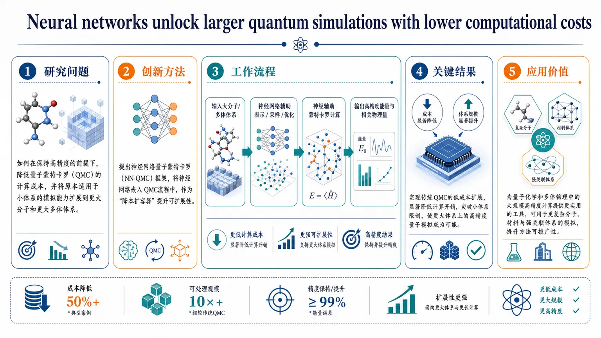
研究问题如何在保持高精度的前提下，降低量子蒙特卡罗（QMC）的计算成本，并将原本适用于小体系的模拟能力扩展到更大分子和更大多体体系。创新方法提出神经网络量子蒙特卡罗（NN-QMC）框架，把神经网络嵌入QMC流程中，充当“降本扩容器”，以更低代价支撑高精度量子模拟的可扩展性。工作流程输入大分子或多体体系的量子模拟任务；神经网络参与QMC表示、采样或优化环节；通过神经辅助的蒙特卡罗计算完成高精度求解；输出更大体系上的能量与相关物理量结果。关键结果实现了传统QMC的低成本扩展，显著降低计算开销，同时突破小体系限制，使更大体系上的高精度量子模拟成为可能。应用价值为量子化学和多体物理中的大规模高精度计算提供更实用的工具，可用于更复杂分子、材料与强关联体系的模拟，提升方法可推广性。核心概览
这篇论文属于量子计算模拟 / 计算化学 / 机器学习辅助量子蒙特卡罗方向，提出一种神经网络量子蒙特卡罗相关的新方法，旨在降低高精度量子模拟的计算成本，并推动更大体系的模拟。
方法要点
- 采用神经网络量子蒙特卡罗相关框架进行量子模拟。
- 核心目标是减少高精度量子模拟的计算开销。
- 方法意在突破传统神经网络量子蒙特卡罗在体系尺寸上的限制。
- 具体算法结构、训练方式、优化策略等，摘要未详述。
关键结果
- 摘要明确称，该方法可以降低量子模拟成本。
- 与传统受限于小分子体系的神经网络量子蒙特卡罗相比，该方法有望支持更大体系的量子模拟。
- 论文强调其对高精度量子模拟规模扩展的促进作用。
- 具体数值性能、基准体系和误差表现，摘要未详述。
创新性判断
- 可能的新颖点在于：将神经网络量子蒙特卡罗的适用范围从小体系推进到更大体系，并同时降低计算成本。
- 若这一点成立，其创新性主要体现为可扩展性提升，而不仅是精度改进。
- 但由于摘要未给出方法细节，无法判断其究竟是网络结构创新、采样策略改进、能量估计优化，还是其他机制，故创新点判断存在不确定性。
-
11
📄 摘要：在一万余种半导体和绝缘体上研究带隙功能分类对机器学习建模的影响。使用 MatFeaLib 生成 518 个描述符，其中 480 个为成分统计量、38 个为结构特征；再经混合简约特征选择得到约 20 个关键特征，用于按三个应用导向光谱区域开展分类、聚类和回归。
💡 亮点：带隙先按功能光谱区分类，再用少量关键成分/结构特征回归。该分层策略比直接端到端预测更贴近光电材料筛选任务。
📖 展开分析 + 配图
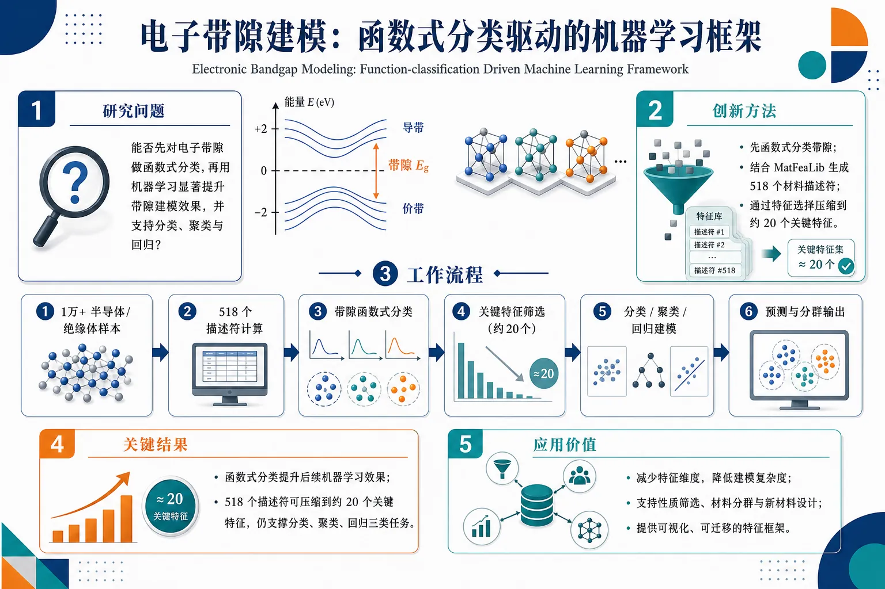
研究问题半导体/绝缘体的电子带隙能否先进行“函数式分类”，再借助机器学习显著提升带隙相关建模效果，并支持分类、聚类与回归等多任务分析？创新方法提出先对电子带隙做函数式分类，而不是直接把带隙当作单一连续目标；再结合 MatFeaLib 生成的518个材料描述符，通过简洁特征选择压缩到约20个关键特征，用少量核心表征支撑后续多种机器学习任务。工作流程输入一万余种半导体和绝缘体样本；计算每个材料的518个描述符；对电子带隙进行函数式分类；通过特征选择筛出约20个关键特征；基于该特征集合开展分类、聚类和回归建模；输出带隙相关预测与分群结果。关键结果研究表明，对电子带隙进行函数式分类能够提升后续机器学习建模效果；同时，518个描述符可被压缩到约20个关键特征，仍能支撑分类、聚类和回归三类任务，说明少量高信息量特征即可覆盖主要结构-性质关系。应用价值为材料信息学中的带隙预测提供更高效的建模思路，可减少特征维度、降低建模复杂度，并为半导体和绝缘体的性质筛选、材料分群与新材料设计提供可视化、可迁移的特征框架。核心概览（100字内）
该文面向电子带隙的机器学习建模，基于一万余种半导体和绝缘体，考察带隙的功能分类对建模的影响，并围绕应用导向的光谱区域开展分类、聚类和回归研究，属于材料信息学/计算材料学方向。
方法要点
- 使用 MatFeaLib 构建 518 个描述符，其中包括 480 个成分统计量 和 38 个结构特征。
- 通过 混合简约特征选择，将高维描述符压缩到 约 20 个关键特征。
- 将带隙按 三个应用导向的光谱区域 进行划分，分别开展建模。
- 在同一问题框架下同时进行 分类、聚类和回归 建模。
关键结果
- 研究对象覆盖 一万余种半导体和绝缘体，样本规模较大。
- 摘要明确指出：带隙功能分类会影响机器学习建模方式。
- 从 518 个描述符中可筛选出 约 20 个关键特征，说明可用较少特征支撑建模。
- 论文将带隙预测/分析分解为 三个应用导向光谱区域，体现出任务分层思路。
- 具体模型性能、最优算法和定量提升幅度，摘要未详述。
创新性判断
- 可能的新颖点在于：不把带隙仅当作连续数值回归对象，而是结合“功能分类/应用谱区”来组织建模任务。
- 另一潜在创新是：分类、聚类、回归三类任务联合考虑，更贴近材料设计中的实际使用场景。
- 混合简约特征选择从大量成分与结构描述符中提炼少量关键特征，也可能是方法上的特色。
- 但由于摘要未给出对比基线和性能指标，以上创新性判断 仍有不确定性】【。
-
12
📊 含图深析
📄 摘要：使用太赫兹光谱结合机器学习算法识别传统中药材是否经过硫熏处理；论文信息显示发表于 Chemical Physics Letters，作者为 Tian'ai Zhao 等。摘要未给出具体样品种类、分类器类型、准确率或谱段贡献，因此只能确认方法路线为太赫兹无损检测加数据驱动判别。
💡 亮点：太赫兹谱被用于中药硫熏识别，并由机器学习完成判别。该路线体现光谱指纹与分类模型在复杂化学处理检测中的结合。
📖 展开分析 + 配图
研究问题如何在不破坏中药样品的前提下，快速判别其是否经过硫熏处理，以支持现场筛查、样品鉴别和质量控制。创新方法将太赫兹光谱的无损“指纹”信息与机器学习分类结合，把传统依赖化学分析的硫熏检测转化为自动识别问题，实现快速区分硫熏与未硫熏样品。工作流程采集中药样品后获取太赫兹光谱数据；将光谱输入机器学习模型进行特征学习与分类判别；最终输出“硫熏/未硫熏”的识别结果，用于检测与筛查。关键结果该方法能够快速识别传统中药是否硫熏处理，具备无损检测、样品鉴别与质量控制能力，适用于异常处理识别场景。应用价值为传统中药硫熏问题提供一种快速、无损、便于推广的检测方案，可用于生产流通环节的质量监管和现场筛查，减少对样品的破坏并提升检测效率。核心概览
该文用太赫兹光谱结合机器学习，识别传统中药材是否经过硫熏处理，属于中药质量鉴别与无损检测方向。
方法要点
- 采用太赫兹光谱获取样品的光谱信息，用于区分硫熏与未硫熏中药材。
- 引入机器学习算法进行数据驱动分类判别。
- 整体思路是“光谱检测 + 智能识别”的无损分析框架。
- 具体样品种类、分类器类型、特征提取与参数设置，摘要未详述。
关键结果
- 证明太赫兹光谱可用于识别传统中药材的硫熏处理状态。
- 结合机器学习可实现对该问题的自动化判别。
- 摘要未详述具体准确率、灵敏度或各算法表现。
创新性判断
- 可能的新颖点在于：将太赫兹无损检测引入中药硫熏识别，并用机器学习提升判别能力。
- 若相较传统化学分析方法，其优势可能是快速、非破坏性、适合批量筛查。
- 但摘要未说明是否首次提出、是否优于已有光谱方法，因此创新高度需谨慎判断。
-
13
📊 含图深析
📄 摘要：面向建筑集成可持续能源的半透明有机光伏，采用物理增强深度学习进行器件优化。题录显示发表于 Advanced Materials 第 38 卷第 41 期；摘要未提供具体材料体系、网络结构、效率、透过率或稳定性数值，因此可确认核心是把物理约束与深度学习用于半透明有机光伏设计。
💡 亮点：半透明有机光伏的光电权衡被纳入物理增强深度学习优化。该方向契合建筑集成光伏中效率、透光与颜色控制的多目标材料设计。
📖 展开分析 + 配图
研究问题如何在建筑集成场景中，对半透明有机光伏器件进行高效优化，使其同时兼顾透光需求与发电性能。创新方法将物理规律嵌入深度学习模型，形成物理增强的设计优化框架，用数据学习与物理约束共同驱动半透明OPV器件搜索与筛选。工作流程输入器件与材料相关参数及设计目标；将物理约束注入深度学习模型；模型预测器件表现并辅助寻找更优结构与参数；输出适用于建筑集成场景的半透明OPV优化方案。关键结果研究证明物理增强深度学习可以有效用于半透明有机光伏器件优化，说明该方法能够为器件设计提供更合理、更可用的定向优化路径。应用价值为建筑窗户、幕墙等可透光界面提供“边采光、边发电”的能源方案，推动建筑集成可持续能源发展。核心概览
这篇论文聚焦面向建筑集成可持续能源的半透明有机光伏（OPV）器件优化，核心方向是物理增强深度学习辅助设计。
方法要点
- 采用物理增强/物理约束深度学习来指导半透明有机光伏优化。
- 将物理规律融入模型，以提升器件设计的合理性与可用性。
- 研究目标指向建筑集成场景下的半透明光伏应用。
- 摘要未详述具体网络结构、输入特征、训练策略与优化流程细节。
关键结果
- 摘要明确表明：该工作用物理增强深度学习实现了对半透明有机光伏器件的优化。
- 论文面向建筑集成可持续能源应用，说明其结果具有应用导向。
- 摘要未详述具体的效率、透过率、稳定性等定量结果。
- 摘要未详述具体材料体系与器件结构。
创新性判断
- 可能的新颖点在于：将物理约束与深度学习结合，用于半透明OPV设计，而不是仅依赖经验试错或纯数据驱动优化。
- 相对同方向工作，其潜在创新还包括把方法明确对准建筑集成可持续能源这一应用场景。
- 但由于摘要信息有限，以上创新性判断仅为合理推断，摘要未详述其与已有方法相比的具体差异。
-
14
📊 含图深析
📄 摘要：检验 Cr 合金化空穴掺杂 RuO₂ 诱导交替磁性的设想。制备 0≤x≤0.28 的 Ru₁₋ₓCrₓO₂ 薄膜，反应磁控共溅射在 TiO₂ 衬底上外延生长，XRD 验证外延，XPS 结合 Ar 刻蚀给出深度成分。x=0 与 0.23 的低温中子衍射未发现自旋沿 c 轴的长程交替磁序，显示铁磁与反铁磁相互作用竞争。
💡 亮点：Ru₁₋ₓCrₓO₂ 薄膜中，Cr 掺杂到 x=0.23 仍未在中子衍射中产生预期 c 轴长程交替磁序。结果约束了 RuO₂ 空穴掺杂实现交替磁性的材料路线。
📖 展开分析 + 配图
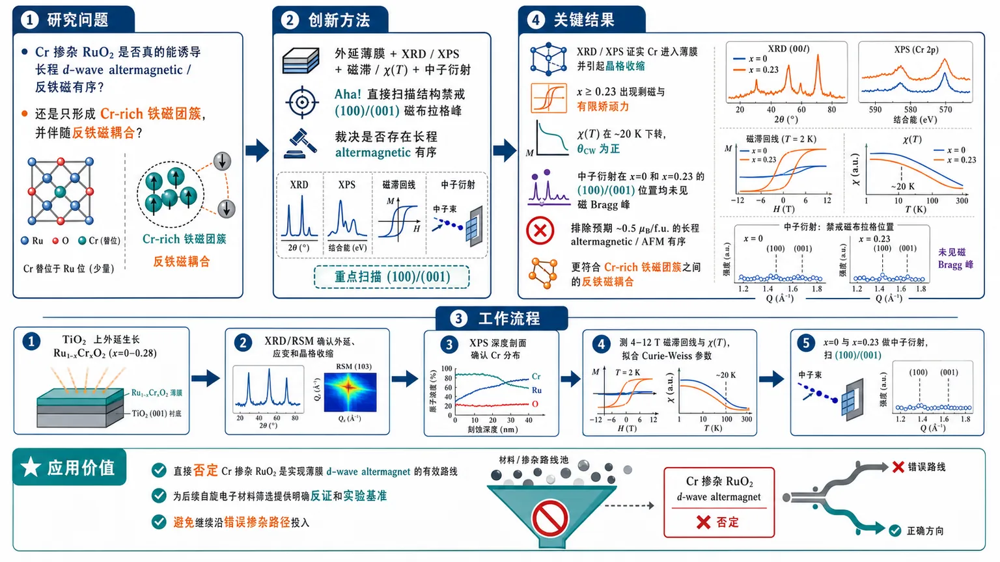
研究问题Cr 掺杂 RuO₂ 是否真的能诱导长程 d-wave altermagnetic/反铁磁有序，还是只会形成 Cr-rich 铁磁团簇并伴随反铁磁耦合？创新方法用外延薄膜 + XRD/XPS + 磁滞/χ(T) + 中子衍射直接裁决；关键 Aha! 是专门去扫结构禁戒的 (100)/(001) 磁布拉格峰，直接检验是否存在长程 altermagnetic 有序，而不是依赖间接输运信号。工作流程在 TiO₂ 上外延生长 Ru₁₋ₓCrₓO₂ 薄膜（x=0–0.28）→ 用 XRD/RSM 确认外延、应变和晶格收缩 → 用 XPS 深度剖面确认 Cr 在体相中的分布 → 测 4–12 T 磁滞回线与 χ(T)、拟合 Curie-Weiss 参数 → 对 x=0 和 x=0.23 做中子衍射，重点扫描 (100)/(001) 禁戒位寻找磁峰 → 结合剩磁、矫顽力和磁峰有无判定磁序。关键结果XRD/XPS 证实 Cr 进入薄膜并引起晶格收缩，但 x≥0.23 出现剩磁与有限矫顽力，χ(T) 在 ~20 K 下转，θCW 为正；中子衍射在 x=0 和 x=0.23 的 (100)/(001) 位置均未见磁 Bragg 峰，排除了预期尺度约 0.5 μB/f.u. 的长程 altermagnetic/AFM 有序，证据更符合 Cr-rich 铁磁团簇之间的反铁磁耦合。应用价值直接否定 Cr 掺杂 RuO₂ 是实现薄膜 d-wave altermagnet 的有效路线，为后续自旋电子材料筛选提供明确反证和实验基准，避免继续沿错误掺杂路径投入。第一部分：核心概览（Overview）
这项工作用薄膜磁化测量、XRD/XPS 和中子衍射直接检验了Cr 掺杂 RuO₂能否实现预期的 d-wave altermagnet。结果显示，x ≤ 0.28 的样品中没有出现支持长程 altermagnetic/AFM 有序的磁 Bragg 峰；低温磁化却呈现铁磁回线、剩磁与矫顽力，并伴随20 K 左右的 susceptibility 下转。整体证据指向Cr-rich 铁磁团簇的反铁磁耦合，而非 Ru 能带的有效空穴掺杂。这一结论直接否定了“Cr 掺杂 RuO₂ 可诱导 altermagnetism”的关键路径，在 RuO₂ 争议中属于直接散射证据层面的否证性工作。
---
第二部分：结构化快速回顾
《Competing ferromagnetic and antiferromagnetic interactions in non-altermagnetic Ru₁₋ₓCrₓO₂》（None，）
背景：RuO₂ 长期被视作潜在 altermagnet；Cr 掺杂曾被 DFT 预测可通过约 0.4 holes/Ru 诱导 AFM 状态。
方法：在 TiO₂ 基底上外延生长 Ru₁₋ₓCrₓO₂ (0≤x≤0.28)；用 XRD、XPS depth profiling、磁滞/χ(T) 和 中子衍射 联合判定磁结构。
结果：XRD/XPS 证实外延与成分均匀；磁化显示 x≥0.23 有剩磁与有限矫顽力，χ(T) 在 ~20 K 下转；但 x=0 和 x=0.23 的中子衍射未见 (100)/(001) 磁峰。
讨论：数据更符合CrO₂ 富集铁磁团簇彼此反铁磁耦合，而不是长程 altermagnetic 有序。
局限：只对 x=0 和 x=0.23 做了中子衍射；中子只敏感于垂直于散射矢量的磁矩分量。
结论：Cr 掺杂 RuO₂ 不是实现薄膜 d-wave altermagnet 的有效路线。
---
第三部分：逐章节冷凝解析
I Introduction
RuO₂ 争议的中心地位
RuO₂ 处于 altermagnet 研究的核心位置，因为它是易生长薄膜、具有 rutile 结构和 C₄ 旋转对称性的金属，天然适合形成 d-wave spin splitting。原文直接指出：*“RuO₂ is a metal that is easily synthesized as a thin film and crystallizes in a rutile structure that has the C4 rotation symmetry needed to produce d-wave spin splitting.”*
关键细节：
- 目标磁序是补偿型磁有序下的非相对论性自旋劈裂。
- d-wave altermagnet 对薄膜自旋电子器件尤其重要，因为 *“it has a non-zero spin conductivity tensor”*。
RuO₂ 以往证据链被逐步削弱
早期 neutron diffraction 和 REXS 曾报告 RuO₂ 存在 c-axis AFM 与约 0.05 μB/Ru 的弱磁矩；后续被判定为测量伪影。文中给出两类关键反证：
- neutron 的“磁峰”来自 double scattering；
- REXS 峰来自 anisotropic crystal structure 本身。
同时，μSR、ARPES、量子振荡都与非磁基态一致。原文：*“The absence of magnetic moment on the Ru sites has been additionally confirmed by highly sensitive muon spin rotation experiments”*，以及 *“performed and found to be consistent with a non-magnetic ground state.”*
这说明 RuO₂ 的主流共识已从“AFM”回到Pauli paramagnet / non-magnetic。
间接实验结果彼此冲突，必须回到直接探测
过去几年围绕 RuO₂ 的交换偏置、AHE、spin pumping、spin-torque、THz emission 等间接信号出现大量相互矛盾的解释。原文强调 *“These indirect measurements provided conflicting conclusions, highlighting the need to perform direct measurements of altermagnetism rather than relying on indirect probes.”*
关键点：
- 间接输运/界面信号不能唯一对应 altermagnetism；
- 需要直接磁散射去判定长程磁序。
Cr 掺杂被视为可行的空穴掺杂路线，但前提尚未被证实
DFT 预测：若向 Ru 带引入约 0.4 holes/Ru site，可诱导 AFM；实现方式包括约 10% Ru vacancies 或约 20% Cr substitution。CrO₂ 又具有：
- rutile 结构；
- collinear ferromagnetism；
- 比 RuO₂ 少 2 个 d 电子。
这使 Cr 掺杂成为最自然的候选。原文明确说：*“it is a good candidate for hole doping while maintaining the proper crystal structure and metallicity.”*
前人 Ru₁₋ₓCrₓO₂ 结果本身存在解释分歧
两篇实验工作分别研究 x≥0.56 和 x≤0.3。共同结论是 x≥0.3 进入 ferrimagnetic 状态。更关键的是，另一项研究把 x=0.2 的零剩磁 + 零场 AHE解释为 altermagnetism，Néel 矢量沿 [110]。
随后理论工作给出替代解释：AHE 来自 CrO₂ ferromagnetic clusters，这些团簇反铁磁耦合，且电荷更可能局域在 Cr 上，而不是空穴有效进入 Ru 带。原文：*“moments are localized to Cr ions and do not effectively hole dope the Ru bands.”*
本研究的任务是用中子衍射直接裁决
核心目标是判断 Cr 替位是否真的稳定 long-range AFM/altermagnetic order。原文总结性表述为：*“We investigate epitaxial Ru1−xCrxO2 thin films with 0 ≤ x ≤ 0.28 to determine whether Cr substitution stabilizes altermagnetism.”*
---
II Methods
样品制备与成分范围
样品为 Ru₁₋ₓCrₓO₂ 薄膜，x 范围 0 ≤ x ≤ 0.28，通过 reactive magnetron co-sputtering 在 TiO₂ substrates 上沉积。
关键工艺参数：
- 纯 RuO₂：base pressure 5×10⁻⁸ Torr，substrate 600 °C；
- Cr-alloyed：base pressure 1×10⁻⁶ Torr，substrate 450 °C；
- 纯 RuO₂ 总压 15 mTorr，Ar/O₂ = 5:1，Ru target 200 W RF；
- 合金样品总压 3 mTorr，Cr target 固定 175 W RF，Ru target 18–24 W 调节 Cr 含量。
原文：*“Thin films of Ru1−xCrxO2 with 0 ≤ x ≤ 0.28 were deposited on TiO2 substrates by reactive magnetron co-sputtering.”*
晶体与化学表征路径
结构用 symmetric/asymmetric XRD、θ/2θ scans 和 reciprocal space maps (RSMs)；成分深度用 XPS + Ar etching。
XPS 细节：
- 仪器：Thermo Fisher K-Alpha；
- 分析峰：Ru 3p3/2 和 Cr 2p3/2；
- 每个深度点取 5 次高分辨扫描平均；
- 扫描窗 450–600 eV，步长 0.2 eV，dwell time 30 ms；
- X-ray spot 400 μm，ion beam spot 2 mm × 3 mm；
- Ar 离子束 2 keV，蚀刻速率约 0.12 nm/s；
- 每个深度测 3 个位置，均值±标准差。
原文：*“The composition of alloyed films throughout the film depth was characterized by XPS measurements ... The overall film composition was calculated as the average composition throughout the film thickness.”*
磁化与磁化率测量设计
磁化测量使用 Quantum Design 12T DynaCool PPMS。
- χ(T) 在 1 T 下测量；
- 同时做 ZFC 和 FC；
- 两者差异可忽略，因此取平均提高信噪比；
- 先测 bare TiO₂ substrate，再从样品信号中扣除。
Cr-alloyed 样品的 χ(T) 用 Curie-Weiss + χ₀ 拟合，提取 θCW 和 μeff。
原文：*“Because we found negligible differences between the two measurement protocols, the ZFC and FC susceptibilities were averaged to improve the signal-to-noise ratio.”*
中子衍射的几何与判据
中子衍射只对 x=0 和 x=0.23 做。
- 仪器：HFIR 的 VERITAS triple-axis spectrometer；
- x=0：100 K；x=0.23：10 K；
- 样品多片堆叠并共取向以提高计数；
- b-axis 竖直，散射平面为 (h0l)；
- 入射中子波长 2.37 Å；
- 先测基底核 Bragg 峰，再测 film 的 (002) 作为归一化；
- 重点扫描结构禁戒的 (100) 和 (001) 位置，因为它们预期是 altermagnetic state 最亮的磁峰。
原文：*“Finally, because they are predicted to be the brightest magnetic peaks, we scanned for magnetic scattering at the (100) and (001) positions.”*
---
III Results and Discussion
#### III.1 Structural and chemical characterization by X-ray diffraction and photoelectron spectroscopy
XRD 证实外延和晶格压缩
所有样品都表现出 rutile 结构相关衍射峰。随着 Cr 含量增加，峰位系统性向高角度移动，说明晶格常数减小。原文：*“the film peak shifts systematically to higher angles with increasing Cr content, indicating a reduction in the lattice parameters consistent with substitution of Ru by the smaller Cr ion.”*
关键信息：
- Cr³⁺/Cr 的有效半径更小，导致晶格收缩；
- 薄膜的 out-of-plane 取向与基底一致；
- (100) 取向样品高度应变，in-plane 晶格被基底钳制；
- (001) 取向样品加入 20 nm RuO₂ buffer layer 以促进部分松弛，便于中子实验中分离 film 与 substrate 峰。
RSM 显示不同取向样品的应变状态不同
(100) 样品的 RSM 显示强烈外延约束；(001) 样品因缓冲层更松弛。
这直接服务于后续 neutron diffraction：
- 松弛后的 (001) 样品能把 film 的 (002) 峰从基底峰中分离出来；
- 这使 film 归一化和磁峰上限估计成为可能。
XPS depth profiles 排除了明显的体相成分梯度
XPS 深度剖面显示：
- (100) 样品在蚀刻前出现 Cr-rich surface layer；
- 经过第一次 etch cycle 后，深度成分变得相对均匀；
- neutron 使用的样品是 (001) 取向，其深度成分用于确认整体 Cr fraction。
原文：*“For the (100) oriented samples, a Cr-rich surface layer is observed prior to etching; however, the composition becomes relatively uniform throughout the depth after the initial etch cycle.”*
样品参数给出实际成分与厚度范围
Table 1 中的代表值包括：
- Ru₀.₈₄Cr₀.₁₆O₂：x = 0.156 ± 0.002，a = 4.546 Å, b = 4.592 Å, c = 2.964 Å, thickness 210 nm；
- Ru₀.₈Cr₀.₂O₂：x = 0.196 ± 0.003，a ≈ 4.537 Å, b ≈ 4.593 Å, c ≈ 2.962 Å, thickness 177 nm, phase fraction 0.53；
- Ru₀.₇₇Cr₀.₂₃O₂：x = 0.227 ± 0.003，a = 4.527 Å, b = 4.592 Å, c = 2.958 Å, thickness 141 nm；
- Ru₀.₇₂Cr₀.₂₈O₂：x = 0.279 ± 0.004，a ≈ 4.536 Å, b ≈ 4.591 Å, c ≈ 2.960 Å, thickness 154 nm, phase fraction 0.54；
- neutron 样品 Ru₀.₇₇Cr₀.₂₃O₂（(001)）x = 0.231 ± 0.002, a = b = 4.517 Å, c = 3.039 Å, thickness 160 nm。
这些数值证明掺杂进入了体相而非仅限表面。
#### III.2 Magnetic hysteresis and susceptibility
高场磁滞显示明显铁磁分量，且随 Cr 增加增强
所有 4 K、12 T 磁滞回线都未饱和，但 x ≥ 0.23 样品出现小剩磁和有限矫顽力。原文：*“all samples with x ≥ 0.23 have a small remanent magnetization and finite coercivity.”*
进一步地：
- 12 T 下诱导磁矩随 Cr 含量增加而增大；
- (100) 的 x=0.16 与 x=0.20 磁矩几乎相同；
- (001) 的 x=0.23 比 (100) 同成分样品诱导磁矩更大。
这组结果不支持简单的长程 AFM/altermagnetic 模型，反而支持局域铁磁团簇的存在。
磁化率在约 20 K 以下出现渐进式下转
χ(T) 不显示清晰相变点，而是都在 ~20 K 以下缓慢下降。原文：*“All samples exhibit a gradual downturn in susceptibility below approximately 20 K, although no well-defined transition temperature is observed.”*
这一特征更像竞争交换相互作用而非单一长程相变。
Curie-Weiss 拟合给出以铁磁交换为主的 θCW
高温区使用 Curie-Weiss + χ₀ 拟合后得到：
- (100) 样品：x = 0.16, 0.20, 0.23, 0.28 的 θCW 分别是 0.1 K, 1.2 K, 6.6 K, 10 K；
- (001) x = 0.23 的 θCW = 28.1 K。
原文：*“Positive values of θCW indicate predominantly ferromagnetic exchange interactions.”*
因此：
- x=0.16 和 0.20 仅有很弱铁磁交换；
- 更高 Cr 含量对应更强铁磁交换；
- 但仍未出现明确的铁磁有序转变。
有效磁矩远大于孤立 Cr 离子预期
图 4 显示 μeff 随 x 单调增加，且都显著高于“diluted spin-1 Cr ions”的单离子预测。原文：*“all extracted effective moments are significantly larger than the single-ion prediction.”*
这意味着：
- 磁矩不是均匀分散的独立 Cr 离子；
- 更像是铁磁耦合的 Cr clusters。
文中进一步提出，susceptibility 的下转可能对应这些团簇之间开始出现反铁磁耦合：*“the gradual decrease in susceptibility ... is related to the onset of antiferromagnetic coupling between such ferromagnetic clusters”*。
#### III.3 Neutron diffraction
中子衍射对长程 altermagnetism 给出直接否定
在 x=0 与 x=0.23 的 (100)/(001) 禁戒位置扫描中，均没有观察到磁 Bragg 峰。原文：*“No magnetic Bragg peaks are observed at either location for either composition.”*
判定逻辑非常直接：
- 若存在 long-range altermagnetic order，(100) 和/或 (001) 应出现可观磁散射；
- 实际上没有峰，说明 ordered moment 远小于预期。
实验上设置了针对 0.5 μB/f.u. 的可检出阈值
虚线曲线给出的是按 0.5 μB per formula unit 计算的 altermagnetic 磁峰强度。这个数值接近 DFT 在 Cr-alloyed RuO₂ 中预测的有序磁矩。原文：*“The 0.5 μB value was chosen because it is approximately the size of the ordered moment in Cr-alloyed RuO₂ predicted by recent density functional theory calculations.”*
没有观测到这些峰，意味着：
- 若有长程有序，其磁矩必须显著小于 0.5 μB/f.u.；
- 至少低于当前中子实验灵敏度下的目标尺度。
几何选择覆盖了可能的磁矩方向
中子磁散射只对垂直于散射矢量的磁矩分量敏感。原文：*“magnetic neutron scattering is sensitive only to the component of ordered moment which is orthogonal to the scattering vector.”*
因此：
- (100) 对 c-axis 或 ab-plane 的磁矩都敏感；
- (001) 只对 ab-plane 磁矩敏感。
两者都无磁峰，意味着对预期磁矩方向的 long-range altermagnetic order 都被排除。
x=0.23 的数据是关键裁决点
x=0.23 样品在 10 K 测量，x=0 样品在 100 K 测量。x=0.23 是先前最接近“候选 altermagnet” 的成分范围之一，因此它无磁峰的结果尤其重要：
- 直接否定了“Cr 掺杂到 x≈0.23 就稳定 d-wave altermagnet”的主张；
- 与磁化学的团簇图像一致。
#### IV Conclusion
最终结论是：Cr 掺杂 RuO₂ 不会形成目标 altermagnet
结论部分把证据链收束为：
- x ≥ 0.23 样品有ferromagnetic signatures：*“remanent magnetization and finite coercivity”*；
- 所有 Cr 合金样品的 χ(T) 在 ~20 K 以下下转；
- 中子衍射在 x=0 与 x=0.23 都没有 (100)/(001) 磁 Bragg 峰；
- 因而 x=0.23 也不支持 sought-after d-wave altermagnetic state。
最终归因：*“antiferromagnetically coupled ferromagnetic clusters originating from Cr-rich regions with localized moments.”*
空穴并未有效进入 Ru 带
这一步是物理图像的核心：Cr 替位没有实现有效 hole doping Ru bands。原文：*“Cr-alloying into RuO₂ does not effectively hole dope Ru bands, which is necessary to develop an altermagnetic state.”*
所以，电子结构层面不是“Ru 带被空穴掺杂后进入 altermagnetism”，而是电荷局域在 Cr，形成团簇磁性。
研究路线的外推结论很明确
若目标是实现薄膜 d-wave altermagnetic metal，Ru₁₋ₓCrₓO₂ 平台需要被放弃：*“Future efforts ... should go beyond the Ru1−xCrxO2 material platform.”*
---
Supplemental Material
样品结构一致性得到补充验证
Wide-angle XRD 显示：
- 所有 (100) 样品没有额外 out-of-plane 晶粒；
- 所有堆叠用于 neutron 的 (001) 样品结构一致。
原文：*“the multiple samples which were stacked during the neutron measurements were structurally identical”*。
这保证了 neutron 堆叠不会引入假信号。
RSM 与表格补充了应变、相分数和厚度信息
补充图 S2–S4 给出更多 RSM；Table 1 汇总了平均成分、晶格参数、phase fraction、厚度。
此外，susceptibility 的 ZFC/FC 对比在 x=0.28 样品上也显示二者差别很小。原文：*“there is negligible difference between the two measurements”*。
---
第四部分：深度理解与语言支持（Understanding & Nuance）
1) 术语解析
Altermagnetism
不是普通 AFM，也不是 FM。核心特征是：净磁化为零或补偿，但能带出现动量依赖的自旋劈裂。与 AFM 的区别在于，它允许像 FM 一样提供自旋分裂输运功能；与 FM 的区别在于，它不依赖净磁矩。这里的微妙点在于：“有自旋劈裂”不等于“有 altermagnetism”，必须同时满足特定晶体对称性和磁有序。
Curie-Weiss temperature, θCW
θCW 不是相变温度，而是高温磁化率线性拟合里反映交换相互作用平均符号和强弱的参数。
- θCW > 0：平均上偏铁磁交换；
- θCW < 0：平均上偏反铁磁交换；
- θCW ≈ 0：相互作用弱或强烈竞争。
这里 x=0.16/0.20 的 θCW 接近 0，说明交换很弱；更高 x 的 θCW 增大，说明铁磁成分增强。
Remanent magnetization / coercivity
剩磁和矫顽力是磁滞回线的“铁磁指纹”。
- remanent magnetization：撤掉磁场后仍保留的磁化；
- coercivity：把磁化翻回零所需的反向磁场。
若样品是理想补偿型 AFM 或长程 altermagnet，这两个量通常不应像铁磁体那样明显出现。
Magnetic Bragg peak
长程磁有序会在特定倒易点产生额外散射峰。
“没有磁 Bragg peak”不只是“信号弱”，而是对长程周期性磁结构的直接否定。这里选的 (100) 和 (001) 又是结构禁戒位置，因此一旦出现磁散射，证据会很强。
Localized moments vs hole doping the Ru bands
“空穴掺杂 Ru 带”意味着价电子从 Ru 相关能带中被抽走，产生更均匀的 itinerant 磁性变化；
“电荷局域在 Cr”则意味着 Cr 近邻形成局域磁矩，电子结构没有被整体空穴化。
这两个图像对 altermagnetism 的结论完全不同：前者可能支持 Ru 子晶格磁序，后者更容易导致团簇磁性。
2) 疑难查证：为什么“无磁峰”能推翻 altermagnetism？
中子衍射看到的是长程周期磁结构的傅里叶分量。若存在 altermagnetic order，磁矩虽然总和可能补偿，但磁基元与晶体对称性耦合后，仍会在某些结构禁戒反射上产生可检出的磁散射。
这里同时扫了 (100) 和 (001)，并考虑了磁矩方向的选择定则，因此排除范围比较完整。
真正值得注意的是：
- 中子对磁矩的灵敏度只看垂直于散射矢量的分量；
- 因而单一 Bragg 点不够，两个互补几何才有排除力。
这也是为何 x=0.23 的中子结果比只看输运信号更 निर्ण निर्णательно。
---
第五部分：创新评估与关联（Synthesis & Novelty）
1) 创新性判断
相较于过去 2–5 年关于 RuO₂/altermagnetism 的研究，这项工作的新意不在于提出新候选材料，而在于直接裁决一条最强的诱导路线：Cr substitution on Ru sites。过去的工作更多集中在：
- RuO₂ 本征态是否 altermagnetic；
- 输运中的 AHE、spin-torque、exchange bias 是否支持 altermagnetism；
- DFT 是否预测 Cr 掺杂可把 RuO₂ 推入 AFM/altermagnetic 相。
这项工作补上了最关键、但此前缺失的一环：
- 用 XPS + XRD 确认掺杂与外延；
- 用 磁化率 + 磁滞 识别团簇铁磁和竞争反铁磁；
- 用 中子衍射 直接否定长程 altermagnetic order。
2) 解决的前人问题
它解决的是一个长期悬而未决的判断：
“x≈0.2–0.23 的 Cr 掺杂 RuO₂，究竟是 altermagnet，还是 CrO₂ 团簇磁性？”
结论明确偏向后者，且证据链比此前的零场 AHE、exchange bias、spin-pumping 等间接信号更强。
3) 领域位置
在 2024–2026 年 RuO₂ 争议持续升温的背景下，这项研究属于直接磁结构证据优先级最高的否定性结果之一。它的重要性在于：
- 不再仅讨论“有没有某种异常输运”；
- 直接回答“是否存在可用于 altermagnet 电子结构的长程磁序”。
这使 RuO₂ 相关争论从“信号解释之争”推进到“材料路线可行性之争”。
如果需要，可以继续把这篇论文整理成：
- 一页式讲义版，
- 答辩口径版，或
- “结论—证据—反证”三列表格版。
-
15
📄 摘要：研究量子 Fisher 信息在凝聚态谱学中表征多体纠缠的物理含义。作者用有限尺寸自旋体系说明，QFI 衡量给定波矢处动量依赖的量子纠缠程度，即纠缠深度；通过简单理论磁系统把 QFI 与半经典磁振子图像及常规凝聚态特征联系起来。
💡 亮点：QFI 被解释为波矢分辨的纠缠深度，并在有限自旋与半经典磁振子体系中具体化。该分析帮助把中子谱等实验可测量量与磁性材料纠缠诊断连接起来。
📖 展开分析 + 配图
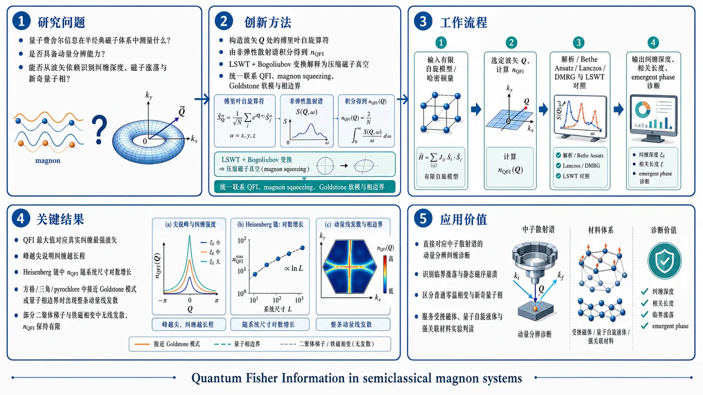
研究问题量子费舍尔信息在半经典磁子体系中到底测量什么？它是否具有动量分辨能力，能否从波矢依赖中直接识别纠缠深度、磁子涨落与新奇量子相的出现？创新方法把 QFI 从全局纠缠下界推进为“动量分辨纠缠探针”：对给定波矢构造自旋算符并由非弹性散射谱积分得到 nQFI；在 LSWT 中进一步用 Bogoliubov 变换把 QFI 解释为压缩磁子真空的强度，从而把 QFI、magnon squeezing、Goldstone 软模和量子相边界连成一套统一判据。工作流程输入有限自旋模型或半经典磁体哈密顿量；选定波矢 Q，定义傅里叶自旋算符并计算 nQFI；先用解析模型、Bethe Ansatz、Lanczos、DMRG 检验有限链中的纠缠深度标度，再在 LSWT 中计算动量分辨的非弹性结构因子和 QFI 谱；比较峰位、峰宽与发散线，输出纠缠深度、相关长度和是否存在 emergent phase 的诊断结论。关键结果QFI 的最大值对应真实纠缠最强的波矢，峰越尖说明纠缠越长程；在 Heisenberg 链中 nQFI 随系统尺寸呈对数型增长而非简单体积律；在方格、三角和 pyrochlore 挫折磁体中，接近 Goldstone 模式或量子相边界时，QFI 会从单点发散扩展为整条动量线发散；但磁场驱动二聚体梯子和某些 pyrochlore 铁磁相变并不会出现这种线发散，nQFI 也保持有限。应用价值提供一种可直接对应中子散射谱的动量分辨纠缠诊断工具，可用于识别临界涨落、判断静态磁序是否崩溃、区分普通零温相变与新奇量子相，并为受挫磁体、量子自旋液体和强关联材料的实验判读提供清晰标尺。第一部分：核心概览
这篇工作把 Quantum Fisher Information (QFI) 从“纠缠下界”推进为一个动量分辨的纠缠探针：在有限自旋系统中，QFI 直接度量波矢对应的集体量子叠加深度；在 LSWT 半经典磁子体系中，QFI 等价于 magnon squeezing 的强度。最关键的结论是：当体系接近 Goldstone 模式 或 emergent quantum phase 时，QFI 会在动量空间出现发散，甚至沿整条波矢线增强；而某些零温相变并不会产生这种发散，从而给出区分“普通相变”与“新奇量子相”的判据。
---
第二部分：结构化快速回顾
《Quantum Fisher Information in semiclassical magnon systems》（None，）
背景：QFI 已被用于固体中的纠缠探测，但其 波矢依赖、半经典含义 与 量子相变关联 仍不清楚。
方法：从有限自旋模型、1D Heisenberg 链，到 LSWT 半经典模型；结合解析公式、Bethe Ansatz、Lanczos、DMRG 与 Sunny 数值计算。
结果：QFI 对应于给定波矢的纠缠深度；在半经典磁子图景中对应 squeezed magnon vacuum；在无能隙 Goldstone 情形和某些挫折体系中沿动量线发散。
讨论：QFI 的峰位、峰宽和系统尺度增长分别编码了纠缠深度、相关长度和热力学稳定性；并可区分 emergent phase 与普通场致相变。
局限：主要针对 T=0、纯态与 LSWT 适用区域；QFI 仍是下界，且结果强依赖于观测算符和波矢选择。
结论：QFI 不只是静态纠缠指标，而是一个动量分辨、可诊断量子临界性与准粒子失效的工具。
---
第三部分：逐章节冷凝解析
I Introduction
QFI 已是体材料纠缠探测的核心工具
- Quantum entanglement 在量子计算、量子传感与凝聚态中均为基础概念，QFI 是目前最稳健的纠缠 witness 之一。原文直述：*"The most robust witness so far is the Quantum Fisher Information (QFI), which provides a lower bound for the entanglement depth."*
- 已有实验覆盖 spin chains、two-leg ladders、heavy-fermion materials、triangular lattice antiferromagnets，但 QFI 在凝聚态中的物理含义仍不直观。
动量依赖是尚未充分解释的关键维度
- QFI 通常从实验或理论谱中直接算出，但“某个 entanglement depth 到底意味着什么”并不清楚。关键缺口是 wavevector dependence。原文指出：*"the wavevector dependence, that have so far not been related to entanglement depth but still carry information related to quantum coherence"*
- 这使得一个核心问题浮现：如何用 QFI 诊断 emergent quantum phases？
研究路线：从简单模型建立解释框架
- 研究设计是先用有限自旋系统理解“叠加深度”，再看 1D 链的有限尺寸标度，最后进入半经典挫折磁体，证明 LSWT 中的 QFI 可由 Bogoliubov transformation 解释为 strongly squeezed ground states。
- 核心判断是：QFI 发散与 quasiparticle breakdown 相关；若出现 emergent phase，则 QFI 会在动量空间多波矢同时增强。原文总结为：*"a momentum-resolved probe of entanglement that offers a novel perspective on quantum critical phenomena."*
---
II Finite-size spin chains
QFI 的定义与散射对应关系
- 对纯态 (|Ψångle)，QFI density 定义为
(fₘₐₜₕcₐₗ Q=frac4N(łangle mathcal O^dagger mathcal Oångle-łangle mathcal Oångle²⁾)。
对磁性体系最关心的算符是
(mathcal Obf Q=S_α(bf Q)=sumⱼ Sⱼ^α eⁱbf Qḑot bf rⱼ)。
- 在 T = 0 下，QFI 可由非弹性磁散射积分表示：*"fQ[bmQ]=4int₀⁺ⁱⁿftydE,Sαα(bmQ,E)"*。
- 归一化量 nQFI 定义为 (fₘₐₜₕcₐₗ Q/(4S²⁾)，并给出纠缠深度下界：若 nQFI > m，至少是 m+1 partite entangled。有限系统里还需满足除数条件；非除数情形用 (s=łfloor N/mf̊loor)、(r=N-sm) 的推广界。
#### II.1 QFI as a measure of collective superposition
自由自旋、铁磁与 GHZ 的对比揭示 QFI 选择性
- 单自旋在 (S^z) 下满足 nQFI ≤ 1。
- 均匀铁磁态 (|p̆arrowp̆arrowp̆arrowḑotsångle) 在 (S^z) 量子化轴上是 product state，因此 nQFI = 0。
- 三自旋 GHZ state (frac1sqrt2(|p̆arrowp̆arrowp̆arrowångle-|downarrowdownarrowdownarrowångle)) 的纠缠深度为 3，且对 (mathcal O=sumⱼ Sⱼ^z) 有 nQFI = 3。
- 任意大小 cat state 中，若算符选对，可达到 nQFI = N。原文表述：*"witness the full entanglement depth nQFI = N"*。
QFI 衡量的不是“基态数目”，而是“宏观差异造成的方差”
- W state (frac1sqrt3(|downarrowdownarrowp̆arrowångle+|downarrowp̆arrowdownarrowångle+|p̆arrowdownarrowdownarrowångle)) 只有在合适算符下才体现纠缠；对 (mathcal O=sumⱼ Sⱼ^z) 时 nQFI = 0，而对 (mathcal O=sumⱼ Sⱼ^x) 可达 7/3，对应纠缠深度 3。
- 关键差别是：QFI 由方差决定，取决于不同基态之间有多少自旋取相反值，以及这些差异是否以集体方式贡献到 (mathcal O) 的涨落。原文点明：*"nQFI is not determined by the number of basis states that enter the superposition, but by how correlations in the superposition state contribute to the variance of mathcal O."*
N = 8 的 Néel cat 序列给出单调增长证据
- Table 2 中固定 (N=8)，构造一系列 Néel cat states，随着两种构型中“取反”的自旋数增加，nQFI[Q=π] 从 0.0、0.125、0.5、1.125、2.0、3.125、4.5、6.125 单调升至 8.0。
- 这组数值直接表明：QFI 追踪的是集体量子涨落的规模，而非简单的叠加项数。
#### II.2 Momentum-dependence of QFI
II.2.1 Maximal nQFI as a bound of entanglement depth
QFI 的最强纠缠下界出现在最大波矢响应处
- 对小尺寸 Ising 链 (N=1,2,4,6)，Hamiltonian 为
(mathcal H=sumᵢ₍Sᵢ^zSᵢ₊₁^z+Δ Sᵢ^xSᵢ₊₁^x))，其中 (0<Δłl1)。
小的 (S^xS^x) 耦合稳定 cat state 基态。
- 由于基态中所有自旋互相纠缠，真实纠缠深度为 N；但只有在 Q = π 时，nQFI 才达到 N。在多个 Q = π/N 的倍数处，nQFI 甚至为零。
- 随 N → ∞，(π) 附近峰越来越尖锐，极限中趋于 delta function。原文写得很直接：*"the peak becomes a delta function"*，对应 AFM Ising 链的 (S(Q,ømega)sim δ(ømega)δ(Q-π))。
- 这意味着：选择错误波矢就会完全看不到真实纠缠。最严格的 entanglement-depth 下界必须在 nQFI 最大的 Q 上取。
II.2.2 Degree of entanglement at multiple periodicities
Heisenberg 链说明 QFI 可在多个周期性上同时非零
- 1D Heisenberg 链的 Bethe Ansatz 解显示：最大 nQFI 仍在 Q = π，与 Néel 相关主导的基态一致；但在 Q = π/2 等其他波矢上仍非零，表示基态中的集体叠加不仅限于单一 (π)-调制。
- 这意味着 QFI 的 Q 依赖性 不是单纯“是否纠缠”的标志，而是揭示了纠缠在不同周期性上的分布。
- 文中强调 cat states 在 Heisenberg 链里会在任意微扰下退相干：*"cat states in the 1D Heisenberg chain decohere upon infinitesimal perturbation"*。这把“单波矢集中的纠缠”与“热力学稳定纠缠态”区分开来。
- 因而，QFI 不只是 entanglement-depth bound，更是collective quantum superposition 的周期分辨图谱。原文总结：*"its Q dependence reveals the degree of collective quantum superposition at various wavevectors."*
II.2.3 Quantum correlation length
QFI 的峰形编码空间相关长度
- 文献 [23] 定义了由 QFI matrix 空间衰减导出的 “quantum correlation length”。
- 在动量空间中，等价表述是 nQFI[Q] 的峰有多尖：
- sharp peak → 长程纠缠；
- broad peak → 短程纠缠，只涉及邻近自旋。
- 这里的核心逻辑是：峰宽 = 量子相关的空间延展性。
#### II.3 Scaling properties of QFI
Heisenberg 极限与热力学稳定性的张力
- QFI 的系统尺度增长依赖基态类型。理论上最大增长率是 Heisenberg limit，对 cat states 可实现 (fbf Qsim N)。
- 温度、噪声、热浴耦合都会压低这一增长。这里聚焦 T = 0 的封闭系统上界。
1D Heisenberg 链的标度是对数型而非幂律体积律
- 利用 Lanczos exact diagonalization 与 DMRG，系统尺寸做到 N = 1024。
- 结果为
(nQFI(Q=π)simłeft[łogłeft(fraccN2i̊ght)i̊ght]³/²)，其中 (c) 为常数。
- 这个增长弱于体积律，更接近临界 1D 系统的 log-scaling。原文指出：*"This scaling ... is reminiscent of the known log-scaling of the entanglement entropy in critical 1D systems"*。
- 相比某些文献预测的幂律，出现对数修正，原因被归结为 Heisenberg 链关联函数中的显著 logarithmic corrections。
- 这一结论的重要性在于：热力学稳定 的高纠缠态未必呈 cat-state 式体积律；QFI 的正增长本身已说明可支持较大纠缠深度，但增长形式区分了稳定临界态与脆弱宏观叠加态。
---
III QFI in semiclassical models
LSWT 并不意味着“无纠缠”
- 半经典磁子模型常被误以为接近经典、因而无纠缠；实际上，quadratic bosonic Hamiltonians 描述的是量子相干准粒子，基态常是非平庸的。原文强调：*"the magnon vacuum is not necessarily trivial"*。
- 尤其是 gapless antiferromagnets，在 LSWT 中可高度纠缠，并导致 QFI divergence。
三类挫折磁体与两类反例构成完整图景
- 研究覆盖：
1) square lattice antiferromagnet；
2) triangular lattice antiferromagnet；
3) anisotropic pyrochlore magnet；
4) 以及两个反例：field-driven quantum dimer ladder 和 pyrochlore ferromagnet in a magnetic field。
- 核心区分标准是：是否存在“静态磁序崩溃的扩展区域”，也就是 emergent quantum phase。
#### III.1 Square lattice
J1–J2 方格反铁磁的经典与量子相边界
- Hamiltonian:
(mathcal H=J₁sumłₐₙgₗₑ ᵢ,ⱼåₙgₗₑmathbf Sᵢḑot mathbf Sⱼ₊J₂sumłₐₙgₗₑłₐₙgₗₑ ᵢ,ⱼåₙgₗₑåₙgₗₑmathbf Sᵢḑot mathbf Sⱼ₊κsumᵢ₍Sᵢ^z)²)。
- 在 (J₁>0, J₂>0, κ=0) 下，经典相图在
(δ:=J₂/J₁₌₁/2)
处分界：
- (δ<1/2)：((1/2,1/2)) order；
- (δ>1/2)：((1/2,0)) order。
- 量子极限中，这一边界扩展为一个无静态磁序的量子相，是否是 spin liquid 或 valence bond solid 仍有争议。
LSWT 预测：接近临界点时，QFI 沿整条动量路径发散
- 采用 LSWT 计算 (Syy(mathbf Q,ømega)) 及其能量积分 (Syyᵢₙₑₗ(mathbf Q))。
- 当 (δ=0) 时，谱权集中在 ((1/2,1/2))；当 (J₂) 主导时，强度移到 ((0,1/2))。
- 接近 (δ=1/2) 时，整条动量路径上的谱权都增强，并在 (J₁₌₂J₂) 处发散到无穷。原文写作：*"This S(Q,ømega)sim 1/ømega intensity divergence is a well-known feature of gapless antiferromagnets"*。
- 由式 (2)，QFI 与 entanglement depth 也同步发散。
发散的本质是 Bogoliubov 旋转失稳
- LSWT 的对角化依赖 Bogoliubov transform，在 Néel 基底非对角时需要做超曲率旋转。Goldstone 模式无能隙时，变换角趋于发散，等价于 squeezed magnon vacuum 的纠缠深度爆炸。
- 加小能隙会把严格发散变成有限值，但数值仍可轻易达到“数千”的纠缠深度。
- 重要区分：这里的发散既表示高纠缠，也提示 non-interacting magnon approximation 的失效。
- 在 LSWT 视角下，若某个量子相将要出现，QFI 会在 连续波矢区间 同时抬升。原文把它概括为：*"a harbinger of emergent quantum phases"*。
#### III.2 Frustrated lattices
三角晶格与 pyrochlore 都出现“线发散”
- Triangular lattice：
(δ=J₂/J₁₌₁/8) 为经典相边界，分隔
- (120ⁱ̧rc) AFM，波矢 (mathbf k=(1/3,1/3))（K 点）；
- stripe order，波矢 (mathbf k=(0,1/2))（M 点）。
量子极限下，这一边界扩展为 spin liquid。
- Pyrochlore：
使用交换矩阵
(mathsf J=beginpmatrixJ₂&J₄&J₄-J₄&J₁&J₃-J₄&J₃&J₁endpmatrix)，并设 (J₄₌₀, J₂₌₀, J₃₌₋₁)，调节 (δ=J₁/|J₃|)。
经典上 (δ) 使体系从 canted ferromagnet 过渡到 (Γ₅) order，边界在 (J₁₌₀)；量子极限则出现扩展无序相。
- 两个模型都用 Sunny 计算 LSWT 谱。
共同规律：量子相边界附近的平坦零能磁子导致线状 QFI 发散
- 在有序相中，QFI 在 gapless Goldstone mode 处发散；接近量子相边界时，这种发散扩展为一整条 reciprocal-space line。
- 这种现象还出现在 2D square lattice、2D triangular lattice、3D pyrochlore lattice、2D honeycomb Kitaev model 中。原文明确指出：*"we find this effect in every example that we considered where a putative emergent quantum phase appears."*
- 这把“线发散”作为 emergent quantum phase 的一个强特征。
#### III.3 Quantum phase transitions without diverging QFI
不是所有零温相变都会出现线发散
- 两个反例证明：zero-temperature phase transition 并不自动对应 line-diverging nQFI。
#### III.3.1 Field-driven quantum dimer ladder
磁场驱动的量子二聚体梯子是反例
- 模型为 spin-1/2 Heisenberg ladder，四方对称性，磁场沿 [001]，参数取
(J₁₌₁), (J₂₌₀.12), (J₃₌₀.1)。
- 半经典相图显示三相：
- (B<7.37,mathrm T)：singlet phase；
- 中间区：triplet phase；
- (B>11.5,mathrm T)：field-polarized state。
- 采用 entangled units formalism，把双自旋单元作为量子态 (|Ψångleₘₐₜₕbf S_₁,ₘₐₜₕbf S_₂) 处理。
- (Sᵢₙₑₗ(mathbf Q)) 在 singlet 相非均匀但有限；triplet 相在 X 点发散；polarized 相在动量空间几乎均匀。
- nQFI 在低场 singlet 区 超过 1，对应二体纠缠；triplet 相在 Y 点发散；polarized 相 小于 1，对应平凡纠缠深度。
- 关键否定结论：没有任何地方出现沿整条动量线的 nQFI 发散，也没有扩展 emergent phase。
#### III.3.2 Pyrochlore lattice under field
场致 pyrochlore 铁磁也是反例
- 模型对应实验相关材料 Yb(₂)Ti(₂)O(₇)，磁场沿 [111]。
- 参数：(J₁₌₋₁), (J₃₌₋₁), (J₂₌₀), (J₄₌₀)；临界场 (H_c=82,mathrm T)。
- 低场为 canted ferromagnetic texture，高场为 polarized state。
- 计算得到的 (Sᵢₙₑₗ(mathbf Q)) 在动量空间几乎平坦。
- 整个场区间内 nQFI < 1，只说明至多是平凡纠缠深度。
- 原因有两层：
1) 该边界对应的是 quadratic magnon band touching zero energy，不是线性 Goldstone 模式，因此没有 (1/ømega) 发散；
2) 该相变更像 first-order，不支持 QFI 的正标度增长。
- 因而，这里明确区分了“有零温转变”与“有线发散 QFI”的不同。
---
第四部分：深度理解与语言支持
1. 术语解析
1) entanglement depth
- 含义：至少有多少个粒子必须共同纠缠，才能解释观测到的量子涨落。
- 微妙差别：它不是“总纠缠量”，而是“最小纠缠团簇规模”。nQFI > m 只给出 m+1 partite entanglement 的下界，不等于精确值。
2) normalized QFI (nQFI)
- 含义：把 QFI 除以 (4S²) 后得到的无量纲量，便于在不同自旋长度之间比较。
- 微妙差别：nQFI 不是普适常数，而是对算符 (mathcal Obf Q) 和波矢 (bf Q) 强依赖；“同一态”换个 (bf Q) 会得到完全不同的纠缠 witness。
3) magnon squeezing
- 含义：通过 Bogoliubov transformation 把非对角的磁子基态重写为一种“压缩真空态”。
- 微妙差别：这里的 squeezing 不是量子光学里的表面类比，而是具体地对应 反铁磁基态中涨落被超曲率混合。QFI 发散时，squeezing 也随之增强。
4) Goldstone mode
- 含义：自发对称性破缺后出现的无能隙集体模。
- 微妙差别：在这里，Goldstone mode 的意义不是抽象对称性结果，而是直接决定 (S(mathbf Q,ømega)sim 1/ømega) 的低能奇异性，从而触发 QFI 发散。
5) emergent quantum phase
- 含义：在经典相图里不存在、但在量子极限下由涨落诱导出来的新相。
- 微妙差别：它不是简单的“相边界附近的过渡区”，而是一个独立的量子相区域，通常伴随静态磁序崩溃。QFI 在这里沿整条动量线增强，是重要前兆。
2. 疑难查证：两个最容易误解的概念
为什么 LSWT 里会出现“纠缠深度发散”？
- 表面上看，LSWT 是“半经典近似”，似乎应该更接近经典、纠缠更少。实际上，LSWT 的真空态不是简单的自旋直积态，而是经过 Bogoliubov 变换后的 squeezed vacuum。
- 当系统有 gapless Goldstone mode 时，变换参数会变得极大，导致准粒子基底和 Néel 基底之间的混合无限增强。QFI 正好测的是这种混合所对应的方差，所以会发散。
- 这类发散并不意味着真实材料里真的“无限纠缠”，而是说明：
1) LSWT 已逼近失效边缘；
2) 低能物理具有极强的集体量子性；
3) 量子相边界可能就在附近。
为什么有的相变会发散，有的不会？
- 关键不是“是否有相变”，而是“低能模是否是线性 Goldstone 模式，且是否形成连续动量线的软化”。
- 方格与三角/pyrochlore 的关键例子都满足：接近量子临界区域时，软模沿一整条动量线展开，于是 (S(mathbf Q,ømega)) 和 QFI 都沿线抬升。
- 二聚体梯子和场致 pyrochlore 反例则不同：软化更局域，甚至是 quadratic band touching 或近似一阶转变，因此不会出现线性 (1/ømega) 奇异性，也就没有线发散的 QFI。
---
第五部分：创新评估与关联
1. 创新性判断
相较于近 2–5 年相关工作的新意，主要体现在三点：
- 把 QFI 从“全局纠缠下界”提升为“动量分辨纠缠谱”
过去常把 QFI 视作静态、全局的 entanglement witness；这里把它明确解释成 at a given wave vector 的纠缠深度，并强调峰位、峰宽和多峰结构的物理含义。
- 把 LSWT 中的 QFI 直接解释为 magnon squeezing
这一点非常关键：半经典磁子体系并不必然“经典”，QFI 的发散可被 Bogoliubov 旋转和 squeezed magnon vacuum 精确理解。这把纠缠、准粒子失效和低能奇异性连成同一张图景。
- 提出“线发散 QFI”作为 emergent quantum phase 的前兆
过去的工作多停留在“QFI 很大说明纠缠强”；这里进一步指出：
- 单点发散 可对应普通 Goldstone 软模；
- 整条动量线发散 则强烈提示 static magnetic order breakdown 和 emergent phase。
这比单纯的纠缠 witness 更接近一个相图诊断工具。
2. 解决了前人没解决的问题
- 解决了 QFI 在凝聚态里如何解释 的问题：不是抽象数值，而是与 collective superposition、correlation length、magnon squeezing 一一对应。
- 解决了 为什么某些半经典体系也会有巨大 QFI 的困惑：因为 LSWT 真空本身就可高度纠缠。
- 解决了 如何用 QFI 区分普通零温相变与 emergent phase 的问题：是否出现沿动量线的发散，是一个有效判据。
- 还补上了一个重要“负结果”：并非所有零温相变都给出线发散，因此该判据不是空泛的普适套话，而是有边界条件的。
如果需要，还可以继续把这篇论文整理成：
- 一页式讲义版，
- 适合组会汇报的 PPT 逻辑框架，或
- 公式—物理意义对照表。
-
16
📊 含图深析
📄 摘要：提出 iPANN 与 fPANN，用于不确定性下的超弹性本构建模。iPANN 学习稀疏的下界、均值和上界自由能密度分支，并通过自动微分得到应力以包络含噪观测；fPANN 用模糊表示传播稀疏、噪声或异质应力-变形数据中的不确定性，服务可靠力学模拟。
💡 亮点：iPANN/fPANN 把区间和模糊不确定性嵌入自由能神经本构，并用自动微分生成应力。该框架适合数据稀疏、噪声显著的材料力学模型校准。
📖 展开分析 + 配图
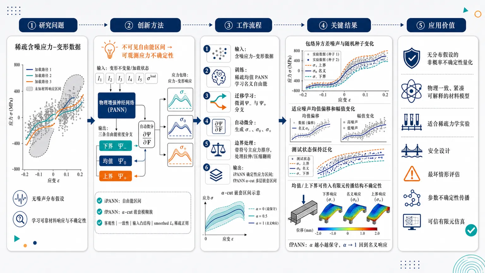
研究问题在超弹性本构建模中，如何从稀疏、含噪、异质的应力–变形数据中学习可靠材料响应，并在不假设噪声概率分布的情况下量化和传播偶然不确定性；画面可表现为散乱带噪应力点、稀疏加载路径与未知材料响应区间之间的缺口。创新方法提出 iPANN 与 fPANN：不是直接拟合应力上下界，而是学习自由能密度的下界、均值、上界三条物理分支，再通过自动微分生成应力包络；fPANN 进一步用 α-cut 将三条分支转化为嵌套模糊响应族。网络嵌入客观性、一致性、输入凸结构以促进多凸性，并用 smoothed L0 稀疏正则化得到更紧凑、可解释的能量表达。Aha 点是“用不可见的自由能区间控制可观测的应力不确定性”。工作流程输入含噪应力–变形数据；先训练稀疏均值 PANN 学习名义自由能；再通过迁移学习微调出下界与上界自由能分支；对三条自由能分支自动微分得到下界、均值、上界应力曲线，并用带符号主应力排序处理拉伸/压缩中的边界翻转；最后由 iPANN 输出确定性应力区间，由 fPANN 通过 α-cut 插值得到从保守外包络到名义响应的多层嵌套模糊区间，并可送入有限元模拟传播结构响应不确定性。关键结果在合成各向同性超弹性数据上，iPANN 学到的上下界应力能够包络异方差噪声、不同随机种子、噪声均值偏移和噪声幅值变化下的观测点，并在测试状态上保持泛化；均值、上界、下界预测还能传入有限元设置，形成结构响应的上下包络。fPANN 提供随 α 水平收缩的响应族，使 α 接近 0 时覆盖极端不确定性，α 接近 1 时回到名义响应。应用价值为材料建模和有限元工程仿真提供一种无分布假设、物理一致、可解释的非概率不确定性量化工具，适合概率分布难以可靠估计的稀疏力学实验；可用于安全设计、最坏情形评估、材料参数不确定性传播和可信结构响应预测。第一部分：核心概览 (Overview)
该研究提出 iPANN 与 fPANN，把区间分析、模糊集 α-cut、物理增强神经网络、输入凸网络和稀疏正则化结合，用于含噪稀疏应力–变形数据下的超弹性本构不确定性量化与传播。核心贡献在于：直接学习自由能密度的下界、均值、上界分支，通过自动微分获得应力包络，并进一步构造嵌套模糊响应族。该框架面向无分布假设的 aleatoric uncertainty，可嵌入有限元模拟，处于物理约束机器学习与非概率不确定性量化交叉前沿。
---
第二部分：结构化快速回顾
《Interval and fuzzy physics-augmented neural networks (iPANN and fPANN) for uncertainty quantification and propagation in constitutive modeling》（None，）
背景
超弹性本构建模常受限于应力–变形数据稀疏、噪声、异质性，传统现象学建模依赖人工设定 ansatz 与参数校准，难以自动化。概率式不确定性方法通常需要分布假设，而力学实验中数据稀疏使分布难以可靠估计。
方法
提出 interval physics-augmented neural networks (iPANNs) 与 fuzzy physics-augmented neural networks (fPANNs)。iPANN 学习下界、均值、上界自由能密度分支，通过自动微分获得应力并包络观测噪声；fPANN 通过 α-cut interpolation 将 iPANN 三个分支嵌入模糊集表示。网络编码客观性、一致性、多凸性倾向，并用 smoothed L0 regularization 获得稀疏可解释能量形式。
结果
合成各向同性超弹性数据实验显示，学习到的上下界能够包络含噪应力观测，并能泛化到测试集。框架还把 iPANN 的均值、上界、下界预测传播到有限元设置中，用于下游结构响应不确定性传播。
讨论
iPANN 提供确定性区间包络，适合关注最坏情形或确定性 admissible bounds 的工程场景；fPANN 提供会员度分级的响应族，使 α 水平可调，从而在极端保守区间与名义响应之间取得折中。
局限
可见内容中的数值实验主要围绕合成各向同性超弹性数据，尚未呈现真实实验数据、大规模三维复杂路径、强各向异性、历史依赖材料或塑性/黏弹性材料验证。可见内容未给出样本量、网络宽度、训练轮数、误差统计或显著性检验数值。
结论
iPANN/fPANN 提供一种紧凑、物理一致、无分布假设的aleatoric uncertainty quantification路线，可从含噪应力–变形数据学习本构响应区间，并向有限元模拟传播不确定性。
---
第三部分：逐章节冷凝解析 (Section-by-Section Condensing)
Abstract
Uncertainty-aware constitutive modeling is the central target
超弹性本构建模的核心难点被界定为：在稀疏、含噪、异质应力–变形数据下获得可靠力学模拟。摘要开篇直接给出问题边界：*"Constitutive modeling under uncertainty remains a central challenge for reliable mechanics simulations, particularly when the available stress–deformation data are sparse, noisy, or heterogeneous."* 这里的 uncertainty 主要指材料响应观测中的数据不确定性，而不是单纯参数置信区间。
iPANN learns three energy branches rather than only stress intervals
iPANN 的关键结构不是直接拟合应力下界/上界，而是学习自由能密度的下界、均值、上界三个分支，再通过自动微分得到应力。摘要明确表述为：*"iPANNs learn sparse lower, mean, and upper free energy density branches whose stresses, obtained by automatic differentiation, ultimately enclose noisy stress observations."* 这一点保留了超弹性中 stress = derivative of energy 的物理结构。
fPANN converts deterministic intervals into fuzzy admissible responses
fPANN 在 iPANN 的三个分支基础上，通过 α-cut interpolation 构造嵌套响应族。摘要中的关键句为：*"fPANNs embed the learned iPANN branches into a fuzzy-set representation through α-cut interpolation, yielding a nested family of admissible responses."* 因此，fPANN 不只是一个更宽的区间模型，而是一个带 membership level 的多层不确定性结构。
Mechanistic constraints are built into the network representation
模型显式编码超弹性所需的结构性约束，包括客观性 objectivity、一致性 consistency、以及促进 polyconvexity。摘要写明：*"iPANNs and fPANNs encode mechanistic constraints –preserving objectivity, consistency and promoting polyconvexity–"*。这使其区别于普通神经网络拟合 stress–strain map 的黑箱方法。
Smoothed L0 regularization targets interpretability
框架使用 smoothed L0 regularization 获得稀疏能量表达，摘要给出目的：*"smoothed L0 regularization promotes interpretable energy representations."* 其学术动机在于，本构模型不仅要预测准确，还需要便于理解、审查、嵌入有限元和工程使用。
Two-stage transfer learning separates mean learning and bound learning
训练流程采用两阶段迁移学习：先学习稀疏均值本构响应，再微调为上下界能量分支。摘要中直接说明：*"The bound models are trained through a two-stage transfer-learning procedure in which a sparse mean constitutive response is learned first and then fine-tuned into lower and upper energy branches."* 这降低了上下界分支从零训练的不稳定性。
Evaluation uses synthetic isotropic hyperelastic data with multiple noise perturbations
实验对象是合成各向同性超弹性数据，噪声设置包括异方差噪声、随机种子变化、噪声均值偏移、噪声幅值变化。摘要写道：*"We evaluate the framework on synthetic isotropic hyperelastic data with heteroscedastic noise, varying random realizations, shifted noise means, and varying noise magnitudes."* 可见摘要未给出样本量 n、噪声参数具体数值或误差指标。
Finite element uncertainty propagation is included
除点态本构学习外，框架还进行有限元不确定性传播。摘要中明确：*"we examine the propagation of uncertainty through the mean, upper and lower bound predictions of the learned iPANN models in a finite element setting."* 因此贡献覆盖从材料点本构学习到下游有限元响应传播。
Distribution-free aleatoric UQ is the claimed contribution
该框架的定位是无分布假设的偶然不确定性量化。摘要结论为：*"The proposed framework provides a compact, physics-consistent route for distribution-free aleatoric uncertainty quantification in hyperelastic constitutive modeling, and propagation in downstream finite element simulations."* 这里的 distribution-free 表明其不依赖显式概率分布、似然函数或贝叶斯后验。
---
1 Introduction
Constitutive laws link kinematics to material response but remain a bottleneck
本构律被定位为连接运动学与材料响应的核心环节，但其开发、参数校准和不确定性量化仍是长期瓶颈。原文表述为：*"Constitutive laws have been one of the most important areas of research in mechanics since they form the link between the kinematics and the response of the material to an applied load; however, developing new constitutive laws, calibrating their parameters, and quantifying the uncertainty of the data and the developed models has been a persistent bottleneck."*
Phenomenological modeling relies on ansatz selection and user judgment
传统现象学本构建模基于实验观察和物理要求提出 ansatz，再选择参数与模型形式表征材料响应。原文写道：*"Traditionally, constitutive laws have been developed using phenomenological approach where one poses an ansatz based on experimental observations and physical requirements."* 这一路径被称为力学中的数据驱动原型：*"Phenomenological modeling is the archetype of data-driven modeling in mechanics."*
Mechanical testing provides many points along few high-dimensional paths
传统试验虽然一条加载曲线可含许多数据点，但在高维应变/应变率空间中只覆盖有限状态，例如单轴、双轴、静水压、简单剪切。原文指出：*"macroscopically homogeneous deformations are only accessible for a limited set of load cases (uniaxial, biaxial, hydrostatic, simple shear, etc.)"*，并强调：*"An individual loading curve might have many of data points, but in strain or strain-rate space, which are inherently high-dimensional, only a few states are accessible."*
Continuum mechanics historically bridges sparse observations and generalizable laws
连续介质力学的传统价值在于，用物理结构弥合稀疏实验观测与复杂加载泛化之间的差距。原文写道：*"The field of continuum mechanics traditionally enabled closing the gap between limited experimental observations ... and constitutive laws that proficiently generalize to complex loading conditions."* 这一思想与机器学习中的 implicit bias 形成类比：*"This approach is similar to current trends in improving machine learning (ML) approaches under sparse observations utilizing implicit biases."*
Full-field measurement technologies create richer heterogeneous datasets
DIC、DVC、X-ray CT、X-ray diffraction 等成像技术使异质变形场可被观测。原文列举：*"digital image correlation (DIC), digital volume correlation, X-ray computed tomography, and X-ray diffraction"*，并说明这些技术提供：*"richer information for mechanical testing and more complex datasets."*
FEMU and VFM dominate calibration with heterogeneous fields
在复杂异质变形加载中，finite element method updating (FEMU) 和 virtual fields method (VFM) 是主要参数校准方法。原文表述为：*"Finite element method updating (FEMU) and the virtual fields method (VFM) have been the major approaches for parameter calibration in this context."*
Phenomenological modeling remains heavily user-controlled
现象学建模在工程实践中仍然高度依赖人为迭代。原文指出：*"the paradigm of phenomenological modeling often remains a bottleneck in engineering practice, as constitutive modeling remains a heavily user-controlled iterative process without tools for automation."* 这为自动化、物理增强机器学习本构模型提供动机。
Data-driven constitutive modeling splits into model-free and ML-based approaches
数据驱动本构建模分为两类：model-free approaches 和 ML-based approaches。原文写道：*"Data-driven constitutive modeling approaches can be broadly classified into two categories: machine learning (ML)-based and model-free approaches."* 前者直接把材料观测嵌入控制方程求解，*"The dataset is itself a part of the solution for model-free approaches"*；后者学习输入–输出映射，如应变到应力。
Neural networks provide universal approximation but risk overfitting and low interpretability
神经网络用于学习高非线性本构映射，优势来自 universal approximation，但大量参数带来过拟合和可解释性问题。原文写道：*"NNs fit even highly non-linear maps, but this often comes with a large number of parameters, which can cause overfitting and limit interpretability."*
Interpretability can be improved through symbolic and sparse regression
可解释性提升常用 symbolic regression 和 sparse regression。原文指出：*"A common approach for enabling interpretability in data-driven learning is through symbolic regression and sparse regression."* 本研究后续采用的 smoothed L0 sparsification 与这一方向一致，但作用于物理增强神经网络参数。
Physical priors can be soft constraints or architectural constraints
物理先验可以通过 PINNs 中的 PDE residual 作为软约束，也可以通过 ICNN 等架构硬约束实现。原文写道：*"Physical priors can be encoded as soft constraints, as in the case of physics-informed neural networks (PINNs), where a PDE residual is evaluated in the loss, or by choosing an architecture that strongly enforces a physical constraint such as in the case of input convex neural networks (ICNNs)."*
PANN denotes neural constitutive models with mechanistic priors
在本构建模语境中，嵌入物理或机理先验的神经网络常被称为 physics-augmented neural networks (PANNs)。原文表述为：*"Analogous embedding of physical or mechanistic priors in neural networks used for constitutive modeling is commonly termed as physics-augmented neural networks (PANNs)."*
Existing PANNs enforce objectivity, anisotropic symmetry, polyconvexity, monotonicity, and inelastic constraints
已有本构学习工作覆盖多个约束方向：objectivity、各向异性对称类、polyconvexity、monotonicity、弹塑性与非弹性机理约束。原文列举：*"ensuring objectivity and enforcing symmetry classes for anisotropy, polyconvexity and monotonicity in the context of hyperelasticity, as well as: enforcing mechanistic constraints for elastoplasticity and inelasticity more broadly."*
Mechanistic constraints are distinguished from physical constraints
机理约束被定义为材料系统特定知识，而非直接物理定律。脚注给出精确定义：*"We refer to mechanistic constraints as a separate class, as opposed to physical constraints, as they encode specific knowledge for the materials system rather than enforcing physical laws directly."*
EUCLID learns interpretable hyperelastic laws without labeled stresses
EUCLID 可在 virtual fields 框架中仅用全场位移与全局力数据学习各向同性超弹性本构律，无需标注应力。原文说明：*"EUCLID showed that isotropic hyperelastic constitutive laws can be developed using unsupervised learning within a virtual fields framework using only full-field displacements and global force data quantities readily obtained from DIC and standard mechanical testing, without labeled stress observations."* 它通过平衡方程和候选能量项稀疏组合恢复紧凑模型：*"the method recovers compact, interpretable model forms rather than black-box surrogates."*
Deterministic point predictions are insufficient for safe engineering deployment
安全可信工程应用需要不确定性量化，确定性神经网络点预测不够。原文直接指出：*"For safe and trustworthy implementations in engineering applications and downstream simulations, deterministic point predictions from NNs are not sufficient and uncertainty quantification is required."*
Aleatoric and epistemic uncertainty have distinct sources
Epistemic uncertainty 来自知识不足，常见于模型形式误差；aleatoric uncertainty 是数据分布内在不可约噪声。原文定义为：*"Epistemic uncertainty arises due to inadequate knowledge, common in model form error. Aleatoric uncertainty is innate to the data distribution, is irreducible, and commonly emanates from the presence of noise."*
Bayesian neural networks mainly quantify epistemic uncertainty but require approximate inference
BNNs 给权重和偏置赋予先验并更新为后验，预测时对参数后验边缘化。原文表述为：*"BNNs follow a Bayesian formulation where prior distributions are assigned to the network weights and biases, and training updates these priors into posterior distributions conditioned on the observed data."* 其适合 epistemic uncertainty：*"This framework is especially useful for quantifying epistemic uncertainty"*。但深度网络精确贝叶斯推断通常不可行：*"exact Bayesian inference in deep neural networks is generally intractable due to the number of parameters."*
Recent constitutive UQ emphasizes Bayesian, hierarchical, and conformal quantile methods
相关工作包括 UQ-VAEs、hierarchical Bayesian recurrent networks、conformalized quantile regression。原文对 UQ-VAE 的描述为：*"approximate the posterior mean and covariance of model parameters from noisy observational data"*；对历史依赖响应的描述为：*"jointly estimating mean predictions, epistemic model uncertainty, and aleatoric noise through hierarchical Bayesian recurrent networks"*；对 conformal quantile 方法的描述为：*"a distribution-free probabilistic framework for physics-constrained anisotropic constitutive models based on conformalized quantile regression over tensor-valued stress fields."*
Interval and fuzzy formulations provide deterministic enclosures rather than conditional distributions
与 quantile-based probabilistic intervals 不同，区间和模糊集方法关注 admissible response bounds。原文精确区分：*"Unlike quantile-based probabilistic intervals, interval- and fuzzy-set formulations provide deterministic enclosures on admissible constitutive response and are particularly suited when bounds, rather than conditional distributions, are the quantity of interest."*
Non-probabilistic uncertainty is attractive when probability distributions are hard to obtain
概率方法通常需要基础分布信息，但力学中数据稀疏使其难以获取。原文指出：*"Other probabilistic approaches generally require knowledge about the underlying probability distribution that is not always easy to obtain in mechanics applications due to data sparsity."* 因此，*"non-probabilistic approaches like interval analysis and fuzzy-set theory remain an alternative to Bayesian approaches."*
Interval finite elements and fuzzy finite elements provide historical precedent
区间有限元可在概率输入难以验证时为结构响应提供包络。原文写道：*"Ref. [14] formulated an interval finite element method for structures with bounded uncertain parameters ... to obtain enclosures on structural responses when probabilistic input descriptions are difficult to validate from limited data."* 模糊结构分析则通过 α-level optimization 将模糊输入化为 crisp feasible sets：*"at each membership level, fuzzy inputs are reduced to crisp feasible sets, and extrema of the structural response are obtained by optimization."*
Fuzzy neural networks and polymorphic PANNs motivate the present framework
早期模糊神经网络通过 α-cuts 学习 fuzzy time series 到 fuzzy outputs。原文写道：*"By discretizing membership functions through α-cuts and training networks to map deterministic or fuzzy inputs onto fuzzy outputs..."* 更近的 polymorphic UQ hyperelastic PANN 将不确定 mesoscale descriptors 作为输入：*"uncertain mesoscale descriptors enter as additional inputs to a hyperelastic PANN surrogate of representative volume element response."*
The proposed iPANN/fPANN framework targets noisy isotropic hyperelastic stress–deformation data
核心方案是从含噪应力–变形数据进行各向同性超弹性不确定性量化。原文明确写道：*"we propose a framework for uncertainty quantification on isotropic hyperelastic constitutive responses from noisy stress-deformation data."*
iPANN extends sparse input-convex PANNs to lower, mean, and upper energy branches
iPANN 学习独立的下界、均值、上界自由能密度分支，并用 bound-aware losses 验证应力观测包络。原文表述为：*"iPANNs ... learn separate lower, mean, and upper free energy density branches together with bound-aware losses that certify stress enclosures of the observables."*
fPANN provides graded membership-based uncertainty with less conservative intermediate α levels
fPANN 基于 iPANN endpoints，通过凸 α-cut 构造响应。原文写道：*"fPANNs ... interpolate the three learned branches through convex α-cut constructions."* 与 iPANN 区分在于：*"Whereas iPANNs provide a deterministic interval model anchored at the extreme lower and upper bounds, fPANNs furnish a graded, membership-based description that allows less conservative enclosures when a practitioner specifies an intermediate α."*
The experiments perturb noise seed, mean, and standard deviation
评估数据包含乘性异方差噪声 baseline，并在其上改变噪声随机种子、均值和标准差。原文写道：*"synthetic stress–deformation data corrupted by multiplicative heteroscedastic noise as a baseline case and controlled perturbations of the noise seed, mean, and standard deviation."* 可见引言未给出具体样本量、噪声均值、标准差或统计显著性。
---
2 Preliminaries
The preliminaries combine non-probabilistic uncertainty, hyperelasticity, and interval stress-energy consistency
理论准备包括 interval analysis、fuzzy set theory and α-cuts、hyperelastic constitutive modeling、以及 interval concepts in hyperelasticity。引言中的章节安排说明为：*"Section 2 introduces the theoretical and computational preliminaries required for the proposed framework, including interval analysis, fuzzy set theory and α-cuts, hyperelastic constitutive modeling, and interval concepts in hyperelasticity."*
---
2.1 Interval analysis
An interval is a closed set defined by lower and upper bounds
区间变量定义为上下界闭区间：(x=[n̆derlinex,øverlinex])，且 (n̆derlinexłeqøverlinex)。原文公式与解释为：*"An interval (x) is defined by its lower and upper bounds, (x=[n̆derlinex,øverlinex],qquadn̆derlinexłeqøverlinex), and represents the set of all real numbers (x) such that (xin[n̆derlinex,øverlinex])."* 这是后续应力和自由能包络的数学基础。
Interval addition adds endpoints componentwise
两个区间 (x=[n̆derlinex,øverlinex])、(y=[n̆derliney,øverliney]) 的和为 ([n̆derlinex+n̆derliney,øverlinex+øverliney])。原文给出：*"interval addition is defined as (x+y=[n̆derlinex+n̆derliney,;øverlinex+øverliney])."*
Scalar multiplication flips endpoints for negative scalars
标量 (α) 乘区间时，若 (αge 0)，端点顺序不变；若 (α<0)，端点翻转。原文公式为：*"(αx=begincases[αn̆derlinex,;αøverlinex],&α≥ 0,[αøverlinex,;αn̆derlinex],&α<0.endcases)"* 这一端点翻转思想后来出现在压缩应变下的应力上下界翻转。
Monotone activations allow endpoint interval propagation through neural layers
对于严格递增函数 (g)，其区间扩展可通过端点求值得到。原文写道：*"if a function (g) is a strictly increasing function, then its interval extension can be obtained by evaluating (g) at the interval endpoints."* 标量神经元层写作 (y=g(wx+b))，原文给出：*"one can construct the output from a neural network layer using (y=g(wx+b)) for a scalar neuron with weight (w), bias (b), and activation function (g)."*
---
2.2 Fuzzy set theory and α-cuts
Fuzzy sets replace binary membership with graded membership
模糊集将“属于/不属于”的二值集合概念推广为 ([0,1]) 中的 membership degree。原文写道：*"Fuzzy set theory provides a further generalization of interval analysis by relaxing the binary notion of set membership."* 成员函数定义为：*"(μ:X→[0,1],qquad xmapstoμ(x))."*
Membership values 1 and 0 denote full and no membership
(μ(x)=1) 表示完全属于，(μ(x)=0) 表示不属于。原文说明：*"When (μ(x)=1), the element (x) has full membership in the fuzzy set, whereas (μ(x)=0) indicates no membership."*
Fuzzy sets are well suited for linguistic uncertainty
模糊集特别适用于 only qualitative statements，例如 “likely”、“typical”、“extreme”。原文写道：*"This framework is well suited to describing ‘informal’ or linguistic uncertainty, for which only qualitative statements such as ‘likely’, ‘typical’, or ‘extreme’ are available."*
α-cuts connect fuzzy sets to intervals
给定 (αin(0,1])，α-cut 定义为 membership 至少为 α 的元素集合：*"For a given level (αin(0,1]), the (α)-cut of the fuzzy set ((X,μ)) is defined as (Xfα=xin Xmidμ(x)≥α)."* 这使模糊集可被一族区间表示。
Convex fuzzy sets yield closed interval α-cuts
若模糊集凸，则每个 α-cut 是闭区间 ([X_L^α,X_U^α])。原文给出：*"If the fuzzy set is convex, each (α)-cut reduces to a closed interval (Xfα=[XLα,XUα])."*
A fuzzy set can be reconstructed from nested intervals
完整模糊集可由所有 α 水平的嵌套区间重建。原文写道：*"The full fuzzy set can be reconstructed from a nested family of intervals ([XLα,XUα]quadforall,αin(0,1])."*
Triangular membership functions distinguish nominal and extreme states
三角 membership function 常以 (α=1) 表示最可能/名义状态，以 (α→ 0⁺) 覆盖完整不确定性范围。原文表述为：*"A common choice is a triangular membership function whose peak ((α=1)) corresponds to the most likely (or nominal) state and whose base ((α→ 0⁺)) spans the full range of admissible uncertainty."*
---
2.3 Preliminaries for Hyperelasticity
The deformation gradient maps reference line elements to current line elements
参考构型 (Ømega₀) 中材料点 (X) 映射到当前构型 (Ømega) 中 (x)，变形梯度定义为 (F(X)=partialx/partialX)。原文写道：*"The deformation gradient tensor is then defined as (F(X)=partialx/partialX), which locally characterizes the mapping of material line elements from the reference configuration to their deformed counterparts in the current configuration."*
Hyperelastic response derives stress from Helmholtz free energy
超弹性材料具有单位参考体积的 Helmholtz 自由能密度 (Ψ)。若 (Ψ=Ψ(F))，一阶 Piola–Kirchhoff 应力由能量对 (F) 的导数给出：*"The associated response function of a hyperelastic material is of the form: (P=fracpartialΨpartialF), where (P) denotes the first Piola–Kirchhoff stress tensor."*
Free energy must vanish at reference state and be nonnegative
自由能常见约束包括参考构型能量为零、变形后非负。原文列出：*"(Ψ) is a continuous function of (F) that vanishes in the reference configuration, (Ψ(I)=0) and increases with deformation, (Ψ(F)≥ 0)."*
Growth conditions prevent collapse or infinite expansion without energy blow-up
自由能需满足 det((F)→ 0⁺) 或 det((F)→infty) 时 (Ψ(F)→infty)。原文表述为：*"satisfies the growth conditions i.e. (Ψ(F)→infty) as (det(F)→ 0⁺) or (det(F)→infty)."*
Objectivity enforces invariance under superposed rigid rotations
客观性要求 (Ψ(F)=Ψ(QF))，对所有 proper orthogonal tensor (Qin Orth⁺) 成立。原文写道：*"(Ψ(F)), as generated by the motion (x=ḩi(X,t)) is objective (Ψ(F)=Ψ(QF)quadforallQinOrth⁺)."*
Isotropic hyperelasticity reduces energy dependence to invariants of C
各向同性情况下，客观性结合极分解可将能量表示为右 Cauchy–Green 张量 (C=F^TF) 的不变量函数。原文写道：*"If the material is isotropic, one can combine objectivity with polar decomposition to show that the scalar-valued isotropic tensor function (Ψ) is invariant with the right Cauchy-Green tensor (C=FTF)."* 并通过表示定理用 (I₁,I₂,I₃) 表示：*"one can express this (Ψ) in terms of principal invariants (I₁,I₂,I₃) of (C)."*
---
2.4 Interval Hyperelasticity and Stress Enclosure
The core difficulty is that free energy is unseen but stress is observed
实验可观测量通常是变形和力/应力，而超弹性以标量自由能为基础。原文指出：*"experimental observables are mostly deformation- and force-like quantities ... but hyperelasticity is based on assuming a scalar-valued free energy density function."* 因此，区间表示构造在不可直接观测的自由能上：*"Effectively, the interval representation is developed for an unseen quantity."*
Interval-valued free energy is defined by lower and upper energy functions
自由能区间定义为 (Ψ(F)=[n̆derlineΨ(F),øverlineΨ(F)])。原文写道：*"We introduce an interval-valued free energy density representation: (Ψ(F)=[n̆derlineΨ(F),øverlineΨ(F)])."* 此处 (F) 被视为确定性输入：*"the upper and lower bounds characterizing the interval are functions of (F), which is a deterministic quantity in the ensuing formulation."*
Stress enclosure is induced by differentiating the interval energy
第二 Piola–Kirchhoff 应力的区间包络由自由能区间对 (C) 求导诱导：*"The interval structure on (Ψ) induces a corresponding stress enclosure for the second Piola-Kirchhoff stress tensor: (S(F)inS(F):=łeft{2fracpartialΨ(F)partialC;mid;Ψ=[n̆derlineΨ,øverlineΨ]i̊ght})."*
Underlined and overlined stresses initially label energy branches, not tensor ordering
由下界能量和上界能量导出的应力分别为 (n̆derlineS)、(øverlineS)，但此处的上下横线最初不表示张量序关系。原文强调：*"The overline and underline for the stress tensor do not yet refer to an ordering for the stress tensor itself, but for now just indicate that the stress tensor is defined corresponding to the lower and upper free energy density branches."*
Principal Green–Lagrange strain enables scalar principal stress ordering
Green–Lagrange 应变定义为 (E=frac12(C-I))，主值为 (Eᵢ₌frac12(łambdaᵢ²⁻¹⁾)。原文给出：*"The Green Lagrange strain tensor is defined as (E=frac12(C-I)), has principal values (Eᵢ=frac12(łambdaᵢ²-1))."* 各向同性下应力与应变同轴：*"the second Piola stress tensor (bmS) is coaxial with (bmE)."*
Principal stresses are derivatives of energy with respect to principal strains
各向同性超弹性能量写作 (widehatΨ(E₁,E₂,E₃₎)，主应力满足 (Sᵢ₌fracpartialwidehatΨpartial Eᵢ)。原文给出：*"where (Sᵢ=fracpartialwidehatΨpartial Eᵢ)."* 这使应力包络可在每个主方向上构造。
Reference state is stress-free for lower, mean, and upper responses
下界、均值、上界响应在参考构型均无应力，原文写道：*"We assume that the reference configuration (E=bm0) is stress-free for the lower-bound, mean, and upper-bound responses."* 公式为：*"(n̆derlineS(bm0)=S(bm0)=øverlineS(bm0)=bm0)."* 该条件意味着：*"the stress enclosure collapses at that deformation state."*
Energy datum is normalized independently of stress-free condition
三个自由能分支在参考构型均归零：*"(n̆derlineΨ(bm0)=Ψ(bm0)=øverlineΨ(bm0)=0)."* 原文强调该归一化与无应力参考构型独立：*"This energy normalization is independent of the stress-free reference assumption, since stresses are derivatives of the energy and are unchanged by additive constants."*
Proposition 1 links signed principal stress ordering to energy ordering
命题 1 给出关键一致性条件：若任意 admissible strain state 下主应力满足带符号排序
[
øperatornamesign(Eᵢ₎ₙ̆derlineSᵢłeq øperatornamesign(Eᵢ₎Sᵢłeq øperatornamesign(Eᵢ₎øverlineSᵢ
]
则自由能分支满足 (n̆derlineΨ(E)łeqΨ(E)łeqøverlineΨ(E))。原文完整表述为：*"if the following ordering holds for the principal stresses (øperatornamesign(Eᵢ)n̆derlineSᵢłeqøperatornamesign(Eᵢ)Sᵢłeqøperatornamesign(Eᵢ)øverlineSᵢ) ... then the following ordering holds for the free energy density branches (n̆derlineΨ(E)łeqΨ(E)łeqøverlineΨ(E))."*
The proof uses a ray path from zero strain to the target strain
证明沿应变空间射线路径 (hatE(γ)=γE), (γin[0,1])。原文写道：*"Consider a loading path from the zero stress reference configuration (E=0) to any strain state (E), following a ray in strain space as (hatbmE(bmγ)=γbmE,qquadγin[0,1])."*
The sign of strain increment matches the sign of final principal strain along the ray
沿射线加载时，主应变增量符号与目标主应变符号相同。原文给出：*"Along this ray, the following holds for the principal strain values and their corresponding increments (sign(dγEᵢ)=sign(Eᵢ))."* 这是压缩与拉伸统一处理的关键。
Incremental work ordering gives differential energy ordering
沿路径的自由能增量为 (d_γΨ=sumᵢ Sᵢ d_γ Eᵢ)。原文写道：*"The corresponding increment of the free energy density along the ray is (dγΨ=sumᵢ₌₁³Sᵢ,dγEᵢ)."* 在拉伸 (łambdaᵢge1) 与压缩 (łambdaᵢłe1) 两种情况下，应力–应变增量乘积排序保持一致，得到：*"(dγn̆derlineΨłeq dγΨłeq dγøverlineΨ)."*
Path independence converts pathwise inequalities into endpoint energy bounds
由于超弹性能量微分是 exact differential，沿任意方便路径积分即可获得端点能量。原文说明：*"Since the response is hyperelastic, (dΨ=S:dE) is an exact differential."* 因此：*"Integrating along this path then yields bounds on (Ψ(E)), which hold for the endpoint state by path independence."*
Stress interval bounds flip when the corresponding principal strain changes sign
最终的主应力区间定义为
[
SᵢᵢₙSᵢ₌[øperatornamesign(Eᵢ₎ₙ̆derlineSᵢ,øperatornamesign(Eᵢ₎øverlineSᵢ].
]
原文写道：*"an interval enclosure for the principal values of the second Piola-Kirchhoff stress tensor is defined as: (SᵢinSᵢ=[øperatornamesign(Eᵢ)n̆derlineSᵢ,øperatornamesign(Eᵢ)øverlineSᵢ])."* 脚注进一步解释：*"For positive (Eᵢ) the upper bound (øverlineSᵢ) bounds the data from above, whereas for negative (Eᵢ) it bounds the data from below, and the dual statement holds for the lower bound (n̆derlineSᵢ)."*
Matching stress bounds to energy bounds is central to interval hyperelasticity
关键机制是让观测应力区间和未观测自由能区间保持一致。原文强调：*"Matching interval bounds of observed stresses to free energy density interval bounds is central to obtaining an interval hyperelasticity formulation that learns the uncertainty of the free energy and propagates it to the observable, which in this case is the stress-strain pair."*
---
3 Interval and Fuzzy Physics Augmented Neural Networks for Hyperelasticity
The ML construction combines structure and sparsity
该节以机器学习方式构造区间与模糊超弹性，并总结增强神经网络结构先验和稀疏性的机制。原文写道：*"Towards an ML-enabled construction for interval and fuzzy hyperelasticity, this section summarizes constructions for enhancing implicit biases for structure and sparsity of neural networks."*
iPANN and fPANN are introduced as interval and fuzzy PANN variants
该节明确引入 Interval and Fuzzy Physics Augmented Neural Networks。原文简明表述为：*"In the following, Interval and Fuzzy Physics Augmented Neural Networks (fPANN and iPANN) are introduced."* 可见内容中的小节 3.1 和 3.2 主要铺垫 ICNN 与 smoothed L0；iPANN/fPANN 的完整损失、网络参数和实验设置未在提供内容中完全呈现。
---
3.1 Polyconvexity and Input Convex Neural Networks (ICNN)
Polyconvexity is sufficient but not necessary for existence of minimizers
Polyconvexity 是自由能密度的充分非必要条件，可保证能量泛函弱下半连续，并在适当增长条件下保证最小化解存在。原文写道：*"Polyconvexity is a sufficient (not necessary) condition on the free energy density function (Ψ(F)) which guarantees weak lower semicontinuity of the energy functional and thus the existence of minimizers under appropriate growth conditions."*
Polyconvex energy is convex in F and all minors
自由能 (Ψ(F)) 若能写作 (F) 及其所有 minors 的凸函数，则为多凸。原文定义为：*"The potential (Ψ(F)) is polyconvex if it can be written as a convex function of (F) and all of its minors."*
Polyconvexity helps avoid unstable finite element behavior
多凸性用于约束材料响应稳定性，减少有限元分析中可能出现的问题。原文写道：*"Polyconvexity is a convenient restriction to pose so that the material exhibits a stable response, thus avoiding the issues that might manifest during finite element analysis."*
ICNNs are convex in inputs by construction
Input Convex Neural Networks (ICNNs) 是一种结构上保证输入凸性的神经网络。原文写道：*"ICNNs are a class of neural networks that are guaranteed to be convex in their inputs by construction."* 在各向同性超弹性中，ICNN 可表示关于 (I₁,I₂,J) 的凸势函数，其中 (J=sqrtI₃)。原文为：*"ICNNs can represent a potential which is convex in the inputs (I₁), (I₂) and (J) ((J=sqrtI₃))."*
Input convexity alone does not automatically guarantee polyconvexity
神经网络中实现多凸性需要额外结构，不能仅靠输入凸性。原文指出：*"Achieving polyconvexity in an NN setting requires additional structural considerations beyond input convexity."* 因此，ICNN 是促进 polyconvexity 的工具，而不是完整的充分实现。
The k-layer ICNN recurrence uses hidden-to-hidden and input pass-through weights
(k)-层全连接 ICNN 定义为
[
zᵢ₊₁=gᵢ₍W⁽z⁾ᵢzᵢ₊W⁽y⁾ᵢy+bᵢ₎,quad f(y;θ)=zₖ.
]
原文公式为：*"For a (k)-layer fully connected ICNN, the architecture is defined as (bmzᵢ₊₁=gᵢłeft(bmW⁽z⁾ᵢbmzᵢ+bmW⁽y⁾ᵢbmy+bmbᵢi̊ght),qquad f(bmy;bmθ)=bmzₖ)."*
Nonnegative hidden-to-hidden weights and convex nondecreasing activations guarantee input convexity
ICNN 对输入 (y) 凸的条件是 (W⁽z⁾₁:ₖ₋₁ge0)，且激活函数 (gᵢ) 凸且非降。原文写道：*"The function (f) is convex in (bmy) provided that the weights (bmW⁽z⁾₁:ₖ₋₁) are constrained to be non-negative and the activation functions (gᵢ) are convex and non-decreasing."*
Pass-through layers are essential for ICNN expressivity
ICNN 中直接从输入 (y) 到深层 hidden units 的 pass-through 连接非常重要。原文指出：*"Pass-through layers, which directly connect the input (y) to hidden units in deeper layers via the (bmW⁽y⁾ᵢ) terms, are essential for ICNNs."* 原因在于非负 (W⁽z⁾) 限制 identity mapping：*"the non-negativity constraint on (bmW⁽z⁾) weights restricts the use of hidden units that mirror the identity mapping."* 因而 pass-through 可增强表达能力：*"enabling the network to learn more expressive convex functions."*
---
3.2 Smoothed L0 sparsification
Regularization mitigates overfitting but L2 does not create sparsity
正则化用于增强模型稳健性和缓解过拟合。原文写道：*"Regularization is commonly used to improve the robustness of neural network models and mitigate overfitting."* L2 regularization 惩罚参数平方幅值，抑制大参数并平滑响应，但通常不会把参数精确压到零。原文指出：*"because this penalty continuously shrinks parameters rather than driving them exactly to zero, it does not typically produce sparse models."*
L1 encourages sparsity but does not explicitly count active parameters
L1 regularization 通过绝对值惩罚鼓励稀疏，但仍是惩罚参数幅值，而非直接计数非零参数。原文写道：*"While (L₁) regularization is often used to encourage sparsity by penalizing the absolute magnitude of the parameters, it penalizes parameter magnitudes rather than explicitly counting the number of nonzero parameters, as in (L₀) regularization."*
Explicit sparsification improves interpretability of neural constitutive laws
神经网络本构律中，过多活跃参数会降低材料响应可解释性，即使预测精度高。原文强调：*"For neural network-based constitutive laws, explicit sparsification is important because a large number of active trainable parameters can reduce the interpretability of the learned material response, even when the model achieves high predictive accuracy."*
Smoothed L0 aims for compact active-parameter representations
采用 smoothed L0 regularization 是为了在保持预测精度的同时减少活跃参数。原文写道：*"We therefore employ a smoothed (L₀) regularization strategy to obtain a compact representation with fewer active parameters while preserving predictive accuracy."*
Exact L0 is non-differentiable, requiring a differentiable relaxation
由于精确 (L₀) 惩罚不可微，梯度训练需要可微松弛。原文明确：*"Because the exact (L₀) penalty is non-differentiable, a differentiable relaxation is required for gradient-based training."*
Hard-concrete stochastic gates reparameterize every trainable parameter
采用 Louizos 等人的 hard-concrete stochastic gating 框架，将参数写为 (θ=barθødot mathsfz)。原文公式为：*"We adopt the hard-concrete stochastic gating framework of Louizos et al., where each trainable parameter is re-parameterized as (bmθ=barbmθødotbmmathsfz)."* 其中 (ødot) 是 Hadamard product。
The stochastic gate clips a stretched sigmoid random variable to [0,1]
门变量定义为
[
mathsfz=min(1,max(0,bars)),quad bars=s(ζ-γ)+γ,
]
且
[
s=øperatornamesigłeft(fracłog u-łog(1-u)+łogαβi̊ght).
]
原文给出：*"(bmmathsfz=min!bigl(bm1,max(bm0,øverlinebms)bigr),qquadøverlinebms=bms(ζ-γ)+γbm1)"*，以及 *"(bms=øperatornamesig!łeft(fracłogbmu-łog(1-bmu)+łogbmαβi̊ght))."*
Uniform random variables drive element-wise stochastic gates
门变量中的 (u) 来自逐元素均匀分布采样。原文写道：*"Here (ødot) denotes the Hadamard product, and (bmusimU(0,1)) is sampled element-wise from a uniform distribution."* 提供内容在此处截断，后续初始化细节、正则项权重、训练超参数和剪枝结果未完整呈现。
---
第四部分：深度理解与语言支持 (Understanding & Nuance)
1. 术语解析
#### Aleatoric uncertainty
学术含义：数据生成过程自身的不可约不确定性，通常来自测量噪声、材料微结构随机性或实验扰动。语境中与 epistemic uncertainty 对比鲜明：*"Aleatoric uncertainty is innate to the data distribution, is irreducible, and commonly emanates from the presence of noise."*
微妙差别：它不是因为训练数据太少导致模型“不知道”，而是即使数据无限多，噪声机制仍存在。iPANN/fPANN 的目标主要是无分布假设地包络这种噪声导致的响应变动。
#### Epistemic uncertainty
学术含义：知识不足造成的不确定性，包括模型形式误差、训练数据稀疏、参数识别不足。原文定义为：*"Epistemic uncertainty arises due to inadequate knowledge, common in model form error."*
微妙差别：epistemic uncertainty 原则上可通过更多数据、更好模型或更强先验减少；aleatoric uncertainty 不可约。BNN 权重后验尤其适合 epistemic uncertainty，而 iPANN/fPANN 更偏向 bounds-based aleatoric UQ。
#### Distribution-free
学术含义：不假设观测噪声或响应变量服从高斯、lognormal、beta、posterior predictive 等特定概率分布。摘要称框架是：*"distribution-free aleatoric uncertainty quantification."*
微妙差别：distribution-free 不等于“没有不确定性模型”，而是用区间/模糊集合代替显式概率模型。它提供 admissible enclosure，而不是 probability density 或 credible interval。
#### Polyconvexity
学术含义：自由能可表示为 (F) 及其 minors 的凸函数，是保证超弹性能量泛函弱下半连续和有限元稳定性的重要条件。原文定义：*"The potential (Ψ(F)) is polyconvex if it can be written as a convex function of (F) and all of its minors."*
微妙差别：polyconvexity 是充分但非必要条件，比普通 convexity 更适合 finite-strain hyperelasticity；ICNN 的 input convexity 只是实现 polyconvexity 的一部分结构手段。
#### α-cut
学术含义：模糊集中 membership degree 至少为 α 的 crisp 集合，定义为 (X_f^α=xin Xmidμ(x)geα)。原文为：*"the (α)-cut of the fuzzy set ((X,μ)) is defined as (Xfα=xin Xmidμ(x)≥α)."*
微妙差别：α 越高，集合越接近“典型/可信/名义”响应；α 越低，集合越宽、更保守。fPANN 的意义就在于从单个极端区间转向多个嵌套 α-level 响应。
---
2. 疑难查证
#### 为什么自由能上下界不直接保证应力上下界？
自由能是标量函数，应力是其导数。两个函数满足 (n̆derlineΨ(E)łe øverlineΨ(E))，并不自动意味着其导数也满足 (partialn̆derlineΨ/partial Ełe partialøverlineΨ/partial E)。函数值排序和导数排序是不同概念。
该研究因此反向建立条件：先要求主应力在带符号意义下排序，再通过路径积分证明能量排序。命题 1 的逻辑是：
- 参考态三条能量曲线同为零；
- 从参考态沿射线加载到目标应变；
- 拉伸时 (Eᵢge0)，压缩时 (Eᵢłe0)，应变增量符号与最终应变符号一致；
- 用 (øperatornamesign(Eᵢ₎) 修正应力排序，使拉伸和压缩中的增量功排序一致；
- 积分得到 (n̆derlineΨłeΨłeøverlineΨ)。
核心句是：*"Matching interval bounds of observed stresses to free energy density interval bounds is central to obtaining an interval hyperelasticity formulation."*
#### 为什么压缩状态下应力上下界要翻转？
在一维直觉中，若拉伸应变为正，上界能量分支通常应给出更大的正应力；但压缩时应变为负，应力也可能为负。此时“更大刚度/更高能量”的分支可能对应更负的压缩应力，数值上反而更小。于是不能简单用 (n̆derlineSłe SłeøverlineS)，必须用 (øperatornamesign(Eᵢ₎) 统一表达。
脚注给出精确解释：*"For positive (Eᵢ) the upper bound (øverlineSᵢ) bounds the data from above, whereas for negative (Eᵢ) it bounds the data from below."*
#### 为什么 iPANN 先学自由能而不是直接学应力？
超弹性材料的应力必须来自势能导数，即 (P=partialΨ/partialF) 或 (S=2partialΨ/partialC)。直接学习应力区间可能破坏能量守恒、路径无关性和有限元实现中的一致切线结构。学习自由能分支再自动微分得到应力，可保证应力场来自同一个 potential。摘要中的关键证据是：*"whose stresses, obtained by automatic differentiation, ultimately enclose noisy stress observations."*
#### fPANN 为什么不是简单插值三个曲线？
fPANN 的插值需要满足嵌套 α-cut结构：低 α 区间宽，高 α 区间窄，(α=1) 对应 nominal/mean response。若任意插值，可能破坏模糊集凸性和嵌套性。模糊集理论要求：*"The full fuzzy set can be reconstructed from a nested family of intervals."* 因此，fPANN 的 α-cut interpolation 是带集合结构约束的插值，而不是普通函数插值。
---
第五部分：创新评估与关联 (Synthesis & Novelty)
1. 创新性判断
#### From probabilistic UQ to deterministic/fuzzy constitutive enclosures
近 2–5 年相关工作大量集中于 BNN、hierarchical Bayesian networks、conformalized quantile regression、sampling-based multiscale PANN 等概率或半概率 UQ。该研究的创新在于把区间分析与模糊集理论直接嵌入超弹性 PANN，提供的是 admissible response bounds，而非 posterior distribution 或 conditional quantiles。关键区别由引言直接给出：*"interval- and fuzzy-set formulations provide deterministic enclosures on admissible constitutive response and are particularly suited when bounds, rather than conditional distributions, are the quantity of interest."*
#### Learning uncertainty at the energy level rather than only the stress level
已有 conformal quantile 或 stress-field 方法通常直接学习应力分位数或应力区间。该框架学习的是自由能密度下界、均值、上界，再由自动微分诱导应力包络。这样既服务于观测应力包络，又保留超弹性能量结构。摘要证据为：*"iPANNs learn sparse lower, mean, and upper free energy density branches whose stresses, obtained by automatic differentiation, ultimately enclose noisy stress observations."*
#### A sign-consistent bridge between stress enclosure and energy ordering
最具力学细节的新颖点是 Section 2.4 的符号修正应力排序：(øperatornamesign(Eᵢ₎ₙ̆derlineSᵢłe øperatornamesign(Eᵢ₎Sᵢłe øperatornamesign(Eᵢ₎øverlineSᵢ)。这解决了压缩/拉伸状态下应力上下界与自由能上下界不一致的问题。该构造使 observed stress bounds 与 unseen energy bounds 对齐，原文强调：*"Matching interval bounds of observed stresses to free energy density interval bounds is central."*
#### Combining sparse ICNN-based mechanics with interval and fuzzy uncertainty
过去 PANN/ICNN 工作主要关注 objectivity、polyconvexity、monotonicity、symmetry 等确定性物理约束；UQ 工作则常用 Bayesian 或 ensemble。该框架把 ICNN convexity、smoothed L0 sparsification、interval bounds、fuzzy α-cuts组合成一个本构学习框架。创新点不是单独发明 ICNN 或 fuzzy set，而是把这些组件组织成适合超弹性有限元传播的非概率 UQ 管线。
#### Two-stage transfer learning stabilizes bound learning around a sparse mean model
先学习稀疏均值响应，再迁移微调出上下界分支，使 bound learning 不从随机初始状态直接拟合极端噪声包络。摘要证据为：*"a two-stage transfer-learning procedure in which a sparse mean constitutive response is learned first and then fine-tuned into lower and upper energy branches."* 相较单阶段区间拟合，这更贴合本构模型校准流程：先确定 nominal law，再确定 uncertainty envelope。
#### Finite element propagation is part of the framework rather than an afterthought
框架不仅在材料点上包络噪声，还将 iPANN 学到的均值、下界、上界响应传播到有限元设置。摘要写道：*"we examine the propagation of uncertainty through the mean, upper and lower bound predictions of the learned iPANN models in a finite element setting."* 这回应了工程中真正关心的问题：材料模型不确定性如何影响结构响应。
2. 解决的前人未充分解决问题
- 数据稀疏时难以可靠估计概率分布：区间/模糊方法避免显式概率假设。
- 应力观测有噪声但自由能不可观测：通过能量分支 + 自动微分 + signed stress enclosure 建立桥梁。
- 压缩与拉伸中上下界语义可能相反：通过 (øperatornamesign(Eᵢ₎) 修正主应力排序。
- 确定性 PANN 缺少 aleatoric uncertainty 表达：iPANN/fPANN 将响应不确定性内生化为本构模型输出。
- 普通 NN 区间模型缺少物理可部署性：objectivity、consistency、polyconvexity 倾向和自由能形式提高有限元可用性。
- 单一区间过于保守：fPANN 的 α-cut membership 允许使用者选择中间 α 水平，获得 less conservative enclosures。
-
17
📄 摘要：用反铁磁 Ising 随机正则图模型检验自回归生成神经网络辅助蒙特卡洛。网络在低温自旋玻璃相平衡构型上训练，生成构型用于 MC 采样；弛豫时间随训练数据集增大显著下降并趋于最优，进一步分析算法的动力学指数与临界行为。
💡 亮点：自回归生成模型显著加速随机正则图反铁磁 Ising 自旋玻璃的蒙特卡洛弛豫。该工作把机器学习采样效率与动力学临界指数直接关联起来。
-
18
📄 摘要：面向航空瞬变电磁数据的地电结构提取，将去噪、特征处理与反演纳入可解释深度学习范式，针对高噪声野外数据和传统反演易陷局部极小、耗时的问题。框架强调数据处理与反演的一体化可靠性，而非独立训练去噪网络。
💡 亮点：该方法把 ATEM 去噪与反演耦合到同一可解释深度学习流程。核心价值在于减少经验参数依赖和局部极小风险，对地球物理反演中的 AI 可信性有直接参考。
-
19
📄 摘要：为 SuperKEKB 的 Belle II 电磁量能器开发实时 GNN 触发模块，将量能器触发单元作为图节点，执行聚类、特征提取和簇级信号分类。模型预测簇位置、能量与信号分数，并在 FPGA 上实现确定性延迟，提供比基线触发更灵活的聚类策略。
💡 亮点：GNN 被部署到 FPGA 上完成 Belle II 电磁量能器的实时触发。确定性延迟下的图聚类与能量预测为高能实验和科学仪器在线 AI 提供范例。
-
20
📄 摘要：以图、单纯复形和胞腔复形上的几何/拓扑深度学习为对象，提出胞腔层论框架分析训练中特征的分布与扩散行为。该视角把复杂网络建模、局部特征聚合和注意力机制统一到组合拓扑结构上的信号传播描述中。
💡 亮点：胞腔层论被用于解释 GNN 与拓扑深度学习中的特征扩散。该框架有助于把注意力机制从经验聚合器提升为可分析的拓扑信号传输模型。
-
21
📄 摘要：提出通过描绘变分物理流形来模拟少样本物理直觉：小型神经网络仅用 2 或 3 个观测样例训练，构造由观测张成的解流形，并在未见场景中泛化。示例覆盖经典与量子体系，包括强关联分子，显示泛化可从变分结构而非大数据中获得。
💡 亮点：少至 2–3 个样例即可通过变分物理流形学习实现跨场景泛化。该框架为强关联分子等小数据物理问题提供了不同于大模型的路径。
-
22
📄 摘要：FraudShield AI 面向洗钱中的 smurfing 与 layering，在欺诈率仅 0.13% 的强不平衡数据上结合 LSTM 与手工图拓扑特征。特征包含 PageRank 中心性、入度动态等网络指标，用于同时捕获交易时间序列和关系结构，并增强对规避策略的鲁棒性。
💡 亮点：该框架把 LSTM 时序建模和图拓扑特征结合处理极端稀有欺诈。虽然面向金融场景，其对抗鲁棒图时序建模对科学数据异常检测也有方法借鉴。
-
23
📄 摘要：使用 Ai2 气候模拟器第 2 版进行过去千年深度学习模拟，考察海表温度与全球热带气旋频数关系。ACE2 显示 15 世纪在类厄尔尼诺海温型下，大西洋及全球热带气旋数量减少；该结果与高分辨率动力气候模型 HiRAM 一致，用于弥补现代观测记录较短的限制。
💡 亮点：ACE2 把深度气候模拟扩展到过去千年，复现实测期外的热带气旋变化。15 世纪类厄尔尼诺海温对应全球气旋减少，为气候 AI 模拟提供约束案例。
-
24
📄 摘要：将核量子效应重写为去噪采样问题：路径积分把量子 Boltzmann 分布映射为经典副本环聚合物，而质量、环境耦合和边界条件只通过已知二次作用量进入路径测度。作者训练只见经典 Boltzmann 统计的去噪器，并在采样时与解析量子上下文组合以生成量子分布。
💡 亮点：核量子效应被拆成经典 Boltzmann 去噪器与解析二次路径作用量的组合。该思想避免为每种质量或边界条件重训模型，适合分子量子采样。
-
25
📄 摘要：提出基于铁电电容的无尽射频移相器等效电路方案：相位可连续无界缠绕，而每个控制电压只需执行有界周期循环。器件被设计为低插入损耗、高速和高功率能力，并可作为偏置重复频率锁定的精确频率平移器。
💡 亮点：铁电电容被用于实现控制电压有界但射频相位无界缠绕的移相器。该电路把铁电可调性转化为低损耗、高速频率平移功能。
-
26
📄 摘要：解析求解电子耦合自旋螺旋的最小紧束缚模型，并用广义 Bloch 定理证明无需相对论自旋轨道耦合，磁手性即可产生自旋-动量锁定。螺旋诱导手性依赖 p 波磁性，满足反对称自旋纹理 s(k)=-s(-k)，并给出电导与 Edelstein 效应的闭式表达。
💡 亮点：自旋螺旋仅靠磁手性就能产生 p 波磁性和自旋-动量锁定。该精确理论把 Edelstein 效应从相对论 SOC 扩展到手性磁序驱动机制。
-
27
📄 摘要：结合群论和第一性原理研究两层 Aurivillius 铁电体 CaBi₂B₂O₉（B=Ta,Nb）的相变、极化、压电和本征绝缘性。A2₁am 铁电相源于一个极性模与非极性氧八面体畸变的协同凝聚；计算进一步解析极化、压电响应和高电阻的微观来源，面向高温铁电/压电应用。
💡 亮点：CaBi₂Ta₂O₉ 与 CaBi₂Nb₂O₉ 的 A2₁am 铁电相由极性模和非极性氧八面体畸变协同驱动。群论加第一性原理澄清了其高温铁电、压电和绝缘性的共同结构根源。
-
28
📄 摘要：证明少量反铁磁键会定性改变二维海森堡铁磁体的长波动力学。虽然经典基态仍保持磁化，弱键挫折会诱发局域自旋刚度的对数相关空间涨落，尽管微观无序为短程。副本场论显示有效无序强度在粗粒化下增长、自旋刚度降低，产生异常软化磁振子。
💡 亮点：二维海森堡铁磁体中极少反铁磁键即可使长波自旋刚度在重整化下趋于消失。该结果揭示短程键无序可产生对数相关刚度涨落和异常软磁振子。
-
29
📄 摘要：研究偏压诱导的量子机电自维持振荡，其难点在于大玻色希尔伯特空间、强相互作用和结构化费米引线并存。框架把振动模二进制表示与介观引线处理结合为张量网络，可在无外部周期驱动下精确描述静态电化学偏压转化为稳健自主振荡的输运过程。
💡 亮点：张量网络同时处理大振子空间和结构化引线，适配纳米机电强相互作用问题。它为非平衡量子输运中的自激振荡提供了更可控的数值工具。
-
30
📄 摘要：报道基于挥发性 ZrO₂ 反铁电隧穿结的物理储备计算器件，目标是实现快速、能效高的时间信息处理。题录显示发表于 Advanced Science EarlyView；摘要未给出结结构、开关时间、能耗或任务准确率，因此可确认核心是利用 ZrO₂ 反铁电隧穿结的挥发性动力学作为储备节点。
💡 亮点：ZrO₂ 反铁电隧穿结的挥发性状态响应被用于物理储备计算。该器件路线把铁电/反铁电隧穿非线性直接转化为低功耗时序计算资源。
-
31
📄 摘要：提出在磁性三层结构中利用正交自旋流产生概率比特。题录显示发表于 Advanced Science EarlyView；摘要未提供具体材料堆叠、概率翻转特性、能耗或随机性指标，因此可确认其核心机制是通过相互正交的自旋流调控磁态涨落，以形成可用于概率计算的 p-bit。
💡 亮点：磁三层中的正交自旋流被用于生成概率比特，面向硬件概率计算。该思路依赖自旋轨道力矩与磁态随机涨落的可控耦合。
-
32
📄 摘要：第一性原理识别 Janus Mn2P2X3Y3 单层中的反常磁性行为，Janus 对称性破缺和内建电场诱导可调的谷对比 Rashba 效应。计算还显示空间上解耦的光电流响应，说明二维反铁磁经 Janus 工程转化为反常磁体后可同时操控谷、自旋与光电输运。
💡 亮点：Janus Mn2P2X3Y3 单层把反常磁性、谷对比 Rashba 劈裂和空间分离光电流耦合在一起。它为二维反铁磁自旋-谷电子学提供了具体材料候选。
-
33
📄 摘要：层状有机–无机杂化铁氟磷酸盐形成 S=5/2 反铁磁 kagomé 晶格，低温下未进入常规长程有序，而表现出量子自旋液体行为。结果挑战了已确认 QSL 候选多局限于 S=1/2 的认识，指向高自旋体系中量子涨落与几何受挫的协同稳定作用。
💡 亮点：S=5/2 kagomé 铁氟磷酸盐显示量子自旋液体行为而非磁有序。高自旋 QSL 候选拓宽了受挫磁体中量子涨落可发挥作用的自旋范围。
-
34
📄 摘要：设计 BaMnO3|KTaO3 异质结构用于反铁磁自旋电子学，目标是兼具稳健反铁磁性与足够 Rashba 型相互作用。界面邻近效应在反铁磁 BaMnO3 与强自旋轨道 KTaO3 之间诱导 Rashba 自旋轨道耦合，为超快反铁磁器件材料选择提供具体构型。
💡 亮点：BaMnO3|KTaO3 异质界面利用 KTaO3 的强自旋轨道耦合给反铁磁层引入 Rashba 相互作用。该设计直指反铁磁自旋电子学中磁序与电控自旋分裂难兼容的问题。
-
35
📄 摘要：围绕金属反常磁体 CrSb 的动量依赖自旋劈裂展开理论分析。反常磁体兼具反铁磁的零宏观磁化与自旋分裂电子能带，早期描述依赖自旋群方法；该工作讨论 CrSb 中能带劈裂的物理表述及其适用性边界。
💡 亮点：CrSb 被作为反常磁体能带自旋劈裂的代表体系重新审视。对自旋群描述的检验有助于厘清反常磁体中零磁化与动量选择性自旋分裂的关系。
-
36
📄 摘要：CeTe3 是由磁性 [CeTe]+ 层与高导电 Te0.5− 方网耦合构成的范德华反铁磁金属，具有准二维电子结构和易解理特性。实验揭示高度涨落的双 q 磁有序，为研究导电 Te 网与 Ce 局域磁矩之间的关联、低维磁涨落和层状金属磁性提供平台。
💡 亮点：CeTe3 中出现强涨落双 q 磁序，发生在磁性 CeTe 层与导电 Te 方网耦合的范德华金属中。该体系适合研究低维金属磁性与电荷自由度的耦合。
-
37
📄 摘要：对 2025 年《量子几何导致的反常磁不稳定性》一文发布勘误，期刊条目为 Phys. Rev. B 114, 019901。该条目修正原论文中的相关内容；摘要未给出具体更改细节，因此不能判断修正是否影响主要结论。
💡 亮点：该条目是量子几何诱导反常磁不稳定性论文的勘误。对使用该理论结果研究反常磁体的读者，应核对修正版公式或论证。
-
38
📄 摘要：Advanced Materials 早期在线报道芯/壳结构中自旋极化效应与磁交换相互作用对双功能氧电催化的协同调控。题名指向通过磁性相关电子结构调节氧还原/析氧反应活性，但摘要未提供具体材料组成、过电位或稳定性数值。
💡 亮点：芯/壳结构被用于耦合自旋极化与磁交换相互作用来调控氧电催化。该方向连接磁性电子结构和能源催化活性，但需原文数据判断性能优势。
-
39
📄 摘要：面向轻质多孔电磁衰减与热管理复合材料，采用冰模板异质成核：磁性双壳空心微球诱导氮掺杂碳纳米片桥接孤立微球，避免连续导电壳层。所得空间分割结构形成分布式 RLC 网络，在维持阻抗匹配的同时增强电磁耗散，并兼顾热调控。
💡 亮点：双壳空心微球把氮掺杂碳片限制为桥接网络，而非连续导电壳。分布式 RLC 架构同时服务电磁吸收和热管理，直接回应导电损耗与阻抗匹配的矛盾。
-
40
📄 摘要：NiFe 合金通过晶格应变调节反应中间体吸附和界面水网络，用于低浓度硝酸盐电还原。题录显示发表于 Advanced Materials 第 38 卷第 41 期。核心机制指向合金应变对吸附能与电极/水界面氢键环境的协同调控，从而提升稀硝酸盐转化。
💡 亮点：NiFe 合金不只调吸附能，还利用晶格应变重排界面水网络。该机制把低浓度硝酸盐电还原的活性来源延伸到溶剂结构层面。
-
41
📄 摘要：针对背景无关量子引力中自旋泡顶点振幅通常由简约约束指定的问题，提出熵选择原则：物理自旋泡振幅作为自旋网络态粗粒化量子信道，使相对熵泛函严格单调；耗散仅在固定点扇区消失。给出粗粒化、固定点与耗散结构的若干结构性结果。
💡 亮点：自旋泡振幅被重新表述为保持相对熵单调的粗粒化信道。固定点处耗散消失的判据，为张量网络式预几何粗粒化提供了可检验结构。
-
42
📄 摘要：Advanced Materials 报道铁电超晶格中的过应变松弛态与位错支配的极性拓扑。题名表明应变松弛超过常规状态后，位错网络成为调控极化畴、拓扑纹理或相关极性结构的关键因素；摘要未给出具体材料体系和表征数值。
💡 亮点：铁电超晶格中的极性拓扑被归因于过应变松弛和位错调控。该结果强调缺陷工程可作为设计复杂铁电拓扑纹理的主动变量。
-
43
📄 摘要：针对 CASSI 光谱重建中真实光学系统的场依赖、波长依赖 PSF 造成卷积耦合，传统深度展开依赖的对角正规方程闭式数据保真更新失效。提出共轭梯度展开网络，并将 PSF 条件化引入非对角数据保真项处理，使实际 CASSI 系统的重建算法可显式适配光学退化。
💡 亮点：该网络把共轭梯度迭代展开到深度框架中，处理 PSF 引起的非对角保真项。它使 CASSI 重建从理想编码模型走向真实光学系统。
-
44
📄 摘要：针对侵入式神经记录中电极布局、解剖结构和信号模式跨个体差异，提出跨受试者语义解码框架。方法把多名受试者听语音时的皮层电图响应对齐到共享潜空间，再学习从对齐神经表征到上下文嵌入的映射，以提高受试者间泛化能力。
💡 亮点：框架先对齐多受试者 ECoG 到共享空间，再解码语义嵌入。它把个体差异显式纳入神经表征学习，有助于可迁移脑机接口。
-
45
📄 摘要：报道用于锌离子电池的双连续粘弹网络固态电解质，题录显示发表于 Advanced Functional Materials EarlyView。设计强调固态电解质在正负双电极界面的集成稳定化，并具备低压力适应性，目标是改善锌离子电池在有限堆叠压力下的界面接触和循环稳定。
💡 亮点：双连续粘弹网络把离子传输、界面贴合和双电极保护合并到固态电解质中。低压力适应性直指锌电池实际封装条件。
-
46
📄 摘要：DDSurfer 是从扩散 MRI 重建皮层表面的弱监督双流深度学习框架，题录显示发表于 Advanced Science EarlyView。方法利用扩散 MRI 信息进行皮层几何恢复，目标是在缺少强标签或常规结构像条件下提升皮层表面重建的可用性。
💡 亮点：DDSurfer 将扩散 MRI 引入弱监督双流皮层重建。它体现了医学成像中用替代模态和深度几何学习减少标注依赖的趋势。
-
47
📄 摘要：面向肌电默语接口中用户自定义词汇难以注册的问题，提出基于度量的少样本学习框架。系统不再依赖固定词表和大量重复采集训练，而用少量新词样本在嵌入空间完成类别注册；比较四类代表性度量学习方法以识别个性化词汇。
💡 亮点：EMG 默语接口通过少样本度量学习注册用户新词。该方案减少重复采集和重训，提升个性化无声通信的可扩展性。
-
48
📄 摘要：PG-KINN 将物理信息学习、Petrov-Galerkin 弱形式与 Kolmogorov-Arnold 网络结合，用于正反 PDE 问题。KAN 的可学习样条激活与经典分片多项式基相近；相比强形式残差最小化，Petrov-Galerkin 损失降低对高阶自动微分的依赖，并改善精度与可解释性。
💡 亮点：PG-KINN 用 Petrov-Galerkin 弱式约束 KAN 来求解正反 PDE。它把样条型网络与传统数值离散结构对齐，是物理信息神经求解器的可解释替代方案。
-
49
📄 摘要：有机分子结构解析被表述为“假设-精修”逆问题学习框架，联合稀疏低维谱学证据与大规模分子先验。方法面向多模态谱图，特别补充可分辨结构的 NMR 信号，用候选分子假设迭代吸收谱学约束，以缓解单一谱图信息不足和巨大化学空间带来的欠定性。
💡 亮点：该框架不直接从谱图回归结构，而是生成候选再用 NMR 等多模态证据精修。它把化学先验嵌入谱学反演，是 AI 化学结构解析的实用路线。
-
50
📄 摘要：FlareEUV 用 NASA SDO 多仪器观测预测显著太阳耀斑期间连续 3 天、6.5 nm 的日极紫外辐照度。数据含 2011–2014 年第 24 太阳周的 33 次显著耀斑，以及 13 幅配准全日面图像：8 个 AIA EUV/UV 与 5 个 HMI 磁场/连续谱产品。
💡 亮点：FlareEUV 将多波段日面图像和磁场信息融合，用于 6.5 nm EUV 三日预测。它展示了多模态深度学习在空间天气辐照度建模中的少事件应用。
-
51
📄 摘要：面向云、物联网和数据密集业务中的主动资源供给，比较或构建先进 AI/机器学习时间序列模型预测网络利用率 KPI。目标是提前捕捉流量波动，降低过度配置、突发停机和服务质量下降风险；问题背景强调传统反应式运维难以应对容量约束。
💡 亮点：网络 KPI 被作为时间序列预测问题处理，用 AI 模型替代反应式扩容。对科学计算与实验平台的网络资源调度也有直接借鉴。
-
52
📄 摘要：PedNStream 是开源 Python 宏观行人网络仿真器，基于链路传输模型，用于网络尺度、可重复的运营级人群管理评估。相较微观个体模型，它牺牲部分细节以降低计算成本，便于在不断变化条件下反复测试干预策略。
💡 亮点：PedNStream 用链路传输模型替代昂贵微观仿真，面向大规模行人网络。它适合快速评估疏散、管控和实时干预策略。
-
53
📄 摘要：阿拉伯方言定位不再离散分类，而回归说话人经纬度。层级神经架构融合 XLS-R-300M 与 Whisper-large-v3 帧级编码表示及音位组合描述符，经 Transformer 编码和可学习查询注意力池化输出坐标；球面测地损失直接优化地球大圆距离，避免平面近似。
💡 亮点：方言差异被建模为连续地理流形，输出经纬度而非方言标签。多语音编码器加测地损失的设计，对连续谱系语言表征学习有参考价值。
-
54
📄 摘要：针对西北中国春玉米田不同生育期和土层土壤水分，融合光学植被指数与雷达后向散射特征，并比较 XGBoost、SVR、KNN 的估算能力。分析不同特征组合对各土层水分预测的贡献，目标是刻画半干旱农田水分的时空动态。
💡 亮点：光学植被指数和雷达后向散射被联合用于春玉米田土壤水分反演。该多源特征融合流程体现了机器学习在地表环境参数估计中的可迁移模式。
-
55
📄 摘要：围绕同意摩擦泛函 F=σ(1+ε)/(1+α)，在四智能体共享资源环境中进行 5×5×5 共 125 条件、每条件 30 次复现实验，合计 3750 次独立 Q 学习训练；并在缩减控制网格上复跑加性价值分解学习器。结果用于识别哪些变量真正存活，并检验偏好设计伪影对协调摩擦结论的影响。
💡 亮点：四智能体资源任务用 3750 次 IQL 训练审计同意摩擦函数。结果重点不在新算法，而在揭示偏好设计会改变多智能体协调摩擦的可观测结论。
-
56
📄 摘要：面向阻塞传播环境中的无线联邦学习，构建 RIS 辅助系统，显式考虑调制方式相关传输误差对训练收敛和通信时延的权衡。工作联合自适应调制与资源分配，目标是在链路可靠性、每轮延迟和全局模型收敛之间取得平衡。
💡 亮点：无线 FL 优化从单纯提速转向同时约束收敛误差和调制误码。RIS 被用于恢复阻塞链路可靠性，适合边缘科学数据协同训练场景。
-
57
📄 摘要：在带匹配重训练参考的 nonce-fact 控制测试床中，发现常用“匹配重训练 oracle 的探针评估”会偏好仍保留遗忘知识的方法：被评为合格的候选在保留遗忘事实上比从未学习水平低 -2.82 nats，簇置信区间 [-3.16,-2.48]。进一步跨 45 个模型-种子单元、5 类开放架构审计无 oracle 筛查与证书标准。
💡 亮点：机器遗忘被定义为恢复到匹配参考分布，而非通过探针相似性。-2.82 nats 的反例显示，无 oracle 认证仍可能漏检残留知识。
-
58
📄 摘要：独立分析 495 条 Stack Overflow 帖子和 92 个联邦学习相关项目中的 9116 个 GitHub issue/合并请求。借助 BERTopic 主题建模，并结合未解决率、中位解决时间等难度指标，刻画开发者在分布式执行、框架演化、隐私治理和系统部署中的主要障碍。
💡 亮点：大规模开发者语料显示，FL 难点不仅是算法，还有工程、隐私和框架碎片化。该证据有助于评估科学联邦训练平台的真实可维护性。
-
59
📄 摘要：研究固定重尾网络上的驱动选择机制：每步按当前质量分布经幂归一化决定新注入方向，再由原始混合矩阵运输存量和新质量。指数 θ 控制反馈，正值偏向大坐标、负值偏向小坐标。去除总质量确定性增长后，给出注入分布收敛的显式混合-强迫条件，用于刻画凝聚与反凝聚。
💡 亮点：幂归一化注入把富者愈富与补偿弱者统一到 θ 参数中。混合-强迫条件给出重尾网络上凝聚或反凝聚的动力学判据。
-
60
📄 摘要：在尼日利亚 Kwara 州量化急诊产科与新生儿护理地理可达性，并分析基础与综合 EmONC 机构的转诊连通。使用 WHO 支持的 AccessMod 5 最小成本路径平台，融合经验证机构数据、卫星土地覆盖、道路网络、Kainji 湖水文屏障和 WorldPop 2020 人口估计，覆盖 16 个地方政府区。
💡 亮点：AccessMod 旅行时间面与转诊网络结合，定位 Kwara 州 EmONC 服务缺口。该类空间网络分析可迁移到灾害医学与公共基础设施优化。